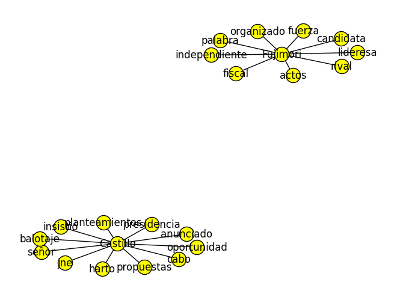
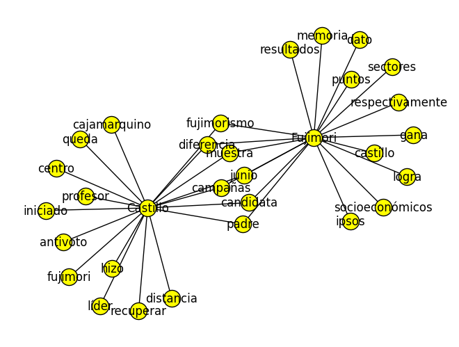
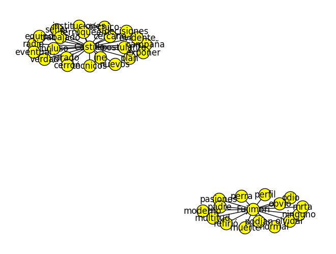
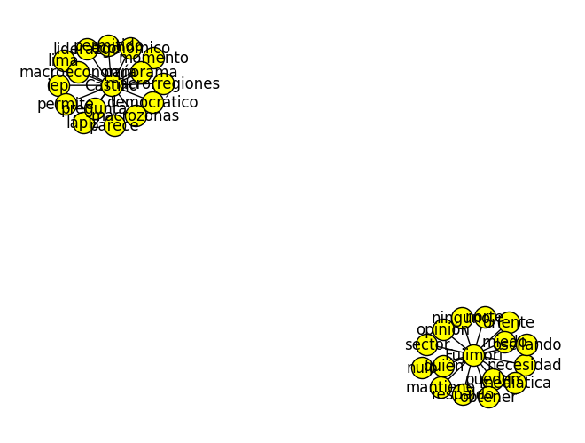
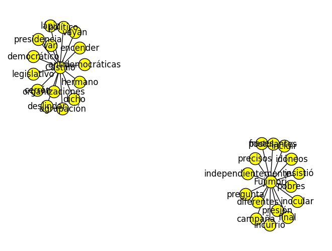
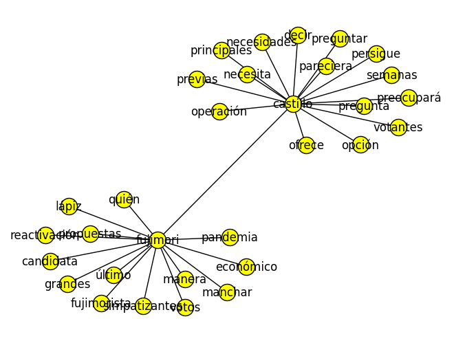
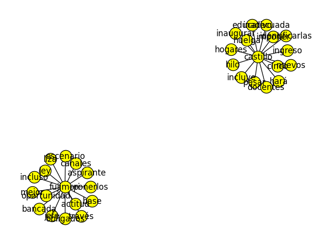
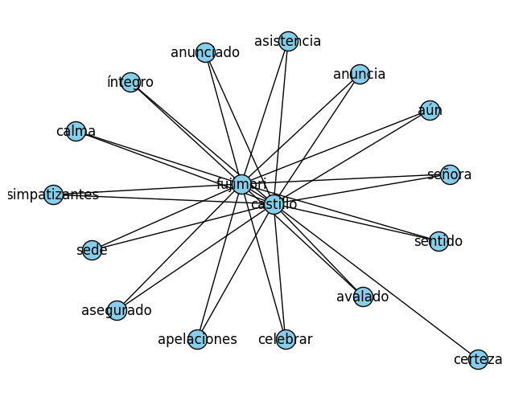
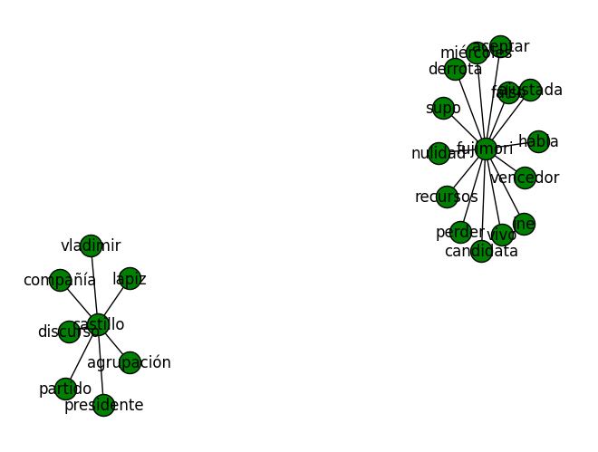
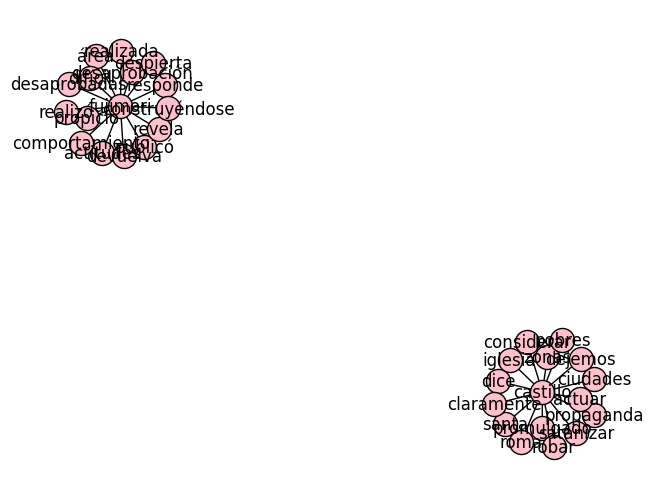

# Abre el archivo en modo lectura con la codificación adecuada
with open("elcomercio12abril_2mayo.txt", "r", encoding="utf-8") as file:
documents = [line.strip() for line in file] # Crea una lista con cada línea/documento
# Ahora 'documents' es una lista de documentos, cada uno como una cadena de texto
# Puedes iterar sobre 'documents' para procesar cada documento individualmente
for doc in documents:
print(doc) # Imprime cada documento
tensiones alza aproxima junio lado busca encontrar ventilar supuestas conspiraciones agrupación política preferencia calado últimos acusación banco central reserva bcrp manipulación tipo cambio crear incertidumbre votantes generar ganancias indebidas especuladores financieros excongresista marisa glave cercana agrupaciones izquierda liderado excandidata presidencial verónika mendoza ejemplo señaló semana salga información bcrp elevación precio dólar evitar especulaciones confirmarlas” diversas voces últimos puesto cuestionamiento labor autoridad monetaria presente coyuntura vale señalar recientes movimientos alza tipo cambio fuertes claros alrededor s dólar s dólar semana ciertamente depreciación moneda peruana marcada vivido procesos electorales anteriores rol bcrp mantener tipo cambio fijo receta control precios ensayado oportunidades pésimas consecuencias situaciones actual bcrp intentar fluctuaciones tipo cambio menos marcadas decir evitar incrementos contracciones demasiado bruscas tiempo institución acuerdo reporte oficial publicado jueves operaciones cambiarias va abril bcrp posición ofertante neto mercado cambiario us millones reducir volatilidad tipo cambio” palabras colocó cantidad considerable dólares economía local precio suba menos bcrp ninguna entidad pueden evitar incertidumbre genera eventual gobierno castillo impactos inmediatos mercados financieros atenuarlos acusaciones banco señalado presencia directores cercanos fujimorismo rafael rey josé chlimper hacen institución pasible sospecha participación política denuncias poca solidez aun si directores quisieran dirigir política cambiaria bcrp imputación tampoco prueba queda claro lograrían posición prevalezca directorio siete miembros pone marcha equipo técnicos altamente calificados arriesgar reputación posiblemente institución pública sólida motivaciones políticas lamentable julio velarde cabeza bcrp distinguido mejor banquero central mundo junto sólido grupo profesionales logrado largo tiempo inflación baja sudamérica tipos cambio estables región logros bcrp hablan mismos si trata encontrar responsabilidades incremento tipo cambio quizá conveniente afinar mira aquello causa incertidumbre mercados valor moneda local
después idas venidas fin concretó primer debate castillo fujimori ambos presidencia república fuerza popular respectivamente intercambio ideas chota cajamarca previo cuatro debates organizados jurado nacional elecciones jne propuesto líder docente miércoles rival dudó tomarle palabra sugerir llevase cabo fin semana si exposiciones programas gobierno siempre bienvenidas sana práctica empiecen dar lima tiempo preparación originó desorden aglomeraciones innecesarias peor momento ola pandemia buena atención centrada castillo lugar auspicioso todas encuestas previas excepción recogidas últimas semanas redujo participación atención masiva hacía novedoso escucharlo además medida aún presentado equipo técnico desautorizado voceros agrupación interés conocer directamente detalle planteamientos alto castillo fujimori enfocaron pullas inicio castillo remarcó oportunidad problemas judiciales enfrenta candidata polémica trayectoria fujimorista noventa período congresal iniciado lideresa fuerza popular señaló comunismo salto vacío” además cuestionar licencia sindical castillo si golpes debate pueden esperados encuentro hizo evidente primero populismo orden día ambos ejemplo reiteraron gobiernos lograría vacunación masiva peruanos entrar detalle lograrlo señor castillo sostuvo nuevo gobierno destinaría pbi sector salud asunto ampliamente calificado imposible fiscal fujimori prometió regiones canon destinaría peruano ambos curiosamente refirieron hacer generoso programa pensión docente bajando edad beneficios excongresista duplicando monto transferido momentos percibió intercambio competencia quién ofrecía segundo quedó claro representante aún logra cuajar agenda política económica viable refirió ejemplo necesidad prohibir importación bienes peruanos producen” si proteccionismo comercial beneficioso aplicó décadas anteriores insistió renegociación contratos transnacionales utilidades quede ” financie servicios públicos proporción bordea confiscatorio negocio habló reforma agraria nacionalización gas camisea suma candidata fuerza popular trajo nuevas ideas mesa ciertamente pudo desarrollar mejor líder mantuvo oscuridad anacronismo plan gobierno elaborado vladimir cerrón socio político hechas sumas restas si trató debate notas mitin político ciudadanos aprendimos propuestas carácter aún faltan cuatro debates programados anticipación jne organizó chota podrán usar impredecibilidad evento excusa prepararse mejor alta competición política peruana ciudadanos merecemos organización propuestas acorde seriedad ocasión
peor condiciones posibles pandemia dificulta contacto personas peruanos acudimos urnas ejercer fundamental derechos democráticos liderarán futuro cinco jornada empezó manera accidentada particularmente lima múltiples mesas demoraron abrirse ausencia miembros largas colas formándose exterior locales sufragio aun alrededor tarde mesas instalado gracias ciudadanos ofrecieron suplir asignados presentaron proceso fluyó ordenada verdaderas sorpresas salvo pocas quejas cuya pertinencia verificada ajustado asepsia esperábamos evitó suele ocurrir señor rafael lópez aliaga sugiriesen existencia irregularidades ningún tipo evidencia sustentarlo verdaderos sobresaltos recién llegaron noche noticieros dieron conocer primero flash boca urna luego conteo rápido ipsos mostraban encuestas trascendían víspera castillo consolidó ascenso alcanzado votos postulante colocándose primer puesto conteo según referida medición ipsos siguen fujimori fuerza popular rafael lópez aliaga renovación popular hará falta esperar resultados onpe saber cuadro final tras campaña marcada polarización presencia posiciones extremas atomización pequeño apoyo recibió aspirante sillón pizarro desenlace augura aún división camino ejemplo ostenta posición izquierda radical partidaria nacionalizaciones escéptica libertades individuales postulante fuerza popular renovación popular ofrecen perspectiva pegada derecha identifica sector privado mejor vía creación riqueza suma posible pocos meses peruanos tomar decisión opciones diametralmente distintas visiones divergentes conducirse economía conciben democracia papel ciudadanos señor castillo decirlo profesa perspectivas antojadizas sistema político funcionar discurso invoca disolución instituciones importantes tribunal constitucional congreso contribuya cambio constitución si pueblo da facultad haremos” dicho plan gobierno abiertamente agresivo libertad prensa allá ideología termine asumiendo riendas claro lidiar representación parlamentaria fragmentada resultados conocen confirman proyectado sondeos gobernanza dependerá gane gane tino nuevo jefe alcanzar consensos fin noche agitada peruanos termine decantar carrera hacia palacio gobierno dependerá trabajen finalistas próximos meses endoses consigan quedado contienda demandará acuerdos conversaciones sustentará futuro economía respuesta pandemia todas democracia
decir dice resultado cosechado domingo elecciones presidenciales castillo vio venir falsear realidad sondeos simulacros votación últimas semanas incluyendo podían divulgarse libremente persona interesada podía acceder registraron crecimiento intención permitían proyectar seguiría creciendo momento sufragio ver venir entender rápido incremento respaldo castillo ubicación lugares produjo manera señalada sierra sur central existe evidentemente mensaje requiere interpretado además mensaje repetido pues alguna reproduce significó votación listas parlamentarias organizaciones marginales ‘establishment’ político elecciones complementarias pasado rastrear realidad irrupción fujimorismo comicios conviene anotar paso comparación aquel fenómeno modesto acuerdo conteo rápido ipsos postulante conseguido apenas votos válidos menos obtuvo ejemplo verónika mendoza ocasión llegó tercera pasó moderado porcentaje conseguido castillo obtenido regiones apurímac impresionante acuerdo proyecciones necio consecuencia seguir ignorando mensaje aludimos descifrarlo decir verdad difícil descartemos antemano lectura puramente ideologizada apoyo candidatura ocupa si explicación votos ido hacia postulaciones izquierda representaban opción manera orgánica buena cuenta castigadas ánforas parece obvio reclamo insatisfacción concierne provisión servicios refiere representación política virtud castillo diría ninguno postulantes ninguno aquellos población identifica sistema fallado reiteradamente intento representarla menos… sector dicho enésima quizás viendo mirando tras sobresalto producen votaciones domingo población urbana mejor colocada frente beneficios derivados crecimiento económico últimas décadas vida alguna normaliza sigue menos igual cinco resultado indolencia obstante peligroso junto aquellas falta cambiar pone riesgo valioso conquistado manejo macroeconómico sensato mínimo grado institucionalidad acuerdo mayoritario respetar formas democracia procesar mensaje todas deviene pues indispensable trata asegurar futuro ejercicio gobierno generación riqueza traduzca fin mejoras sustantivas materias elementales salud educación seguridad toda enorme porción población lima lugares costa mirando ofrecer representación política atenta comprometida cercana únicamente conseguirá compatriotas miren aprecien hitos avance logrado progreso pacífico sostenido asegurado
avecina proceso importancia votar empuñando cantidad información posible proceso exaltada medios comunicación autoridades encargadas organizar comicios trata pues requisito obvio básico emitir responsable consciente implicancias tal decisión pueda tener vida ciudadanos artículo ley orgánica elecciones prohíbe difusión encuestas previos peruanos acudan urnas atenta directamente principio empezar evidente divorcio norma pretende realidad suele ocurrir prohibiciones expresas provisión producto servicio eliminan demanda mismos dirigen fuentes clandestinas si ciudadanos necesitan información encontrarán manera obtenerla pesar proscripciones riesgo aquello obtiene fraudulento engañoso toda medios confiables difusión impedidos compartir data verificada rigor encuestadoras profesionales ocurrió abril logran acceder sondeos reales gracias conexiones puedan tener quedan expuestos reportes hechizos terminan desinformarlos sentido si pretende ley ocupa proteger” población influenciada vísperas comicios claro logra contrario encuestas compiladas responsable ajustada criterios científicos hacen ofrecer imágenes realidad pueden nutrir decisiones votantes pretender salvaguardarlos condescendiente presencia tanta información falsa peligroso buscan influenciar” hacen base verdad mentiras norma casi imposible conjurar resultados domingo procesos pasados demuestran últimas semanas ocurren cambios preferencias ciudadanía merece conocer alberto fujimori subió vertiginosamente última semana elección ocurrió parecido jorge muñoz carrera municipalidad lima castillo pocas semanas ocupaba categoría ” escaló última semana suficiente llegar general campañas márgenes aspirantes cargos públicos estrechos tener información constante perfilan tendencias suma importancia punto cuestionen decida partir posición políticos preferencias si competencia exclusiva ciudadano soberanía derecho factores tome cuenta ejercer ciudadanía deberían limitarse base criterios antojadiza considere convenientes todas herramientas manos peruanos hagan consideren apropiado incluye encuestas prohibirlas momento perjudicarlos información contexto proceso cumple funciones fundamentales primero permite votantes decidir consciencia quiénes representarán mejor poder segundo importante anterior permite enfrentar mentiras suelen propalar silencio contraviene ambas
reciente reporte onpe actas sufragio congresal lima contabilizadas indica expresidente martín vizcarra cuenta votos preferenciales partido postuló pasará valla condiciones normales querría decir incorporación próxima representación nacional segura sabemos condiciones enmarcan situación respecto normales casos exmandatario enfrenta fuero común gobierno regional moquegua richard swing ‘vacunagate’ suman varias denuncias parlamento cuya resolución encuentra todavía pendiente relacionada último casos mencionados podría terminar frustrando expectativas llegar congreso jefe vizcarra hiciera inocular esposa hermanos vacuna sinopharm pese ninguno voluntario ensayos clínicos valido efectivamente pedido acusación constitucional inhabilitación ejercer cargo político diez aprobado subcomisión acusaciones constitucionales comisión permanente único falta iniciativa vista votada pleno parecer ocurrirá viernes disposición anuncian varias bancadas particular probable sesión inhabilitación prospere cuyo expresidente podrá acceder curul perspectiva correspondería cierto interpuesto poder judicial recursos amparo objetando llamado proceso express” supuestamente vulnerador debido proceso posibilidades conseguir pronunciamiento favorable alguno lucen remotas prescindencia suceda viernes obstante cuadro desconcertante ¿ político indicios abrumadores acusa haberse beneficiado vía corrupción entrega buena pro distintas obras mandato gobernador moquegua haber favorecido presidente contratación irregular personas allegadas forzó vacunación furtiva medio peores momentos pandemia pudo obtener votación alta comicios domingo honor verdad reconocer circunstancia completamente inédita acusaciones sentencias delitos distinta naturaleza recibido respaldo suficiente determinados sectores ciudadanos alcanzar puesto representación política aspiraban escándalos aludimos centro atención pública mentiras protagonista defendido clamorosas abundar descaro supone cargar toda mochila presentarse abanderado lucha anticorrupción… ¿ explica pues miopía afecta tantos votantes hora discernir quién respaldarán urnas seguramente ánimo revancha fuerzas igualmente deplorables enfrentó poder algún peso actitud constituye realmente justificación valedera dispuesto ignorar pecados si enfrentas enemigos” mensaje tácito pernicioso transmitía conocida fórmula roba obra” puesto evidencia igual claridad sigamos votando cortedad vista ninguna calidad podremos esperar representación política
prensa jugado papel importantísimo últimos mantenido ciudadanía informada tiempos crisis políticas constante clave destape múltiples casos corrupción hacer políticos funcionarios involucrados rindan cuentas actos imputa libertad expresión ejercicio restricciones periodismo independiente ingredientes claves sistema democrático intento socavarlos debería visto preocupación alarma precisamente elegidos disputar balotaje junio fujimori castillo deberían generarnos diferentes razones distintas escalas concerniente señora fujimori basta remitirse conducta bancada parlamentaria saber siempre afín trabajo medios comunicación recuerda congresistas principales defensores llamada ‘ley mulder’ buscaba prohibir publicidad estatal diarios radio televisión norma declarada inconstitucional tribunal constitucional quedó sinsabor aquello motivó animosidad prensa legisladores tiempo agrupación parlamentarias úrsula letona alejandra aramayo promovieron norma regular medios si antecedentes fujimori dejan desear aspecto plan gobierno presentado castillo jurado nacional elecciones deja espacio dudas intenciones establecer rígidos controles contenidos medios comunicación nítidamente descritas texto sustentan elucubraciones carentes evidencia conjeturas abiertamente ideologizadas campo publicidad estatal medios privados ejemplo documento cuestión plantea posiciones similares preocupantes según dice tipo auspicio soborno encubierto mantener sistema asienta gobierno” discurso socorrido fácilmente contradicho mayoría medios tipo ingresos constituyen pequeña reciben asimismo retiro continuación anuncios pagados determinarse capricho gobernante partir necesidades comunicacionales socialismo aboga libertad prensa prensa comprometida educación cohesión pueblo” señala punto posición cuyos alcances hacen explícitos refiere establecer censura previa encabezada ministerios educación cultura contenidos radio televisión atajar consideran basura” palabras poner gato despensero fin cabo ¿ contenidos basura” ¿ entrañan precisamente moral buenas costumbres sociedad peruana” plan gobierno propone salvaguardar ¿ garantiza herramienta amordazar contenidos incómodos ejecutivo absolutamente supone peligrosa puerta ningún demócrata debería abrir añaden falsedades texto lanza medio elementos obligatoriedad título periodista ejercer profesión animosidad expresa instituciones sociedad interamericana prensa ocasión velado libertad prensa países venezuela además cita vladimir lenin fidel castro rafael correa referentes ejemplares tópico contrario… dicho importante ciudadanos cuidadosos hora votar democracia preservarla presencia medios amarrados poder turno clave controles mordazas
esfuerzo fútil avezado intentar explicar determinada candidatura basados sola dimensión análisis acto ciudadanos condensamos imperfectamente aspiraciones materiales visión mundo simpatías frustraciones demanda representatividad gobierno escapar complejidad humana utilizando perspectivas unidimensionales resumir profunda novela unas cuantas ideas fuerza descripción trama significa pueda buscar explicaciones parciales ayuden armar rompecabezas temas quedaron claros domingo pasado ejemplo fuerte inclinación electorado nacional opciones corte conservador social efecto cinco ocuparon primeras posiciones sostenían diferentes visión búsqueda comprender mejor votos explicar súbito ascenso castillo pocas semanas atrás ostentaba lugar prominente encuestas tarea pendiente vista correlación índices vulnerabilidad votación obvio precariedad económica si historia completa juega rol minoría política duda mayoría zonas ganó dirigente sindical falta presencia carencias diversos tipos acercan lugares siglo xix siglo xxi significa necesariamente falten recursos acuerdo informe publicado viernes diario regiones producción minera áncash apurímac arequipa cajamarca cusco junín moquegua tacna castillo alcanzó máxima votación gobiernos subnacionales dejan invertir obras promedio s millones presupuesto” según cifras ministerio economía finanzas mef acuerdo contraloría existen obras infraestructura paralizadas suman casi s millones población vulnerable posiblemente menos interés ideologías políticas radicales problemas acceso servicios públicos solucionen brechas educación transporte salud conectividad digital guardan directa incapacidad aparato estatal proveer servicios adecuada pesar contar recursos generados actividad minera gobiernos regionales locales logrado transformarlos obras mejora calidad vida población displicencia inefectividad corrupción sistema repensarse raíz decíamos resumir sola dimensión obstante inevitable cuestionarse si enormes limitaciones descentralización aparato público claramente visibles pandemia arrastran décadas jugado rol preponderante mensaje fuerte claro interior seguir ignorando brechas quiera desconocer verdad pagamos consecuencias indolencia histórica
elegido presidente castillo fujimori cierto gobernar ciudadanos votaron propuesta prefirieron proyecto derrotado sentido apostar discurso divisor maniqueo marcan símbolo buenos malos pésima jugada toda entraña alienar grupos indefectiblemente servir liderar alcance objetivo asimismo distrae discusión importante viabilidad propuestas aspirantes sillón pizarro quieren implementar ‘terruqueo’ seguidores castillo describirlos ignorantes” absurdo constructivo pretenda definir balotaje avecina lucha patrón peón amo esclavo” propósito actitud candidata fujimori anunciado campaña tomará rumbo seguro existirá brecha intenciones comportamiento simpatizantes fragor campaña señor castillo cambio parece confiar vieja consigna marxista agudizar contradicciones insistido ocasión describir competencia ricos pobres” dividir ciudadanos interesante escuchar detalles enfrentarán problemas identificado representante fuerza popular centrado campaña salir atacar” covid reactivación económica ¿ lucirá exactamente primero concretas tomará segundo refiere luchar desigualdades defender pobres ¿ pasará dicho llegue gobierno fórmulas apela plan gobierno partido castillo presentó jurado nacional elecciones hacen difícil imaginar alcanzará metas objetivo ejecutar estatizaciones sectores estratégicos” meta condicionar grandes empresas invierten ganancias manifiesta admiración dictadores fidel castro vladimir lenin hacen evidente inspiración viene modelos manera reiterada útiles generar pobreza reducirla pocas palabras detenerse precisión doctrinaria discurso debería demostrar pertinencia busca implementar campaña necesita tampoco sirve insistir ilusión riqueza palabras castillo mansiones dueños ” causante pobreza si demostrado modelo económico vigente reducir dramáticamente pobreza tiempo grandes empresarios éxito actividades apuntalar generación riqueza tras estragos pandemia obligaciones próximo poder ejecutivo importante explique detalle buscará manejo estadísticas metas claras mensajes flamígeros medios comunicación tras desembocado parlamento harto fragmentado tras campaña buscado agitar aquello divide peruanos toca disputarán enfocarse problemas afligen insistir separa hará difícil tarea gobierno excluirá valoren derrotados partir julio
pasado atención centrada lógicamente combate sanitario nuevo coronavirus consecuencias económicas único obstáculo serio vivió marzo pasado congreso fragmentado impulsivo demagógico promovió normas miopes complicó gestión pandemia causó crisis política proporciones históricas cumplir gestión extraído demasiadas lecciones triste experiencia parlamentaria vista congreso electo elecciones generales mes repetiría vicios actual legislativo agregaría nuevos características compartidas actual congreso ejemplo atomización estructura parlamentaria diez bancadas deberán buscar consensos grande congresistas perteneciente legislativo fragmentado avances agenda políticas públicas necesarias ponen cuesta arriba experiencia reciente demuestra pesar diferencias coyuntura permite puntos encuentro regulares distintas bancadas suelen populismo conveniencia política demás vista poca cohesión mayoría bancadas esperable siguientes períodos dividan aún punto preocupante nuevo congreso asemeja actual baja experiencia relevante nuevos legisladores acuerdo informe elaborado diario nueve congresistas virtualmente electos equivalente total experiencia parlamentarios si suman asesores legislativos número nuevos congresistas algún paso ecosistema hemiciclo comisiones sube apenas pobre resultado únicamente responsabilidad partidos políticos electores impedimento reelección parlamentaria inmediata dañado seriamente construcción perfiles legislativos profesionales aporten experiencia congreso si renovación generacional positiva legislativo mayoría entrará aprender oficio tener malos resultados peor aún experiencia legislativa encuentran perfiles altamente cuestionables josé luna podemos afronta detención domiciliaria exasesora leslie olivos fuerza popular excluida elecciones haber consignado sentencia falsificación documentos agravio congreso” dicho paso nuevo ocasión presencia significativa miembros legislativo vínculos movadef órgano fachada sendero luminoso acuerdo reporte dirección terrorismo dircote tres virtuales congresistas pertenecerían sector radical magisterio policía vinculado movadef lado dirección nacional inteligencia dini señala existencia vínculos virtuales parlamentarios partido conaresutep facción movadef tres cinco virtuales parlamentarios negado relaciones movimientos afines senderismo aun participación directa poder determina marco legal además maneja información inteligencia reservada motivo preocupación diferencia actual congreso mandato reducido próximo legislativo funciones cinco además período crítico reconstruir bases económicas pospandemia quizá importante aún bases institucionales prevengan nuevas crisis políticas dada conformación existen dudas razonables congreso electo vaya cumplir ambos objetivos
si conteo votos congreso todavía terminado resultados conocen factible hacer proyección bastante precisa lucirá próxima representación nacional concierne número integrantes bancada criterio mente posible anticipar suerte correrán proyectos promovidos distintos partidos reciente campaña necesariamente deberían pasar legislativo particular aquellos requerirían mayoría absoluta votos mayoría calificada votos aprobados hacer semejante puntualización resulta fundamental pues discursos frente ciudadanía presidenciales muchas veces ignorado limitaciones ejercicio poder accede ejecutivo creando ficción sola voluntad gobernante podrían poner marcha determinadas iniciativas quizás promocionada reemplazo actual constitución vía asamblea constituyente primer problema empeño encuentra existe ordenamiento legal vía convocarla vigente carta magna efecto establece propio congreso única instancia facultada introducir modificaciones texto constitucional recientes promesas postulantes convocar referéndum llegasen palacio materializarse transgrediendo orden institucional… cambio hacer modificaciones parciales totales constitución través votación mayoría absoluta congreso luego ratificada referéndum través aprobación tales cambios mayoría parlamentaria calificada repetida legislaturas consecutivas aquí aritmética sugieren cifras electorales deviene determinante pues acuerdo informe elaborado diario bancadas grupos propugnan cambio total texto constitucional sumadas cerca miembros aquellas organizaciones abogan reformas parciales contarían cierto base experiencia asumir todas bancadas votarán disciplinadamente sentido llegar números requeridos escenarios arriba señalados bastante difícil tal circunstancia obstante necesariamente mala noticia permanentes cambios ley leyes satisfacer ánimo tal coyuntura política generan incertidumbre jurídica favorecen desarrollo pacífico sociedad afán tratan impulsar reemplazo actual carta magna parece existir irritación origen fantasía sola consignación nuevo texto derecho población salud educación calidad vivienda digna haría beneficios materializaran arte magia harían recordar obstante constitución rige redactada congreso constituyente elegido libremente provea beneficios quieren dar garantizados permitiendo privados generen riqueza obteniendo recursos fiscales partir decir figura exactamente inversa conseguiría forzando mecanismos institucionales convocar espuriamente asamblea constituyente prometido constituciones olvidemos esencialmente instrumento limitar poder gobiernan ímpetus cambiarlas muchas veces esconden interés quebrar tales límites avasallar resguardos democracia
abril peruano muerto cinco minutos causa covid mes confirmado fallecimiento cinco mil compatriotas mal cifras hacen evidente pasando momento letal pandemia corolario según expertos salidas semana santa llegada variante brasileña números manejan además apenas punta iceberg toda aún existen marcadas diferencias reportado ministerio salud minsa contabilizado instituciones esperarse navegando crisis cansancio parece haberse instalado peruanos pesar grave situación muchas aún vigentes paliar emergencia tomadas ligera necesidad desidia decirlo paso parece demostrar autoridades particular gobierno central seguras acciones pueden tomarse lidiar problema especie piloto automático coloca todas esperanzas flemático proceso vacunación difícil prever cambio significativo curva epidemiológica línea número personas seguirán muriendo presidente francisco sagasti claro decir resto mundo listo confinamiento total” razón nueva cuarentena severa implementado pasado agudizaría insostenible crisis económica generada doce meses pandemia si basamos desarrollado tipo restricciones pasado eficacia garantizada dada situación mayoría familias peruanas probable prohibiciones letra muerta ciudadanía simplemente seguirse solventando colegio médico cuestionado labor ejecutivo insistido necesidad convoque gremio tomar mejores decisiones crisis decano nacional miguel palacios celi dicho ejemplo aforos supervisados repartir mascarillas protectores manera masiva” acciones válidas deberían complementarse puedan surgir evaluación conjunta deben hacer expertos materia sanitaria encargados diferentes carteras ministeriales queda claro gobierno obligación descifrar mejorar desempeño emergencia disputarán esmerarse demostrar plan concreto luego julio siga enfrentando pandemia definan acciones derrotarán todas castillo fujimori describir tomarán controlar contagios asimismo garantizarán vacunación masiva peruanos menor tiempo posible ninguno empero dado cuenta estrategia clara efectiva lograr metas palabras ‘covid’ ‘coronavirus’ aparecen sola manifiesto presentado jurado nacional elecciones plan fuerza popular queda generalidades hagan hagan hoja ruta elegida incluir paquete macroeconómicamente sensatas viables evitar economía permanezca perjudicada apuntalar fortalezas lugar porfiadamente buscar derrumbarlas resto momento convertido cliché decirlo seguirnos cuidando sobrevivir
existido proceso historia reciente esgrimido partes contienda argumento juego vigencia democracia tales advertencias general asociadas trayectoria política vinculaciones internacionales identificaba peligroso subsistencia derecho declaraciones personas entorno menos aún anuncios formasen plan gobierno presente coyuntura obstante cambiado discurso programático entrevistas conceden medios congresistas virtualmente electos organización posible distinguir nítidas amenazas institucionalidad democrática debemos señalar documento presentado jurado nacional elecciones reseñar acciones adoptaría llegar poder ejemplo afirma ministerios educación cultura deben evaluar contenidos televisión radios difusión evitando atente moral buenas costumbres sociedad peruana” adelante puntualizan supuestas razones ley regulación necesaria” evitar ‘libertad’ enriquecimiento chantaje difamación calumnia mentira” decir casi versión manual imponer mecanismo censura crítica información incómoda gobierno turno sentido pronunciado además futuros parlamentarios samuel coayla partido partido democrático dice ‘regule’ refiere ejemplo medios comunicación propagan programas llevan culturizar pueblo” zaira arias vamos ganar programa persona van tener retirar” dijo cámaras conductor espacio político previamente llamado miserable” misma legisladora ciernes lado debemos versión acabada proyecto abiertamente inconstitucional permanentemente habla predios maestro castillo plantea plazo seis meses va llamar asamblea constituyente automáticamente va disolver congreso” proclamó atrás luego añadió va quedar mesa permanente sic actuando legislativo mano ejecutivo dará paso asambleístas van redactar nueva constitución” futuro parlamentario guillermo bermejo abundado tesis eventual cambio constitucional decidido congreso manda actual ley leyes ánforas” comentario acompañó advertencia llegar poder piensan expulsar dea agencia norteamericana administración control drogas principal colaborador lucha narcotráfico suma pues voceros calificados opciones disputan acceso gobierno describiendo pelos señales tormenta piensan desatar si obtienen triunfo tormenta decíamos principio afectaría instituciones descansa democracia libertad prensa separación poderes limitación constitucional capacidad acción administra ejecutivo etc manera definitiva tomar precauciones anuncios temporal sabe manera absurda dejarse abatir desgracia
últimos diversos representantes partido presidencia castillo descrito explícita ejes principales proyecto político sustentan destrucción múltiples pilares democracia anunciado disolución congreso instalar buenas primeras asamblea constituyente desarticulación tribunal constitucional censura estatal medios comunicación depredación propiedad privada retahíla autoritarias antípodas libertad derecho principal exponente todas intenciones líder partido marras vladimir cerrón además diversos parlamentarios electos vienen haciendo eco empresa política ocasiones difícil definir quién verdaderamente enfrentará fujimori balotaje ¿ líder sindicalista encabeza fórmula presidencial exgobernador junín condenado negociación incompatible señor castillo trató responder pregunta entrevistado radio local trabajado programa gobierno allá diga deje decir vladimir cerrón va gobernar ” asimismo trató moderar discurso venían defendiendo adláteres declaró respetaría orden democrático expropiarían propiedades defendería libertad expresión juicio difícil creer empezar tarde castillo busque desentender socio vladimir cerrón consignas políticas trata figura discreta agrupación pues además claro líder cara aparece concerniente retrato portada documento campaña presentó jurado nacional elecciones plan gobierno página web partido monopolizada videos si castillo defendido consignado dicho documento descartando suscripción hoja ruta” moderación discurso lenguaje estructurado función grandes necesidades … podemos decirles ‘ vendo cosa mañana ’ sabiendo realidad misma” incluso momento señor cerrón insistió rol vocero decir hoja ruta castillo partido consecuente consciente planteamientos” si inconsistencias pronunciamientos cuestión bastan presagiar encuentro racionalidad democrática distanciamiento exgobernador junín radicalismo representarán parlamento zanja discusión elegidos auspicio candidatura líder sindicalista principales promotores agenda extremista cerrón cuesta imaginar posible modulen convicciones tiempo postulante jefe pueda ejercer cargo antagonizando personas llevó legislativo ahínco dedicado reseñar traerían abajo cimientos democracia suma elector tomarse pinzas conatos prudencia partido basado campaña contrario tiempo mirar escepticismo supuestos distanciamientos personajes vladimir cerrón portales documentos vinculados candidatura castillo parecen rendirle culto fin cabo tirano poder edulcorando consignas
luego encabezó larga violenta huelga docente objetivo suavizaran criterios evaluación maestros cercanía presidencia castillo individuos involucrados movadef brazo político sendero luminoso ningún secreto explicado detalle exministro interior carlos basombrío sección opinión mira dirección terrorismo policía nacional dircote pues considera evidencias documentadas proximidad organización cuestión consultado materia aspirante jefatura rechazado vínculo grupo homicida fachada política rechazo quede claro deslindamos abiertamente situaciones posturas extremistas” dicho añadir luchado terrorismo” seguirán haciendo insistió sentenciando interesan expresiones mediáticas ” obstante reza viejo adagio si río suena piedras trae” piedras abundan ameritan respuesta asertiva clara pretende presidente república especialmente sospecha alcanza personas harto cercanas bancada colocado congreso informe publicado diario ofrece muchísimos detalles inquietantes sabe señor castillo fundador federación nacional trabajadores educación fenateperú grupo sindical secretario general octubre pasado miembro asociado movadef según información dircote reportes inteligencia archivos propio fenate padrón grupo prosenderista fenate podido confirmar diario integrantes agrupación fachada sendero luminoso filas césar tito rojas lucio ccallo ccallata primero además miembro base organización inaugurada castillo fundadores grupo prosenderista incluso según dircote registra visitas miembros banda terrorista recluidos penal yanamayo segundo lado secretario general base collao puno movadef según dircote asimismo congresista electo edgar tello montes creó referido gremio junto castillo nombre aparece informe elaborado mencionada oficina policía agosto titulado infiltración movadef dirigencias magisterio” acuerdo fuerzas orden tello dirigentes magisterio firmó pronunciamiento apoyo movadef enero virtuales parlamentarios germán tacuri valdivia paul gutiérrez ticona señalados reporte prescindencia descargos puedan hacer mencionados editorial nombrados notas producidas diario materia claro existe patrón desconcertante entorno castillo cuesta creer gratuito casual tantas personas asociadas misma organización siniestra alrededor sola persona partido ¿ trata exceso desidia hora evaluar ingresan partido lápiz existe atisbo simpatía ideas movadef presidencia ciudadanía mejores explicaciones llegar gobernarnos todas víctimas sendero luminoso merecen verlo reivindicado
espacio mostrado particularmente escépticos respecto credenciales institucionales semana ejemplo resaltamos vínculos castillo individuos involucrados movadef organismo fachada sendero luminoso amenazas sorprendentemente explícitas diversos miembros dicho partido realizado formas democráticas elementales conoce perfila agrupación obvias tendencias autoritarias riesgo balance institucional pecados hacen santo trayectoria política fujimori candidata fuerza popular salpicada actos cuestionables relaciones turbias sabe fujimori mira ministerio público presuntamente haber recibido aportes ilegales campañas políticas fiscal josé domingo pérez equipo acusaron candidata poder judicial marzo pasado delitos crimen organizado lavado activos obstrucción justicia falsa declaración procedimiento administrativo fiscalía pide pena lideresa fuerza popular pasado temporada prisión preventiva allá debate solidez jurídica acusaciones equipo especial lava jato actitud fujimori grupo lidera contraria principios democráticos ocasión lado vínculos personajes sindicados miembros banda criminal cuellos blancos puerto blindaje congresal funcionarios útiles fines fujimoristas manchas difíciles ignorar lado confrontación grupo parlamentario forzó poder ejecutivo administraciones presidentes pablo kuczynski martín vizcarra orientar enorme poder legislativo hacia puesta marcha agenda constructiva quedará historia muestra miopía mezquindad política fecha aparte tibios comentarios fuerza popular cayó círculo vicioso confrontación” fujimori demostrado genuino aprendizaje arrepentimiento manera manejó asuntos últimos cinco ¿ deberían votantes confiar cargo poder ejecutivo bancada congreso usará posición obstruir investigaciones incómodas avasallar adversarios políticos expandir esfera influencia allá corresponde ningún gesto candidata suficiente convencer duros detractores palabra empeñada olvidarse apenas ceñida banda presidencial reconocimiento sincero varias equivocaciones acompañado compromisos garantías institucionales equipo gobierno independiente podría primer paso intransigencias fujimori ganado pulso antivoto ostenta aparición rival castillo serias inclinaciones autoritarias limpia fujimori propias culpas si candidata fuerza popular quiere alternativa democrática amenaza representa bastará resaltar debilidades oponente respecta pasivos institucionales principal enemigo misma fin sembró vientos cosecha tempestades
si algún momento decir pandemia totalmente control momento últimos ocho registro fallecidos diarios confirmados covid acuerdo ministerio salud minsa superó decesos menos cuatro ocasiones pasado siquiera peor momento llegó según últimas estadísticas peruano muere cuatro minutos enfermedad trata colapso casi total sistema sanitario inefectividad relativa políticas prevenir nuevos contagios avance lento campaña vacunación meses luego haber recibido primer lote vacunas apenas población menos dosis proporción doble colombia casi cuádruple méxico unas veces chile supera inmunizados parciales totales mencionar pares alianza pacífico realidad miles peruanos posibilidad decidido inmunizarse bajo propios medios acuerdo informe publicado diario si inicios viajaban mil peruanos mes eeuu abril mil presumiblemente obtener vacunas allá disponibles varios vacunación peruanos debería siempre celebrada parece total agrado titular minsa óscar ugarte nivel desesperación buscar vacunarse cuanto reflejando desigualdades sociedad pueden hacerlo pueden hacerlo quieran” declaró semana pasada rol necesidad poner normas discutido ejemplo priorice personas vulnerables salto fila posibilidades económicas vacuno ” indicó entonces visión ministro preocupante primer lugar resulta obvio ciudadanos inmunizados demanda servicios médicos colapsados menor disponibilidad vacunas resto alcanzará inmunidad colectiva registrarán menos muertes mirada mezquina podrían entender beneficios netos negativo segundo lugar deja llamativo realiza crítica principal responsable proceso vacunación local marche paso lento mediados semana pasada regiones empezado inmunización saltar fila” refiere ministro personas pueden decidido hacer esfuerzo moverse fila avanza quiere hacer pasar consecuencia desigualdad social realidad refleja mejor falta efectividad aparato público manera correcta reducir desigualdades llevar vacunas rápidamente mayoría mirar cierto recelo usan propios medios obtener aquello provee vale recordar adelantaron turno desleal funcionarios autoridades aprovechando cargo accedieron escondidas inmunización crítica empieza casa
principal propósito sistema balotaje toque asumir poder después elecciones haga respaldo sector significativo población asunto cobra particular importancia proceso actual cuya ninguno postulantes alcanzó siquiera válido única virtud sistema después profusión propuestas ciudadanía vio expuesta etapa anterior campaña ocho semanas podemos concentrarnos aspirantes presidenciales planes gobierno constituyen ocasión ideal conocerlos mejor… menos debería obstante sucediendo oportunidad transcurridas ocho semanas pocas precisiones obtenido postulantes fuerza popular planes equipos gobierno generalidades consignas propagandísticas esencialmente dejan mítines entrevistas si extraer apariciones públicas señora fujimori señor castillo simplemente juego adivinanzas últimos diversos cuestionamientos prensa candidatura plantea esfuerzos orientados decir planteamientos realmente definirlos plan presentó jne participar comicios ejemplo dicho aquello ideario” trabajado programa gobierno allá diga deje decir vladimir cerrón va gobernar castillo” sentenciado aparte entiende plan gobierno presentaron autoridades electorales cierto aun supuesto documento continúa ver luz semejante sucede presunto equipo técnico domingo noche entrevista televisiva inquirió identidad integrantes castillo repuso nombres voy bajar situaciones equipo” luego dirigiéndose periodista interrogaba añadió voy dar nombres luego entrevista” sabe produjo si pensamos lado iniciativas combatir pandemia covid aspirante aludido casi pasar declarar emergencia sector salud incrementar presupuesto pbi priorizar vacunación universal potenciar sistema atención primaria programa médico familia panorama presenta igualmente brumoso pues aquello pasa recitación rosario buenas intenciones fondo señor castillo parecería sugerirle ciudadanía endose apoyo ánforas ” maestro rondero hombre campo” dé supuesta idoneidad planes… siquiera existencia verdad pretensión inaceptable profesor educación primaria ocupa debería lleno respuestas mensaje debería claro directo fácil transmitir lugar recibimos declaraciones borroneadas reemplazadas supuestamente desautorizan anteriores reiteración frases escuchar pueblo” sirven salir paso demandan líneas maestras derrotero brilla ausencia buena noticia situación ambigüedad difícilmente sostenerse cinco semanas
oferta castillo caracterizado aquello pretende destruir aquello busca mejorar construir campaña aspirante presidencia apuntado desactivación tribunal constitucional defensoría pueblo derogación reforma magisterial revisión” corrección” trabajo sunedu disolución poder legislativo si procede gusto búsqueda convocar asamblea constituyente asimismo sustitución actual modelo económico fórmulas pasado demostrado incapaces generar bienestar ciudadanía lunes añadió instituciones lista superintendencia transporte terrestre personas carga mercancías sutrán autoridad transporte urbano lima callao atu organismos encargados velar salud sistema transportes mototaxistas sufriendo desactivar sutrán abusiva desactivar atu lima hacer verdadera reingeniería transporte” dijo chiclayo clara contorsión populista llegar palacio gobierno cumplirla daría oxígeno caos vehicular generado informalidad precariedad servicios ofrecen responsable muerte miles ciudadanos causa accidentes muchas veces propiciados pésimas condiciones conducen centenas coasters buses colectivos pesar señor castillo acostumbrados escuchar intenciones referirse acciones lícitas tomará alcanzarlas criterios técnicos equipo desconocido elaborado concretarlas insista deja llamar atención sencillo entender objetivos fin cabo parlamento actual patentó promoción disparatadas fin obtener aplausos tribuna claro busca hacerse votos ciudadanos espaldas legalidad provisión servicios calidad fiscalizados sutrán atu gratuito pues postulante referido directamente mototaxistas cuales sumaron paro liderado transportistas carga pesada marzo pasado reclamar amnistía multas impuestas sutrán miles infractores preferirían ver desaparecer institución vigila lugar cumplir normas vigentes cuya aplicación principal objetivo institución cuestión fin favorecer usuarios animosidad atu preocupante trata organismo relativamente nuevo plantea meta especialistas diario abogado organismo organice implemente gestione sistema integrado transporte lima callao sistema múltiples cabezas competencias cruzadas municipios ministerios diversos organismos estatales sencillamente funcionaba terreno fértil caos asimismo pesadilla proyectos inversión tener navegarse maraña jurisdicciones burocráticas distintas autoridades obtener resultados ¿ reemplazaría atu castillo refiere reingeniería” transporte ahonda detalles ¿volvería igual ¿quién supliría sutrán ¿ seguirá enfrentando informalidad sobran preguntas faltan respuestas plan gobierno siquiera menciona instituciones castillo anunciado desactivará capítulo dedica transporte sumamente vago apunta improvisación incertidumbre marcas registradas
proceso definiciones políticas compromete continúan compitiendo acceder presidencia partidos postulantes quedaron carrera tras votación abril responsabilidades deberían eludir medida representaron determinados sectores ciudadanos etapa contienda corresponde efectivamente velar suceda intereses valores tales sectores dolidos noticias trajo conteo votos temerosos perjudicarse si involucran demasiado respaldo rechazo posiciones aspirantes todavía liza prefieren ignorar demandas situación plantea trata cierto forzosamente endosen candidatura señalen riesgos entraña orientar manera confiaron consiste precisamente tarea líder político liderar sentido eventual respaldo opciones disputa debería excandidatos corolario premisa lamentablemente viendo mayoría casos ajusta descripción endose producido manera sumaria acompañarlo luego crítica asuntos votantes expostulante otorgado podrían sentirse defraudados imposibilidad renunciar protagonismo alcanzado campaña convierte obstáculo expostulante ejerza eficazmente crítica apoyo según dicte coherencia líneas generales ofreció participantes proceso verónika mendoza buen ejemplo primero hernando soto segundo excandidata presidencial juntos sabe anunció rápidamente organización política postuló apoyarán castillo consecuencia previsible sintonía guarda planes estatistas simpatía regímenes totalitarios continente frente anuncios desactivación” defensoría pueblo atu intervención labor viene llevando adelante sunedu obstante verónika mendoza dicho ¿debemos entender conforme planes castillo respecto sencillamente prefiere callar afectar chances izquierda junio hernando soto lado luce interesado tener rol estelar ayudar antiguos adherentes decidir hacer proponiendo candidata fujimori fórmula propuesta inclusiva mercantilista castillo fórmula politice economía dentro régimen comunista” escrito comunicado divulgado ¿debemos entender acaso dé razón obtendrá gracia predios avanza parece existir impresión urgencias pues mayoría congresistas elegidos listas anunció votará comunismo” canciller francisco tudela miembro gabinete sombra” alejado proyecto político conjunto argumentando hora decisiva indeciso esperar ver quién gana” severa llamada atención fin igual señora mendoza parecería dispuesto actuar convidado piedra … menos concedan centro escenario indica desencanto ciudadanos líderes políticos explicación fácil difícil solución
dudas si castillo acudiría debates jurado nacional elecciones jne organizado últimos domingos mayo previos balotaje disputará junio candidata fujimori fuerza popular conminó miércoles corra” exponga propuestas después sindicalista respondió retando exparlamentaria primer encuentro desarrolle chota cajamarca tierra natal luego postulante partido naranja respondió proponiéndole den cita lugar elegido domingo pm día siguiente castillo exigió lleve cabo sábado pm señora fujimori dictadura usted acostumbrada quebrarme agenda puesto pueblo si apurada debatir espero sábado tarde plaza armas chota debatir puntos quiera” lamentablemente después tantas idas venidas intentos postulantes sillón pizarro mostrarse dientes posibilidades evento concrete parecen remotas lado señor castillo sorprendido repentino resquebrajamiento salud según informó forzó suspender agenda proselitista prevista atenderse clínica privada jne asegurado organizar intercambio tipo poca anticipación cuestiones logísticas polémica programada además asignado presupuesto encuentro improvisado podría contar duelo anunciado podrá darse primero si lápiz recupera segundo si consigue organismo neutral arbitre juego participaron fujimori castillo seguro consecuencias políticas ambos quizá reflejen encuestas vayan publicarse semanas venideras circunstancia empero parece dejar mejor parada toda accedió peros planteados rival último demostrado sumamente escurridizo especialmente prensa propuesto interpelarlo declaraciones reticente aclarar puntos controversiales proyecto político debate finalistas proceso cobra importancia ambos casos sometan intercambio vivo directo declaraciones puedan refutadas rival simplemente celebradas muchedumbre simpatizantes harto nutritivo electores además situación deja espacio evasivas postulantes contradigan antojo podría oportunidad dorada ciudadanos obtengan respuestas especialmente castillo recientemente dedicado mucha energía generar preguntas cabe duda tipo enfrentamientos democráticos vitales procesos electorales nunca ambos contendores encuentran aceras ideológicas distintas bagajes preocupan ciudadanía fujimori permanece fresca memoria prepotencia ejerció bancada congreso disuelto castillo alarma facilidad propone derrumbar instituciones básicas continuación sistema democrático tribunal constitucional parlamento defensoría pueblo etc fundamental ver proponen disipar dudas suscitan cuán hábiles bajo presión debate mañana dé lamentable desconcertante ambos deberían asegurar presencia encuentros organizados jne pretextos bravatas dignas peleas gallos necesita verlos acción
#from itertools import combinations
#[x for x in combinations(contenido.split(),2)]
#pip install scikit-learn
from sklearn.feature_extraction.text import CountVectorizer
import pandas as pd
vectorizer = CountVectorizer()
X = vectorizer.fit_transform(documents)
dtm = pd.DataFrame(X.toarray(), columns=vectorizer.get_feature_names_out())
Funcion para buscar asociaciones
import numpy as np
# Definir una función para encontrar palabras asociadas
def find_associations(dtm, word, threshold=0.5):
if word in dtm.columns:
# Calcula la correlación de 'word' con todas las otras palabras
correlations = dtm.corrwith(dtm[word])
# Filtra las palabras por un umbral de correlación
return correlations[correlations > threshold].drop(word).sort_values(ascending=False)
else:
return None
# Buscar asociaciones para "castillo" y "fujimori"
assoc_castillo = find_associations(dtm, 'castillo', threshold=0.5279616041885833)
assoc_fujimori = find_associations(dtm, 'fujimori', threshold=0.686436925124161)
Leyendo LR 1° periodo
# Abre el archivo en modo lectura con la codificación adecuada
with open("larepublica12abril_2mayo.txt", "r", encoding="utf-8") as file:
documents_LR1 = [line.strip() for line in file] # Crea una lista con cada línea/documento
# Ahora 'documents' es una lista de documentos, cada uno como una cadena de texto
# Puedes iterar sobre 'documents' para procesar cada documento individualmente
for doc in documents_LR1:
print(doc) # Imprime cada documento
agenda considera temas claves pandemia reactivación educación lucha corrupción chota capital provincia homónima ubicada región cajamarca sierra norte ubicada kilómetros norte ciudad cajamarca cobra interés mediático tierra protestas históricas rebeliones escondidas encabezada eleodoro benel considerado historia local caudillo andino” rebelión chota gobierno leguía chota convertirá foco atención pública debate eventualmente participarán profesor castillo ganó candidata fujimori arribó ¿cuáles temas respondidos agenda incluirá emergencia sanitaria pandemia requieren además cronograma claro plan estructurado considere vacunación adoptarán cercar virus evitar nueva ola contagios garantizar atención hospitalaria mejore oxígeno camas uci educación directamente afectada pandemia profundizado brecha acceso tecnología aumentando desigualdad adicionalmente abordarán temas referidos medio ambiente potencialmente grandes issues” generan conflictividad diversas regiones reactivación económica punto agenda crisis económica cruza toda sociedad afectada despidos cierres empresas cuarentena falta ayuda gubernamental miles pequeñas microempresas cerrando pese constituyen principal fuente empleo seguridad ciudadana materias abordadas trata solamente reducir delitos garantizar coexistencia segura pacífica mejore calidad vida población escucharemos propuestas enfrentar cáncer corroe institución pública sociedad conjunto corrupción encuestas recientes considerado principal tema agenda pública grave corrupción resulta clima impunidad decir convicción ciudadanos existen personas encima ley pese demostración culpabilidad pruebas certifican reciben sanciones ciudadanía necesita escuchar hacer haremos urgentes aterrizadas creíbles garanticen futuro ojalá chota escenario elegido proponerlas
primer debate presidencial allá frases efectistas deja propuestas análisis debate produjo satisfizo imaginable insistirán discutir ganador mostrarán porcentajes favor pullazos lanzaron frases efectistas utilizadas transcurridas unas horas concluida jornada lecciones aprendidas primer debate presidencial primer lugar destacable encuentro escenario chota organización rápida corriera cargo autoridad local prestó concurso lograrlo conducción cargo periodistas locales contribuyó fluidez evento luego debates presidenciales organizaron grandes hoteles centros convenciones presentación plaza pública zona rural pocos recursos técnicos permite reencontrarnos ponerles reflectores necesariamente lima grandes capitales logro haber escuchado propuestas casos sustentadas lanzadas ideas requieren reflexión base necesaria construir políticas gobierno regirán próximos cinco cinco mil médicos postas inversión educación salud entrega sueldo presidencial beneficio vulnerables cambio constitucional mediante asamblea constituyente revisión contratos empresas transnacionales pensión millones vacunas rusas propuestas castillo candidata fujimorismo reducción impuestos combustibles entregar directamente población canon hidrocarburos soles beneficiarios pensión bono oxígeno feria vacunas diversos laboratorios intervención sector privado tres mil colegios equipos digitales escolares equipos técnicos hacer esfuerzo convertir propuestas planes viables concretos costos financiamiento ejercicio serio política quién da quién traza horizonte señala camino
castillo encabeza preferencias regiones llega fracturado escindido elección muestra hablamos siguientes profundo voz voz ignorados luego centralismo limeño vuelve profundizar grieta va haciendo honda clama atención retroceder demasiado frepap campanazo trajo castillo profesor rondero campesino outsider lima clase política recuerda larga huelga magisterial viejo conocido provincia habló urnas fuerte claro región andina volcó respaldo regiones votación según ipsos américa tv citar apurímac cajamarca huancavelica ayacucho puno castillo resultado primero regiones si buscan conexiones expliquen diremos regiones extremadamente pobres profunda desigualdad histórica logrado nivelar piso dotando oportunidades habitantes especial pobres dicho señalar habilidades flamante vencedor lograr crecer ritmo sostenido últimos meses promedio punto día última semana básicamente mantenido contacto directo electorado cautivo movilizaciones masivas estilo prepandemia difundido promesas electorales medios masivos apoyo publicitario cambio constitución reiteradas promesas electorales eliminación sistema afp propuesto elección popular jueces fiscales procuradores revisión renegociación contratos empresas transnacionales promesa campaña estatización nacionalización empresas sectores estratégicos camino pronunciado impuesto riqueza mostrado perfil conservador familia derechos mujer educación siguientes semanas responsable buscar alianzas consensos consoliden apuesta contrapelo alianza pueda invocar fujimori derecha peruana
volvemos foja cero castillo fujimori reinician campaña convencer votaron consolidar alianzas alrededor propuestas ambos pronunciado favor amplia concertación garantiza intenso debate casi meses separan junio castillo demostrar viabilidad plan gobierno capacidad concertar organizaciones políticas organizaciones sociales populares despejar cancha ampliar margen votos respaldo ciudadano asegurado voluntad lograr concertación amplia fujimori quiso ganar iniciativa proponer defensa actual constitución especial capítulo económico eje articulador potencial alianza alrededor candidatura tema insiste cambio constitución señala materializaría partir consulta popular elecciones municipales debate punto agenda pública influirá directamente elección junio salud pública pandemia incluida vacuna tema fondo profesor castillo precisado declarativa considera salud derecho constitucional garantizar operativa propone universalización sistema salud unificación servicios además reforzar atención primaria atención covid vacuna defendido vacunación universal gratuita poniendo manos proceso adquisición aplicación punto candidata fujimorismo promovido concurso privados resulte materialmente imposible hacerlo suma vacunas privados vacunados” campaña ofrecida deberá explicar concretar deberán exponer además ideas tiempos lograrlas potencial financiamiento decir empezamos ronda deberán mostrar sensatez propuestas voluntad concertar prejuicios descalificación previa
expresidente uruguayo josé mujica analizó derrota andrés arauz ecuador pidió castillo mirarse espejo ecuatoriano ¿ pasó ecuador alertado movimientos progresistas región después correísmo corriente afín expresidente rafael correa derrotado derrota contribuido activamente organizaciones políticas afines izquierda producto división campo popular movimiento creo banquero guillermo lasso alcanzó victoria frente andrés arauz tercer intento lasso ocasiones derrotado primero rafael correa luego lenín moreno actual presidente protagonista ruptura persecución exsocio mantiene bélgica cercado procesos judiciales condenas bajo cargos corrupción arauz ubicó primer lugar preferencias seguido lasso movimiento indígena representado yaku pérez peleó pase partido novísimo izquierda democrática xavier hervas cabeza obtuvo despreciable ubicó cuarto lugar yaku pérez confederación nacionalidades indígenas conaie llamó organización nulo izquierda democrática xavier hervas dijo votaría lasso bloquearon posibilidades arauz ganar ocasión ¿ ambos movimientos políticos alejaron correísmo coyuntura ecuador debate medio crisis sanitaria crisis económica falta gobernanza población quiere soluciones valen ideologías ocurrido ecuador espejo tomar enseñanzas pronto buen ejemplo ofrecido ganador guillermo lasso discurso agradecimiento señaló busca sosiego político persecución arauz propio rafael correa señalado darán nuevo gobierno gobernabilidad requiere enfrentar peor crisis historia
conteos oficiales punto acabar van conociendo conformaciones bancadas congreso república identificando nombres integrantes evidente composición congreso representación fracturado convertido concertación difícil potencialmente podría responder polarización evidenciado obstante expectativas ciudadanía nuevo congreso guardan priorización agenda política temas vinculados necesidad apremiante población afectada pandemia crisis económica gane sabe responder urgencias espera congreso obstrucción cumpla agenda pública contrario aliente determine iniciativas ejecutivo dotándolo gobernabilidad requiere primeros meses estabiliza régimen propone equipo gobierno plantea congreso primeras define rumbo congreso función fiscalizadora tiempo equilibrante potenciales acciones pueden ir detrimento libertades derechos ciudadanos abuso mayorías congresales últimos cinco desdibujado totalmente función contrapeso poder ejecutivo generando inestabilidad franco deterioro calidad democracia votaciones mansalva acostumbrados alteraron orden constitucional caldo cultivo protestas masivas saldo vidas aún lamentamos perdió tiempo valioso enfrentar pandemia generaron condiciones puesto mejor posición enfrentar efectos económicos cuarentena crecen expectativas contar parlamento vigilante democrático sensato equilibrado pedir
luego reclamos denuncias cuestionamientos procesos irregulares permitieron existencia vacunas vip empieza nuevo plan vacunación ofrece cubrir requerimientos dosis adultos julio próximo falta despejar incógnita vacunas sinopharm entregaron plazo convenido ministro óscar ugarte aclararle nunca llegaron millones vacunas chinas convenidas originalmente llegada nuevas vacunas unas provenientes mecanismo covax facility propio laboratorio pfizer mostrar mejor ritmo registrado anteriormente garantizará nuevo plan vacunación cumpla cabalidad vacunación seguirá gratuita garantizada anunciado cuentan compromisos compra vacunas millones dosis búsqueda nuevos convenios pese escasez antídoto registra nivel mundial nueva propuesta centralizar minsa proceso vacunación base datos reniec enfoque territorial diseño estrategia aún falta incluir nuevo esquema regiones según asegura gobierno irán añadiendo progresivamente regiones vacunando libertad arequipa san martín loreto cusco cajamarca nueva plataforma web apunta facilitar conocimiento difusión fechas lugares vacunación adultos número dni pongo hombro” nombre web podrán hacer consultas locales vacunación habilitados acoger ubican distritos riesgo luego grupo vacunación corresponderá cubrir grupo vulnerable mostrado número víctimas debido pandemia esperamos nuevo plan facilite haga ágil proceso retraso recordemos actualmente mejor vacuna lleves puesta única posibilidad evitar necesidad camas uci decesos
lugar formar causa” señala resolución legislativa aprobada votos favor abstenciones pleno congreso puso fin evasión dribleo justicia protagonizados excongresista edgar alarcón acusación formulada parlamentaria felicita tocto ponente subcomisión acusaciones constituciones logró objetivo demostrar existen suficientes elementos edgar alarcón funcionario larga data ex contralor república pueda procesado enriquecimiento ilícito alarcón perdió inmunidad elevado fiscal nación corte suprema determinará curso seguirá proceso desbalance patrimonial gestión contralor tres denuncias constitucionales tras meses presentadas propia zoraida ávalos recién van ventilándose comisiones correspondientes corresponden delitos corrupción funcionarios cometidos período contralor período previo nombramiento aún alto funcionario ente control acumuló menos denuncias siguen ventilando fuero común menos listas inicio juicio público todas denuncias acumuladas alarcón corresponden delitos colusión peculado cohecho enriquecimiento ilícito respaldo mayoría congresal aliados políticos obtenidos votaciones vacar expresidente vizcarra nombrar manuel merino alarcón logró además ocupar presidencia comisión fiscalización congreso postergue asistencia comisiones pleno brindar descargos finalmente compareció perdió votación contundente importante señalar si edgar alarcón ganado curul arequipa lista parlamentaria partido antauro humala respondido justicia sinnúmero casos atribuyen razón cuestionar inmunidad parlamentaria
joe biden puso fin guerra afganistán próxima cumplir décadas retiro silencioso deslucido necesario guerra larga” terminará duda fin simbolizada enorme vacío elevaban torres gemelas nueva york atentado terrorista setiembre s distintos blancos civiles unidos desató cruzada occidental terrorismo persiguió grupos extremistas talibanes diferentes refugios afganistán unidos declaró guerra desplegó tropas trazó planes caza osama bin laden jefe qaeda cerebro atentados guerra cuartel terrorismo internacional intervención estadounidense extendió irak oriente medio abrió nuevo capítulo violencia aún cesa diez después tras bombardeo refugio pakistán anunció muerte bin laden producto operación militar inteligencia estadounidense obstante guerra mantuvo garantizar pacificación orden político nunca pudo ganar estabilidad continuidad agitación constante vive región algún momento largo mil hombres acantonaban diferentes campamentos región actualmente calculan mil efectivos costo vidas supera mil víctimas mortales según universidad brown alrededor billones dólares monto económico bueno precisar presidente joe biden anuncio cumplimiento compromiso campaña posponiendo fecha retiro fijada antecesor donald trump retiro total tropas elegido fecha simbólica cumplirse setiembre empezará próximo mes otan ejecutará orden retiro partir mayo próximo pandemia reactivación económica interna razones suficientes justificar decisión presidente biden señalado cuatro mandatarios estadounidenses incluido deben lidiar presencia tropas norteamericanas afganistán pasaré responsabilidad quinto”
primer estudio opinión correspondiente hizo público anoche muestra castillo sigue encabezando preferencias crecido puntos encima obtenido abril resultados establecen obtiene fuerza popular fujimori crece suficiente mantiene segundo lugar puntos profesor cajamarquino muestra notable crecimiento sectores d logra respectivamente candidata fujimorismo obtiene respaldo sectores socioeconómicos b ligeramente c anotar distancia castillo fujimori sectores d puntos b c diferencia puntos según ipsos sectores d corresponden población total sector socioeconómico ubica peruanos b c suman promedio perspectiva territorial fujimori gana lima castillo logra ubicarse favorito resto urbano rural dato adicional servirá análisis próximos información antivoto ambos peruanos jamás votaría jamás votaría castillo dicho señalar campañas apenas iniciado aún junio próximo fecha realizará primeros mensajes castillo dirigidos desvincular acción política extremismo político zanjando posiciones partir labor grupo ronderos recuerda enfrentó terrorismo senderista querido tomar distancia vladimir cerrón jefe partido confirmaron semana sentencia corrupción corte suprema representante fujimorismo buscado centralizar alrededor candidatura defensa modelo económico constitución logros gobierno padre llegado señalar alberto fujimori atacado” corrupción apelando poca memoria buscando reescribir historia
todavía muestran voluntad arribar acuerdos garantizar gobernabilidad presidenciales compiten reiterado búsqueda consenso aún pocas evidencias realmente interesados lograrlo empecemos castillo parece interesado buscar coordinar bases sociales dirigencias organizaciones políticas propia fujimori nombrado luis galarreta secretario general partido político operador político autorizado busca autorización judicial emprender gira nacional obtener exposición mediática contacto directo potenciales votantes momento candidata fujimorismo recibido adhesiones personales mario vargas llosa respaldo rafael lópez aliaga aún inicia ronda reuniones encuentros bilaterales deben sostener fuerzas políticas gremios instituciones faltan junio concertación búsqueda consenso paso necesario ampliar respaldo candidaturas procura triunfo dotar gobernabilidad necesaria sostener régimen resulte ganador pregunta encuesta ipsos domingo último acerca capacidad negociación congreso fujimori percibía capaz establecer negociaciones tender puentes arribar acuerdos diez partidos integran nuevo congreso necesidad concertar concertar ejecutivo evitar inestabilidad política caracterizado último lustro sucedido presidentes república cerrado ocasión parlamento nacional buena oportunidad consolidar apuesta futuro si permiten encuentren fórmulas consenso nuevo periodo abre bicentenario ver si castillo fujimori entienden democracia equilibrio arte negociación palabra hueca sentido ofrece convicción actúa prepotencia
presencia redes sociales factor determinante triunfo redes movemos redes demás espejo mismos relaciones decir piensan generamos empatías interacciones muestran redes gigantesca diversidad circulación información … redes propia lógica cierta información circula ciertas redes…” señala eduardo villanueva especialista entrevistado domingo república asegura movemos burbuja pensamos generamos tendencias realidad redes sociales significa podremos ver seguir van ver públicos aquellos vinculados geográficamente formamos asociaciones sindicatos clubes mantenemos compartimos afinidades observación aplicada campaña deja enseñanzas ejemplo imaginaron crecimiento respaldo candidaturas presidenciales iba obedecer solamente presencia redes sociales equivocaron equivocaron pensaron si logramos ver redes alguno presencia castillo ganó analizado villanueva ajeno redes sociales activo facebook whatsapp redes personalizadas provocan confianza casi recomendación persona persona públicos acceso internet significa compartan informaciones activos consumiendo diseminando información orilla fujimori tener millón seguidores facebook cantidad similar instagram significa millón pendiente anuncios publicaciones larga pesará votante digan personas confía definirá interacción requiere medios digitales” sostiene villanueva buena reflexión
frenar transmisión nuevo coronavirus repartirán mascarillas vulnerables exista número suficiente vacunados paliativo frente avance indetenible pandemia surtir población efectivas evitar contagio mascarillas protectores faciales distribuidos gratuitamente garantizar personas capacidad protegerse proteger demás requieren protectores faciales públicos aglomeraciones plena crisis ola propuso servicio público transporte entregaran protectores faciales dar seguridad pasajeros cumplido tal promesa día número personas movilizan lado ciudad llevando infección consigo necesidad trabajar imperiosa volver cuarentenas gobierno llamado proteger vida salud ciudadanos gravedad alcanza pandemia podemos perder vista día mueren personas ola aún parece alcanzar pico elevado todavía espera efectos mostrarán semana santa elecciones número contagios vacunas llegan cantidades permiten avanzar rápido proceso vacunación estima julio inmunizando todas personas todavía acaba lima resto pocos adultos vacunados millones vacunas requieren cubrir llegan cuentagotas existe cronograma establezca orden arribos consiguiente planes vacunación atrasados ejemplo marcha lucha coronavirus latitudes diremos presidente biden celebrará millones vacunas aplicadas gobierno chile vacunado población argentina primer producirá vacuna rusa sputnik” cuba paso contar certificación soberana debería poder mirarse espejos poner acelerador
surgen iniciativas garantizar democracia deben asumidas ambos potencialmente pasado garantizan mantendrá democracia sistema político amenazas veladas directas libertades derechos indesligables sistema democrático sombras autoritarias vinculadas corrupción entornos pasado fujimori indesligablemente unido gobierno padre impuso dictadura festinando procesos electorales violando leyes reelegido castillo preocupan lazos exfuncionarios sancionados corrupción organizaciones sindicales señaladas vinculaciones grupos violentistas propuestas contenidas plan gobierno declaraciones públicas generan desconfianza temor realidad surgido voces iniciativas buscan ciudadanía impulsen compromisos puedan asumidos funcionen candados” preservar calidad democracia compromisos deberían garantizar libertad prensa información opinión además derechos minorías planteado diversas iniciativas destinadas convertirse candados” democráticos ejemplo existe preocupación ciudadana intención promover reelección mediante cambio constitucional ofrezcan indultos propicien impunidad cerrarle paso ambas posibilidades sociedad civil llamada ganar presencia contexto pronunciarse anuncio ponga riesgo frágil sistema democrático momento imponer determinados compromisos libertades derechos proteger común interés público ambos casos trata obtuvieron bajas votaciones requieren ganar adhesiones votaron señalado desconfían veracidad promesas palabra empeñada contexto seguro barbarie futuro
gobierno dicta intensificar uso abiertos promover actividades sociales normalización vida covid amenaza permanente parece explicar nueva posición gobierno autoriza abrir públicos permitir actividades comerciales institucionales aforos controlados garanticen bajo riesgo contagio aforos abiertos normalizados manteniendo bioseguridad personal mascarillas convertidas público distanciamiento adecuado cerrados transmisión virus incidencia mantendrán todas restricciones conocidas aforos restrictivos acuerdo nivel riesgo categoría incluyen templos restaurantes casinos fecha especial día madre mayo próximo cantidad restricciones evitar produzcan aglomeraciones comerciales familias planes reencuentros visitas familiares ¿ vivir etapa abren nuevos acoger actividades comerciales sociales todavía claro mecanismo emplearse existe cultura uso intensivo públicos enrejados municipalizados convertidos áreas restringidas limitadas flamante ley gestión protección públicos iniciativa exparlamentarias marisa glave indira huilca establece existe derecho ciudad” además mejora calidad vida personas participación áreas comunes urbe uso conjunto servicios ofrece veremos siguientes semanas marchamos hacia llamada normalización” vida etapa prolongada pandemia avanza vacunación alcanza población promover actividad personal abiertos conservando doble mascarilla protector facial israel ejemplo proceso vacunación inaugurando escenarios postpandemia todavía lejos posibilidad fundamental mantener protocolos bioseguridad públicos cerrados peligrosos momento actual
replantean estrategias van públicos esquivos castillo fujimori iniciado campañas replanteado estrategias lograr alcanzar ciento necesario ganar elecciones junio castillo necesitaba redefinir imagen definir mejor planes gobierno candidata fujimorismo debía recuperar espacio perdido regiones bastiones virado favor lápiz profesor castillo sumido tarea reperfilar imagen dirigente sindical proyectar propuestas hacia escenario real julio convencer renuentes mensaje lápiz busca bajar decibeles campaña miedo empezado chirriar tener eco ¿ remarcado distancia terrorismo extremismos vinculado semanas dice tener simpatías nicolás maduro quiere promover nacionalismo transnacionales expropiará renegociará contratos precisado único vocero autorizado distancia entorno complicado convocará mejores profesionales dirigir destinos ahí tren aterrizaje requería propuesta bajado espera instalado realidad manejable candidata fujimorismo logró superar bloqueo judicial obtuvo permiso empezar ronda visitas eligió centro desplegar campaña bajo premisas buscan marcar diferencia propuesta comunista” castillo autóctona” polarización procura aumentar antivoto cajamarquino dirigido baterías promover éxitos gobierno padre sentenciado actos corrupción violación ddhh mencionar período encarcelamiento vivido riesgo covid hizo posible libertad multiplican ofrecimientos construcción colegios dinero ollas comunes reconectar candidata pobres segmentos d castillo momento resulta líder indiscutible etapa redefinición castillo necesaria reconquista electorados parecen adversos movida cantada esquina fujimori queda flamantes encuestas mano saber si estrategia da frutos
va consolidando opción liderada castillo según encuesta iep publicada república fotografía iep tercera semana abril publicada república muestra líder duplica intención rival fujimori desciende puntos porcentuales encuesta publicada ipsos puntos si comparamos realizada datum decir abril abril lapso desarrollaron encuestas candidata fujimorismo ido perdiendo puntos día castillo estabilizado promedio semana mediciones post dato realidad tomar cuenta porcentaje votos blancos viciados indecisos representan respectivamente decir decidido opciones simplemente ninguna resulta auspiciosa descartado acudirá votar puntos diferencia votación representa regiones excepto lima metropolitana además va concentrando castillo sectores socioeconómicos mayoritarios c d b apuestan camino luce cuesta arriba hija alberto fujimori encuesta iep preguntarse razones votaron castillo señalaron ” mayoría atribuyó padre alberto fujimori ¿ significa señalar alguien ” contexto identidad origen provinciano extracción humilde asociado cambio memoria pasado además siquiera propio estrategia campañas ajustarse resultados tratar ampliar capacidad convocatoria castillo pese identificado ideológicamente izquierda capacidad irradiar hacia centro eventualmente gana candidata fujimorismo logra conquistar votos definen derecha urnas hablarán junio respetar resultados velamos vigencia democracia queda descontado gane gane defenderemos derecho institucionalidad libertades costado recuperar
estadísticas muestran reducción muertes agravamientos vacunados primero médicos personal salud indicadores muestran sostenidamente reducido número adultos acceden uci fallecen covid vacunas aplicadas grupos alto riesgo cumpliendo tarea proteger covid bajando gravedad enfermedad lima metropolitana transcurrido promedio muertes toda causa descendido bajón notorio adultos ocupación camas hospitales sanidad policía fuerzas armadas hospitales minsa essalud muestran brecha medida policías militares vacunados línea combate pandemia indistintamente si vacunados sinopharm astrazeneca pfizer logrado evidencia permite reforzar importancia vacunación cabe esperar adopten todas necesarias lograr cubrir ciudadanos semanas avance vacunación personas dosis avance logrado importante adultos vacunados lima metropolitana cifra callao alcanzando anuncia mayo empezará grupo peruanos espera haga celeridad necesaria aún si identificando factor contagio c variante aparece casos covid reportan amenaza nueva variante peruana causante ola letal prolongada seguir manteniendo secreto cronograma llegada vacunas plan vacunación regiones anuncios gubernamentales cumplido según información proporcionada asamblea nacional gobiernos regionales ministro salud óscar ugarte señale regiones recibiendo lotes primeras dosis
congresistas aprovechan falta reflectores avanzar iniciativas controversiales ¿ hacen congresistas tiempos reflectores enfocados decisiones adoptadas fecha reciente pasado casi desapercibidas merecen revisión exhaustiva formación comisión especial evaluará tribunal constitucional tc parece tarea usual congreso salida partidos políticos representados hemiciclo argumentado urgencia entiende razón faltan meses dejen posta nuevos congresistas elegidos comisión tarea nuevos miembros tc plazo congreso enfrascado sacar adelante retorno bicameralidad trate reforma constitución demanda legislaturas votación superar votos favor propuesta presentada comisiones plantea existencia cámara diputados miembros cámara senadores miembros iniciativa presentada pleno señalen tarea debatirse flamante congreso incluso apruebe marco nueva constitución interesante anotar proyecto pasado cuarto intermedio planteado cláusulas darían sentido urgencia aborda reforma constitucional elección cámara senadores podrían presentar congresistas período decir actual cabe señalar elección prevista junto elecciones municipales regionales plano económico congreso insistido autógrafa devolución aportes fonavi perdido varias ocasiones medición fuerzas ejecutivo observó ejemplo ley autorizaba retiro parcial aportes afp monto igual soles podrá retirar cts diciembre poner bicameralidad elección miembros tc ruta express cargo congreso salida parece buena decisión clima incertidumbre actual mejor esperar buscar consenso
trata institución mejora ciudadanos defensoría pueblo institución cuyo funcionamiento posible mejor convivencia contextos democráticos nació marco constitucional servir ciudadano múltiples complejas difíciles relaciones cabe anotar entidades públicas gozan prestigio citar funciones diremos acude defensa ciudadanos ven vulnerados derechos sufren abusos pensionistas aquellos víctimas proveedores servicios públicos enorme gama intervenciones defensoría verificando orden calidad vacunación acción defensoría pueblo liderada jorge santistevan noriega liberar personas injustamente condenadas terrorismo víctimas esterilizaciones forzosas cuya denuncia sigue ventilando tribunales nacionales acogidas entidad decisión judicial favor ana estrada reconoce derecho decidir muerte asistida origen demanda defensoría propuesta castillo cerrar defensoría debería rectificarse inmediato trata cercenar enorme logro democrático vulneración constante derechos humanos derechos civiles entendible zonas coexisten poblaciones áreas explotación minera alta conflictividad requiera instituciones perfil iniciativa capacidad decisión hagan valer derecho vida digna defensoría goza autonomía recomendaciones exhortaciones decisiones carácter mandatorio reforzamiento labor función tuitiva mejorar accionar garantizar mejor servicio necesita fortalecerla amenazarla marcado intensa polarización entidades generen diálogo hagan fácil ciudadanos útiles necesarias
impopular reforma tributaria generó masivas manifestaciones medio pandemia oposición propio partido medio nueva ola contagios covid presidente iván duque trató imponer reforma tributaria colombia resultado accidentada movilización nacional dura según analistas protesta roto diques policiales lanzado miles calles estallido colectivo juntan varios gatilladores mala gestión pandemia retraso vacunaciones crisis desempleo rechazo propuesta toda clase política propios integrantes partido oficialista fundamentalmente reforma tributaria presidente iván duque insiste llamarla ley solidaridad sostenible impone pago iva colombia llega productos consumo básico servicios públicos además propone paguen impuesto renta ganando sueldo mensual us gobierno justificado propuesta necesidad ampliar base recaudación tributaria evitar deuda colombiana siga cayendo evaluaciones centrales internacionales riesgo ley remitida congreso impone tributarias destinadas financiar emergencia provocada pandemia financiamiento buscó trasladar clase media golpeada crisis económica desempleo alcanza puntos cierre comercios puntualidad bancos cobranza deudas moratorias boca propio ministro hacienda colombiano alberto carrasquilla conoce recaudo vendrá personas naturales resto empresas” decir trasladó peso crisis hombros menos según datos fondo monetario internacional colombia gastó equivalente producto bruto interno rescate región gastaron brasil chile bolivia gastaron menos argentina méxico ecuador colombia según banco mundial segundo desigual américa latina séptimo mundo
Vectorizando#
from sklearn.feature_extraction.text import CountVectorizer
import pandas as pd
vectorizer_LR1 = CountVectorizer()
X_LR1 = vectorizer_LR1.fit_transform(documents_LR1)
dtm_LR1 = pd.DataFrame(X_LR1.toarray(), columns=vectorizer_LR1.get_feature_names_out())
assoc_castillo_LR1 = find_associations(dtm_LR1, 'castillo', threshold=0.636426)
assoc_castillo_LR1
fujimorismo 0.892998
campañas 0.866090
diferencia 0.866090
fujimori 0.842386
candidata 0.837907
padre 0.743564
junio 0.729597
líder 0.717677
recuperar 0.717677
centro 0.717677
queda 0.717677
antivoto 0.717677
cajamarquino 0.717677
distancia 0.717677
hizo 0.717677
iniciado 0.717677
profesor 0.659500
muestra 0.636426
dtype: float64
assoc_fujimori_LR1 = find_associations(dtm_LR1, 'fujimori', threshold=0.6)
assoc_fujimori_LR1
castillo 0.842386
fujimorismo 0.828189
junio 0.783214
ipsos 0.760983
diferencia 0.725052
campañas 0.725052
logra 0.712968
memoria 0.710663
dato 0.710663
gana 0.710663
socioeconómicos 0.710663
respectivamente 0.710663
puntos 0.679620
muestra 0.677343
candidata 0.667512
sectores 0.665846
padre 0.660476
resultados 0.628379
dtype: float64
Funcion para graficar con networkx#
import networkx as nx
import matplotlib.pyplot as plt
def create_association_graph(assoc1, label1, assoc2, label2):
G = nx.Graph()
# Añadir nodos y aristas para las asociaciones de ambos conjuntos
for word, weight in assoc1.items():
G.add_edge(label1, word, weight=weight)
for word, weight in assoc2.items():
G.add_edge(label2, word, weight=weight)
return G
Funcion para graficar con pyvis#
# Visualizar usando Pyvis
from pyvis.network import Network
def visualize_graph_with_pyvis(graph, output_filename):
nt = Network('1920px', '1800px', notebook=True)
nt.from_nx(graph)
nt.show(output_filename)
G = create_association_graph(assoc_castillo, 'Castillo', assoc_fujimori, 'Fujimori')
# Crear los grafos
G1 = create_association_graph(assoc_castillo_LR1, 'Castillo', assoc_fujimori_LR1, 'Fujimori')
visualize_graph_with_pyvis(G, 'graph0.html')
Warning: When cdn_resources is 'local' jupyter notebook has issues displaying graphics on chrome/safari. Use cdn_resources='in_line' or cdn_resources='remote' if you have issues viewing graphics in a notebook.
graph0.html
# draw
nx.draw(G=G,
with_labels=True,
node_color='yellow',
edgecolors='black')

visualize_graph_with_pyvis(G1, 'graph1.html')
Warning: When cdn_resources is 'local' jupyter notebook has issues displaying graphics on chrome/safari. Use cdn_resources='in_line' or cdn_resources='remote' if you have issues viewing graphics in a notebook.
graph1.html
nx.draw(G=G1,
with_labels=True,
node_color='yellow',
edgecolors='black')

Leyendo EC y LR: 2° periodo#
with open("elcomercio3mayo_16mayo.txt", "r", encoding="utf-8") as file:
documents_EC2 = [line.strip() for line in file]
for doc in documents_EC2:
print(doc)
mes registró oficialmente primer covid semana después entonces presidente martín vizcarra instauró cuarentenas severas mundo tiempo inició lúgubre rutina día día contar número compatriotas enfermedad llevaba faltaban camas uci pruebas diagnósticas mascarillas oxígeno lado incertidumbre sobraba curva epidemiológica dibujaban diario comportaba autoridades esperaban hiciera ministerio salud minsa demostró incapaz darnos cifras precisas fallecidos sistema informático nacional defunciones sinadef adelantaba contabilizando exceso muertos respecto panorama peor ejecutivo podía describir si creíamos mal entonces mes acaba terminar peor agosto mes letal promedio muertos diarios acuerdo registro minsa número casos promedio día abril promedio muertos contagiados diarios aumentos significativos golpearon fatigado sufrimiento sanitario atizado decirlo crisis políticas revelación tras ‘vacunagate’ traicionados debían cuidarnos dada magnitud sufrimiento humano ocurrido abril supuesto cuenta covid vilo esfuerzos combatirlo prioridad próximo gobierno sencillamente alturas quietud opción aceptable tampoco reestreno antaño sirvieron necesita nueva estrategia solvencia técnica voluntad política momento fujimori castillo siquiera menciona pandemia plan gobierno dejando desear campo empezar ambos vienen haciendo campaña flanqueados multitudes muchas veces cerrados incluso debate celebrado sábado pasado organizado carrera supuso aglomeración ciudadanos tras abril negro tantos peruanos luto ofensivo irresponsable prioridades proceso vacunación pronunciado sentido importante entienda apuntalar inoculación ciudadanos estrategia misma toda quedado claro dosis necesarias irán llegando cuentagotas proceso acompañado campañas ambiciosas rastreo contagios aislamiento enfermos optimización servicios salud abastecimiento personal médico requiera trabajar incluidos balones oxígeno medicinal asimismo trabajo conjunto sector privado deberá mejorarse emergencia demostrado mezquino asumir darse abasto claro abril suma repetirse números vamos conociendo contienen riesgo olvidemos detrás millares vidas perdidas familias sufriendo quiera llegar presidencia entender primer punto agenda incluye potables reanimar economía acercar estabilidad necesita lamentablemente parece dando importancia merece
debate presidencial lugar sábado pasado chota cajamarca permitió despejar ciertas dudas discurso castillo dejado sembradas posterioridad recuerda especulaciones eventual suscripción compromiso pudieran atenuar contenido estatista hostil hacia varias instituciones derecho ideario programa gobierno corrido etapa campaña secretario general partido vladimir cerrón divulgó tuit decía hoja ruta castillo partido consecuente consciente planteamientos” casi inmediatamente castillo apareció entrevista radial sentenciar allá diga deje decir cerrón va gobernar ” sentencia acompañó afirmaciones contrapelo anuncios abril garantizaba respeto constitución vigente seguridad jurídica necesaria desarrollo actividades empresariales tales pronunciamientos crearon impresión sectores opinión pública postulante ofreciendo moderación visión estatista avasalladora orden institucional fin abrirse universo votantes amplio afán obtener victoria durar obstante ilusión pues debate aludíamos principio castillo volvió propuestas originales planes llevar adelante acciones inconstitucionales instalado poder anunció nuevo empezar asamblea nacional constituyente” abierto desconocimiento dicta carta magna aseguraba respetaría actual ley leyes sabe contempla posibilidad asamblea constituyente alguna señala congreso funciones llamado aprobar cambio quisiera hacérsele texto si produjese modificación constitucional vía supone votaciones mayoritarias legislaturas distintas podría introducir figura pretende… menciona alimentando fantasía presidente asuma funciones llamar sola voluntad referéndum convocarla anticipo ánimos instaurar democracia plebiscitaria” impusieron momento hugo chávez evo morales venezuela bolivia respectivamente regresó plan revisar” contratos empresas transnacionales saqueado ” exigir sunat cobre grandes deudas empresas tramposas ” acabar importaciones pueblo produce” fórmulas seguras liquidar seguridad jurídica referidos contratos protegidos constitucionalmente deudas alude judicializadas restablecer proteccionismo pasado sometió consumidores peruanos pagar precios altos productos mala calidad diría castillo hartó rápidamente fingirse moderado estimulado ovación parciales lugar origen decidió mostrarse tal pone nuevamente tapete temerarias proclamas acerca supuesta necesidad desactivar” tribunal constitucional defensoría pueblo cerrar congreso efímero afán lucir dispuesto respetar reglas democracia fondo debemos agradecerlo amenazas mejor advertidos
casi concibió constitución vigente izquierda peruana buscado cambiarla allá pretextos puedan plantearse cierto ojeriza dirigida capítulo económico distancia plantea modelos estatistas antaño cuyo fracaso plenamente documentado prescindencia cuán descaminada podamos creer propuesta podría protestarse reforma norma fundamental emanada procesos democráticos respetuosos derecho propone contrario pocos tapujos anuncian caminos asemejan golpe empleo mecanismos republicanos concreto vladimir cerrón ideólogo portada plan gobierno partido lápiz referido recientemente diversas vías” cambiar carta magna exgobernador junín condenado delito negociación incompatible precisó plan original pueblo” decida través referéndum deshacer ley leyes figura inexistente marco jurídico participe congreso empero fallar camino propone tercera vía” si congreso rechaza proyecto vuelve presentar insistencia si rechaza insistencia cuestión confianza gabinete si cae gabinete bueno pues saben pasa constitucionalmente cae segundo gabinete” palabras si parlamento ciñe intereses disuelto entiende aplicación tercera vía” facilitarles toda extinto legislativo queda comisión permanente elija nuevo constitución faculta artículo materias relativas reforma constitucional” ejecutivo poder constituyente además convocar unilateralmente referéndum fin aprobado congreso artículo suma podría considerar vía” fines si objetivo vulnerar normas vigentes equivaldría golpe … panorama preocupante presidencia partido cuestión buscado poner paños fríos deslindando dicho cerrón señor cerrón ver lucha” sentenciado alturas distancia sugiere fundador partido quiere llevar presidencia sabe hechiza cerrón además autor plan gobierno presentado jurado nacional elecciones agrupación cuenta respaldo virtuales legisladores vocero facto acompaña cerca líder sindicalista campaña punto juntos embajada rusia coordinar potencial adquisición vacuna producida declaraciones castillo sirven consuelo objetivos antidemocráticos socio dicho reflexión debería llevarnos allá si camino definido deshacerse actual constitución desvía límites derecho casi garantizado proceso sustituirla mismas características régimen pulsiones autoritarias confirmadas animosidad hacia tribunal constitucional defensoría pueblo parlamento buscará proyectar espíritu nueva norma fundamental fin ¿ asegura si elección asamblea constituyente corresponde objetivos ejecutivo liderado castillo respetará designio popular si proyecto siquiera instalado nuevos poderes elegido nuevo jefe incluye forzar disolución parlamento novel claro voluntad popular valora golpe parece avisado castillo equipo hagan poder queda ciudadanía pierda vista
pronunciamientos provenientes distintos sectores políticos presunta necesidad impedir determinado tipo partidos participen procesos electorales causado alarma últimos lado congresista electo renovación popular jorge montoya anunció twitter promoverá ley partidos comunistas puedan participar contiendas electorales” alegando vivimos democracia creen ” valiéndose medio vladimir cerrón secretario general declaró partidos fascistas fuerza popular asesinaron universitarios periodistas comunidades miembros ejército debidamente probados nunca debieran participar elecciones” luego añadió preparar proyecto ley” allá serios cargos contienen referidos pronunciamientos ciertamente haría falta probar ambas posiciones comparten afán impedir legalmente ejercicio derecho principio asiste toda organización política alterar reglas juego competencia democrática encargado señalar diversos especialistas tras divulgación iniciativas pretensión entrañan inconstitucional inaceptable demanda organizaciones leales principios democracia puedan aprovecharse socavarla carezca sentido sucede zona gris coloca partidos atribuirles condición comunistas” fascistas” vasta abre posibilidad actúe manera arbitraria simplemente eliminar participantes competencia pasado utilizaron prohibiciones corte dejar carrera apra partido comunista produjeron procesos electorales cuestionable limpieza democrática democracia luego tonta decíamos proteger bajo manto pretenden subvertirla disposiciones encargan vigilar cometido cumpla existen artículo ley organizaciones políticas establece partido declarado ilegal corte suprema pedido fiscal nación defensor pueblo mostrado conductas antidemocráticas ejemplo vulnere sistemáticamente libertades derechos civiles promoviendo justificando exculpando atentados vida integridad personas” legitime violencia método consecución objetivos políticos” causales declaración ilegalidad aplican lugar dudas movadef partidos participado siguen participando actuales comicios defenderse democracia acudir recursos objeta sistemas políticos toca dejar claro superioridad moral principios animan conocida máxima recomienda tolerante menos intolerantes cobre vigencia circunstancias primero demostrar intolerancia presuntamente congénita partidos pretende aplicar probablemente anuncios dan pie reflexión lleguen materializarse queden solamente proclamas encendidas llevar valoran sistema rige convivencia pacífica bajar guardia democracia asumir costo incorporar reglas juego atenten esencia pues precio pagar prohibiciones sencillamente prohibitivo
sucede hogar súbita ingresos reducen gastos crecen peruano pedir dinero prestado financiar emergencia sanitaria económica acuerdo consejo fiscal comisión autónoma técnica sector público deuda subiría pbi medida gastos mantengan bajo control ingresos tributarios recuperen velocidad recién partir volvería límite deuda establecido pbi si mantiene posición macroeconómica sólida pesar duro golpe reconstrucción fortaleza fiscal camino arduo parece preocupaciones presidenciales aún carrera lado promesas gastos desmedidos inundado campaña ejemplo últimos lideresa fuerza popular fujimori anunció eventual gobierno entregaría s familias perdido integrante causa covid tomando cuenta número oficial fallecidos ministerio salud supera presupuesto necesario s millones si contasen fallecidos según sinadef monto casi triplicaría equivalente presupuesto inversión sector vivienda misma candidata prometido construcción colegios cuyo precio unitario variar significativamente duplicar monto transferencia programa pensión crear ministerio pesquería iniciativas gasto significativas lugar auspicioso encuestas preferencia aspirante presidencial parece haber encontrado dispendio fiscal nueva veta explotar cerrar diferencias rival castillo queda atrás carrera derroche lejos propuesta avezada fiscalmente ampliación presupuesto salud educación pbi mencionado ocasiones anteriores trata imposible fiscal presupuesto república suma pbi adiciona costo creación ministerio ciencia tecnología reducción edad acceso pensión luego suerte subasta fajines docente indicó ministros elegidos sector maestros elegirán ministro educación agricultores ministro agricultura médicos ministro salud trata conducir pueblo gobernar pueblo” formar redes clientelares trata prioridad ministro educación deban alumnos profesores ministro salud deban pacientes médicos pasa segundo plano términos generales promesas pueden dividir grupos primeras aquellas suponen gasto fiscal peligroso deteriorada situación macroeconómica cambio obtendrían resultados sociales justifiquen segundas aquellas imposibles implementar costo inviabilidad legal últimas suponen promesas incumplidas expectativas frustradas erosionan base fiscal confianza sistema democrático
ningún derrotado elección obligado apoyar llegan balotaje trata decisión personal ocasiones mejor mantenerse margen ronda final contienda apoyar proyecto político pocos puntos contradice promovió campaña decidido verónika mendoza otrora aspirante sillón pizarro juntos efecto miércoles pasado exparlamentaria suscribió acuerdo postulante presidencia castillo ratificando apoyo unas semanas extendido agrupación través comunicado respecto mendoza dijo juego victoria castillo ponerle freno” mafia autoritarismo” ceremonia asimismo partido lápiz refirió pasado partido mendoza falsa izquierda” firmó documento asumía compromisos específicos luchar corrupción dejar cargo respetar derechos humanos fortalecer instituciones tribunal constitucional defensoría pueblo lograr concrete asamblea constituyente cambiar constitución mayoría casos salvo búsqueda nueva carta magna consideramos descaminada materias deberían darse descontadas trata justamente componentes castillo colaboradores abordado desprecio decirlo centrales discurso castillo ejemplo pronunciado favor desactivar instituciones tribunal constitucional defensoría pueblo ambos casos mostró intenciones recular opinión pública presionó concerniente defensa derechos humanos problemas aumentan toda ofrecido indultar antauro humala condenado homicidio cuatro policías tiempo respeto igualdad género tópico clave propuesta mendoza dejado desear aspirante incluso dicho enfoque género prioridad vladimir cerrón considerado ‘lamentable’ haber consejera mujer cuota impuesta ley recuerda señora mendoza ejecuta acercamiento grupo político cerrón tentaron alianza atenúa responsabilidad asume nueva coalición aún considerando quedado claro exgobernador junín protagonista proyecto castillo suscribir discurso suscribir aquel partir punto hablar defender grupos vulnerables lucha corrupción pierde sentido cerrón sentencia negociación incompatible precisamente razón presidencia elección mendoza dijo radio local vladimir cerrón hacerle frente justicia ciudadano tema aparte sé tanta obsesión señor cerrón castillo” despejar duda excongresista debería bastarle visitar página web oficial dicho evidente verónika mendoza iba extenderle endose fujimori mencionamos líneas arriba apoyar nadie liberado caer incoherencias tener aval ofrece pocas garantías respetar democracia derecho
jueves congreso aprobó insistencia dictamen permite retiro s cuentas administradoras fondos pensiones afp afiliados proceso legislativo allanó tres observaciones planteado ejecutivo dejando lado limitaba posibilidad retiro personas registrado aportes últimos tres meses frente adelantó ministro economía waldo mendoza semana pasada probable gobierno interponga demanda inconstitucionalidad tribunal constitucional tc dejar efecto norma posibilidad cuatro parlamentarios cecilia garcía podemos josé vega unión wilmer bajonero acción popular césar gonzález descentralización democrática extendido seria amenaza presidente francisco sagasti si presenta referida demanda buscará vacancia allá económicamente descaminado aprobado legislativo resalta absurdo irresponsable resulta pretender destituir jefe si decide hacer uso recursos derecho otorga hacer cumplir constitución primer lugar señalado especialistas consultados diario entrañaría emplear figura vacancia manera incorrecta segundo lugar trata intención atiza inestabilidad política circunstancia pendiendo hilo propósito inminente balotaje librar reproche autores bravata claro tendencia utilizar excepcionales si recursos corrientes consecuencia ocurrido últimos cinco autoridades empleando carta magna fuete bancada mayoritaria fuerza popular comenzó buscando vacancia pablo kuczynski renunció lleve cabo segundo proceso siguió disolución congreso perpetrada martín vizcarra argumentos juicio antojadizos avalados tc luego parlamento vacó segundo intento señor vizcarra trance noviembre devino breve matona administración manuel merino tras renuncia asunción francisco sagasti mandatario ir venir terminado demostrar si acotan reforman puntos específicos norma fundamental continuaremos sumidos inestabilidad especialmente si políticos dispuestos activar mecanismos severos pocos reparos cancha grupo busca llevar castillo presidencia vladimir cerrón dicho vías planeadas procurar cambio constitución involucra disolución parlamento tras denegatorias confianza camino empuñado vizcarra si aún sabe siquiera quién hará ejecutivo contempla derrumbar poder claro tipo acciones vistas trámites razonables cumplir fines políticos emergencia decir proyectos antidemocráticos emanados grupo político claro imprudencia último lustro dejado estela larga agitada peruanos vamos tener seguir tolerando menos autoridades propongan hacer reformas concretas situación demanda evidente necesitamos líderes comprometidos democracia constitución
campañas políticas emotivas segundas vueltas aún medida acerca desenlace final larga justa pasiones polarización suben junto tono utiliza referirse rival juego importante normal existan exabruptos excesos simpatizantes impetuosos observaciones importantes reflexión estándares respeto civismo mantener público general mismos exigibles líderes políticos segundos responsabilidad guiar ejemplo transmitir calma moderación ánimos mayoría aparecen exaltados línea roja incitación violencia jamás cruzar venga venga si expresión algún límite obvio ninguno principios cumplió excandidato presidencial renovación popular rafael lópez aliaga semana pasada mitin promover candidatura fujimori frente castillo clamó muerte rivales políticos viva viva democracia muerte comunismo muerte cerrón castillo” exclamó frente multitud posteriormente cantar himno nacional levantar bandera simpatizantes lópez aliaga propio empresario intentado matizar proclama redes sociales publicó refirió muerte política comunismo dirigentes ideología va generar miseria pobreza ” agregó condena tipo violencia especialmente terrorismo comunista sendero mrta” si violencia peor justificación antojadiza insuficiente lópez aliaga arengó fin idea literalmente muerte líderes políticos expresiones inaceptables podían corresponder sinceras disculpas responsabilidad doble además pretende continuar aspirando cargos elección pública adelantado supuesto único episodio presidencial cruza línea aceptable discurso político recuerda tentativa presidencial sostenía comba alejandro toledo señaló instrumento iba sacar ancho china” voy matar china carajo” indicó alusión fujimori misma campaña entonces pablo kuczynski refirió verónika mendoza lideresa frente amplio media roja dice sabe hacer nunca perra vida” obstante apelado recientemente bajeza violencia vladimir cerrón aludió expareja padre fujimori publicación aspirante hablaba progenitora propósito día madre comentario ver elección apunta fibras sensibles políticas asimismo olvidar castillo amenazó machete entonces ministro interior carlos basombrío contexto huelga docente discursos odio incitación violencia lugar democracias fragor campaña excusa excesos menos aún provienen personas alto perfil grandes aspiraciones políticas después ¿ haría excandidato lópez aliaga responsable si algún enajenado seguidor tomara frase serio ejecutara indicaciones corto incitación violencia jamás tener lugar discurso político moderno
vladimir cerrón ideario presentado programa gobierno flanco abierto candidatura castillo verdad evidente cerrón secretario general partido castillo postula hablamos persona sentencia confirmada poder judicial negociación incompatible corrupción comprende condena cuatro prisión suspendida obligación pagar s reparación junto además encuentra condenado henry lópez exgerente gobierno regional junín integrante círculo cercano cerrón partido notorias afinidades último gobierno chavista venezuela anuncios vías” abiertamente inconstitucionales llegar asamblea constituyente organización política promueve exabruptos sexistas antisemitas pesan adicionalmente manera aparatosa ‘mochila’ castillo refiere ideario plan gobierno problemas ver carencias palabra dice propósito crisis pandemia enfrenta declaraciones expresas proyectos ejemplo evaluar” contenidos programas radio televisión evitar atenten” moral buenas costumbres sociedad peruana amenazan manera directa instituciones democracia consciente medida tales factores juegan castillo intentado varias oportunidades tomar distancia durado esfuerzo trabajado plan gobierno distinto ideario allá diga deje decir cerrón va gobernar ” sentenció tres semanas atrás apenas insistió señor cerrón ver acá lucha lucha pueblo margen actitudes” presunto plan gobierno alternativo continúa invisible hipotético equipo técnico señor castillo quiere exponer opinión pública evitar terruqueen” secretario general sigue apareciendo manera protagónica actividades ver campaña diseño gobierno organización política aspira referimos participación reunión castillo embajador ruso igor v romanchenko tratar posible compra vacunas sputnik v coronavirus tratativas juntos nuevo cerrar acuerdo miras anunció semana pasada datos añadir lado elocuente tuit domingo cerrón escribió conversado doctor modesto montoya creación ministerio ciencia tecnología agrada contar concurso ¡bienvenido” allá precisiones luego montoya hizo diario formo ningún equipo” queda evidencia cerrón siente autoridad suficiente fungir reclutador técnicos equipo castillo necesita incluso decidir nuevos ministerios debería crear eventual gobierno decir aquello ver” campaña queda entredicho pocas entrevistas concede medios último nebulosa programática permanente atribución decisiones responsabilidades asuntos medulares pueblo” indican norte frases colman panfleto presentado oportunidad jurado nacional elecciones jne castillo podrá negar hilos atan cerrón ideario hechos desmienten
últimos modelo económico vigente traído consigo mejoras indicadores bienestar ciudadano buena crecimiento conseguido tradujo mejoras visibles muchísimos compatriotas cuyas condiciones vida mantuvieron prácticamente iguales pesar abultamiento ingresos responsables autoridades elegido liderarnos simplemente capaces traducir dinero fruto manejo responsable economía servicios calidad ciudadanos fin muchas ocasiones problema falta plata queda gastada consecuencia necesidades satisfechas partidos enfrentándose hacerse presidencia república principales exigencias situación encuentre remedio sector público ejecute manera eficiente recursos obtenidos esfuerzo peruanos vistazo desempeñado poder fuerza popular sugiere opciones mejora remotas informó diario muchas municipalidades administradas ambas agrupaciones reportado poca ejecución presupuestal porcentajes menores recomendado ministerio economía finanzas partido lápiz ejemplo controla cinco alcaldías provinciales distritales promedio primeras ejecutaron presupuesto segundas además si añade fundador grupo vladimir cerrón dejó gobernador regional junín cargos corrupción investiga colusión obras electrificación ofensa aumenta agrupación naranja lado situación lamentable fujimorismo encabeza tres alcaldías provinciales distritales promedio ejecución primeras presupuesto segundas factores pueden servir explicar llega administrar dinero eficiente especialmente municipios necesidades ciudadanos nítidas dijo especialista políticas públicas flavio ausejo diario partidos prácticas ganar elección institucionalizada ‘escuela’ enseñen saber gobierno” pocas palabras partidos comprometidos aumentar alcance poder preparar afiliados hacer uso correcto obtienen irresponsabilidad habla mal partidos movimientos tentando cargos elección popular parece ocurrir fuerza popular ironía probable desidia costado votos precisamente lugares antaño ganaron municipios castillo superó fujimori tres provincias agrupación logró colocar alcaldes yauyos bolívar sánchez carrión ejecución presupuestal llegó promedio asimismo alcaldías distritales lideradas agrupación naranja candidata sillón pizarro logró ganar aspirante hizo circunscripciones restantes general credenciales partidos competirán balotaje concierne uso dinero asigna satisfacer necesidades votantes deja desear
cuatro denuncias conocidas semana intentos inyectarles solamente aire adultos esperaban recibir dosis vacuna coronavirus correspondía sumamente graves primero circunstancia supuestos accidentes producido cuatro centros vacunación distintos universidad agraria molina estadio chancas santa anita campo marte jesús maría dirección regional salud callao sugiere si existido práctica dolosa fenómeno focalizado difundido capital quién sabe ¿ tipo irregularidades podríamos encontrarnos ¿saltos cola ¿mercados negros vacunas posibilidad perturbadora segundo lugar resulta fundamental preguntarse cuándo viene sucediendo hablando personas podrían asumir vacunadas realmente estarlo consecuencia incurrir comportamientos provocasen contagios desenlaces imprevisibles tercer término hechos recién conocidos contaminan proceso vacunación lento trabajosamente iniciado territorio nacional nueva sombra duda duda adicional justificadamente sector población propósito efectos benéficos vacuna general eficacia particular última instancia si problema suscita todavía etapa inicial inmunización imaginarse podría ocurrir llegue turno grupos etarios integrantes etc reto tocará ciertamente gobierno próximo conviene establecer recaudos pues logística atender ciudadanos demanda abrirá puerta errores corrupción ¿ hacer momento atenuar efecto negativo noticia comentamos bueno pues gobierno anunciado establecimiento protocolo previo inmunización permita van vacunarse acompañantes cerciorarse inyectando suero aire desarrollo investigación sumaria transparente sucedido conduzca sanción eficaz responsables problema iniciativas naturaleza sabe primero cumple segundo tibias consecuencias llamado ‘vacunagate’ acarreado responsables buen ejemplo investigación condujera llamados atención promesas repetir desaguisados futuro pinchazo aire igual motivan comentario quizás conveniente testear aleatoriamente porcentaje vacunados conocer nivel protección covid desarrollado alejar fantasma engaño baja efectividad dosis aplicadas guarde inmediata escándalo jeringas vacías imprescindible gobierno dé señales solvencia capacidad asegurar cadenas frío necesarias enfrentar demás dificultades plantea traslado distintas vacunas interior pues peor podría ocurrir escenario manifestara diferencia pasa capital pasa regiones resumidas cuentas consideramos aquello contribuya general siga perdiendo confianza proceso bienvenido autoridades puesto marcha inmediato perdido demasiado tiempo demasiadas vidas
miércoles comisión constitución congreso aprobó votos favor bancadas acción popular alianza progreso nueva constitución unión podemos dividir actual legislatura objetivo partir junio fecha empezaría nuevo período pueda dar votación reformas constitucionales aún requieren sabe tipo exigen aprobadas legislaturas actual parlamento queda podría promulgar normas pendientes concernientes regulación cuestión confianza reestrenaría sistema bicameral presidente referido grupo trabajo luis valdez app aseguró objetivo disposición aprobada congreso pueda irse conciencia tranquila sabiendo dejamos democrático” según explica manera desarrollarse trabajo poder propósito crisis sanitaria supuso pudiesen aprobar pretendidas modificaciones carta magna existe poca discusión importancia evaluar aprobar reformas mencionadas acotar cuestión confianza recurso si negado oportunidades ejecutivo resultar disolución legislativo permitiría evitar abuse figura ocurrido pasado traer sistema bicameral lado llevaría leyes promulgan pasado última etapa deliberación quizá ayude mejor calidad justamente importancia aquello busca alcanzar debería motivar implementación producto reflexión atañe limitar cuestión confianza tribunal constitucional recomendado oportunidad complejo mecanismo particularmente minuciosos hora modificarlo pronunció parlamento buscó modular figura través reglamento declarado inconstitucional tras disolución institución fallo dio inicios representantes entonces tiempo sobra trabajar puntos plazos habituales según señalado máximo intérprete constitución justifica improvise ‘minilegislatura’ tuerza límites impone reforma asimismo difícil encontrar justificación apremio actual congreso fin concretar reformas apuro parece responder interés asegurarse autoría verdaderamente entregarle producto óptimo ciudadanía último fin importante conciencia tranquila” legisladores sobran razones desconfiar intenciones actual parlamento línea dudar buena voluntad instaló pasado acostumbrado además insistencia obcecada populistas antitécnicas procesos deliberación votación atropellados juego tribuna principal motivación perjuicio transparencia veces dio luz verde leyes gallos medianoche reflexión antecedentes busquen impulsar cambios carta magna caballazo través vías cuestionable pertinencia legal debería preocupar ciudadanía reformas constitucionales congreso república busca implementar deberían esperar estudiadas representación mes eligió urnas legisladores aún funciones pretendan doblegar espíritu marco legal hacerlo resulta caprichoso alturas partido
momento castillo llegó balotaje principios ideas regirían eventual gobierno materia preocupación dudas primero radicalismo autoritario describe documento presentó plan gobierno jurado nacional elecciones jne constante animosidad demostrada campaña allegados instituciones defensoría pueblo tribunal constitucional congreso prensa segundo difícil identificar liderazgos interior grupo político delimitarán nuevos planes acción aspirante sillón pizarro últimos fin castillo preocupado generar incógnitas torno materia disiparlas incluso formulado pretextos absurdos revelar quiénes miembros equipo técnico voy exponer equipo técnico ¿ ‘terruqueen’” equipos técnicos pasado repartija” aseveraciones lado dan entender grupo características consideran obsoletos… contradicciones expresado realidad personas aseguran haber convocadas postulante fin elaborar programa gestión futuro cercano reacciones miembros partido precisamente ocurrido aprista miguel castillo venía asegurando convocado lápiz asistir técnicamente propuesta” jueves entrevista radio local llegó asegurar próximos presentaría equipo técnico plan gobierno papel hijo excongresista jorge castillo empero negado personas allegadas agrupación cuenta oficial twitter presidencial congresista electo miembro comisión política rechazo hijo tío george jefe plan ” dicho guillermo bermejo comunicado compartido castillo asegura señor roger najar coordinador elegido fortalecer plan bicentenario corrupción señor najar persona grupos izquierda aliaron trabajado detalles entente expresión futuras propuestas políticas detalles acercamiento claros sabe castillo contacto aspirante inquilino palacio gobierno último preocupado poner puntos íes dar explicaciones consecuencias evidentes distingue incertidumbre improvisación interior si anterior suma confusión torno papel vladimir cerrón campaña partido fundó castillo negado tantas veces ratificado ideas socio verdad queda clara escala despropósitos atendríamos eventual gobierno estampado sello político único evidente encima proyecto solidez castillo naipes objetivo principal cambiar constitución darle vuelco preocupante instituciones básicas orden democrático camino seguirán demostrar pertinencia confuso pedregoso trance decirlo responsabilidad castillo opacidad escudo dudosa efectividad necesita deberían saberlo pretenden liderarlo panorama claro tomar decisiones junio
casi aspecto sociedad aparición covid dejado indemne venía institucionalidad debilitada estructuras políticas económicas sociales tensaron máximo marzo ocasión rompieron sucede casi todas crisis profundas perjudicados vulnerables falta acceso servicios salud básicos pandemia pérdida ingresos según reveló semana inei gasto mensual promedio persona cayó s s cifra equivalente sentido pobreza monetaria alcanzó población peruana puntos porcentuales encima dato registrado anterior aumento superior previsto previsible incremento tasa pobreza monetaria pronunciado zonas urbanas subió puntos porcentuales llegar prevalencia pobreza sigue promedio alta zonas rurales cabe resaltar lima metropolitana callao incidencia pobreza pasó coloca capital tercera región deterioro luego tumbes pasco pandemia siete limeños pobre cuatro números nacionales regresan indicadores pobreza porcentajes cercanos necesariamente alturas queda claro pésimo manejo sanitario pandemia gobierno martín vizcarra gestión económica deficiente pasado ningún región experimentó contracción pbi segundo trimestre rebote económico reciente primer trimestre mejor esperado estructura productiva forjada últimos anticipan debería tomar menos década volver cifras gasto promedio pobreza vendrá esfuerzo expansión programas sociales alivio pobreza empleos temporales dinero público desahorros saldos acumulados cuentas cts afp intento adicional entregar bonos población vulnerable efecto limitado salidas fáciles ocasiones parcialmente justificadas magnitud crisis insuficientes realidad explica reducción pobreza últimas décadas mejores ingresos familias partir empleos productivos mejor remunerados punto promoción inversión privada descentralizada grande chica indispensable funcionó manera comprobada anteriores mejorado profundizado sentido planteamientos hechos elección estatismo anacrónico promete solución deben vistos escepticismo preocupación ciudadanos sometió miseria causará mañana hacia adelante requiere recuperar rápido índices pobreza anteriores continuar reduciéndolos ensanchamiento efectivo clase media pasa pacto social permita generar empleo formal productivo velocidad experimentó respeto derechos trabajadores condiciones adecuadas inversión nunca necesita ruta estable crecimiento millones nuevas familias vulnerables demandan
# Abre el archivo en modo lectura con la codificación adecuada
with open("larepublica3mayo_16mayo.txt", "r", encoding="utf-8") as file:
documents_LR2 = [line.strip() for line in file]
for doc in documents_LR2:
print(doc)
partida rafael roncagliolo pérdida democracia rafael roncagliolo duda peruanos contemporáneos ilustres hombre ideas acción consumía fuego siempre causa justa defender batalla ideas emprender compromiso sacar adelante periodista comunicador analista político diplomático académico maestro facetas humano además carisma empatía amigo innumerables amigos noble contendor posible conversar llegar acuerdos roncagliolo adaptó cambios nuevo siglo nunca dejó vanguardia pensamiento hombre moderno ilustrado maestro estrategia analista internacional cumplió cabalidad requerido canciller tiempos reclamo dotado profunda inteligencia hacía gala escuchar atención roncagliolo comunicador social logró integrarse movimiento impulsó pensamiento crítico latinoamericano representado paulo freire josé ramiro beltrán antonio pasquali época continente daba pasos hacia descolonización pensamiento gigante gustavo gutiérrez sentaba bases mirada oprimido teología liberación abrazando grandes pasiones política primer secretario técnico acuerdo nacional pilares institucionalidad inestabilidad política fin fujimorato encontró cargo transparencia organización dio dura batalla legalidad democracia labor diplomática pudo oportuna cargo torre tagle tiempos tensión previos fallo primero sostener políticas equipo trabajo gobiernos previos trazado mantuvieron conocer fallo establecer acuerdos chile clima distensión columnista república aportó reflexión optimismo pocos partida perdido” último título columna semanal fiel reflejo pensamiento hombre singular cuya pérdida democracia lamentan
presidente unidos lanza radical programa pospandemia nadie atrevió intervención cien gobierno joe biden presidente dio batacazo jugó apostó cambio radical izquierda flanqueado vicepresidenta harris presidenta cámara representantes nancy pelosi hizo serie anuncios destinados reactivación pospandemia apuntan romper paradigmas asociados rol mercado intangibilidad modelos económicos anuncios incluso llevaron carga orientación política asegurar wall street construido unidos clase media existido presencia sindicatos invocó congreso atiendan propuestas remitido aprobación derecho sindicalización aumento salario mínimo dólares hora impuesto ganancia patrimonios encima mil dólares citó pasaje intervención millones estadounidenses perdido empleos pandemia señalando período grandes empresarios duplicaron ingresos millonarios inmigración anunció serie destinadas resolver presencia millones indocumentados actualmente radican eeuu evitar inmigración países frontera citó países centroamericanos amenazados violencia desastres propuso estímulos económicos dreamers” rebajas medicinas derecho salud capítulo especial dirigido mujeres ofreció primer lugar modernizar ley existencia recoja nuevas iniciativas promoción derechos freno violencia género igualdad ley incentiven equidad género derechos comunidad lgbt biden deberá enfrentar férrea oposición bloque republicano sabe cuenta popularidad calles dan soporte iniciativas analistas aseguran biden ido lejos demócrata pisado casa blanca incluyendo obama
sinopharm probado eficacia coronavirus pese campaña desprestigio organización mundial salud señalado expresamente vacuna sinopharm efectiva efectiva coronavirus personas recibido dosis completas pueden seguras protegidas pese pandemia ¿ motivó campaña desprestigio medios comunicación prestaron difusión información falsa exdirector instituto nacional salud virtual congresista principal asesor señora fujimori materia ernesto bustamante vocero información destinada desacreditar vacuna agua destilada” frase usada descalificación apreciación contundente gratuita desinteresada antepusieron fines políticos perjudicó partir apabullante afirmación usando respaldo investigación preliminar recortada usada contexto urdió campaña cuyo primer efecto desconfianza vacunación muchas personas adultos negaron recibir protección antídoto millones personas vacunaron debido campaña desinformación según señalan expertos posible calcular cuánto daño provocado cuántas muertes pudieron evitar posible pedirle inmediato doctor ernesto bustamante explicación necesitamos conocer motivó interés persiguió señalar tamaño despropósito imprescindible junto disculpas haber avalado públicamente boicot pone cola mundial vacunados anuncie retiro inmediato equipo técnico fujimorismo probada descalificación profesional posible señora fujimori ofrezca solucionar problema vacunas si mantiene asesores persona avala difunde información falsa médico especial alguien alto cargo sector público obligado conocer vacunación masiva resultado larga lucha ignorancia pensamiento anticientífico enfermedades erradicadas mundo resultado triunfo conocimiento oscurantismo
presidencial verónika mendoza unen comprometen defender democracia objetivo común momento darle gente derechos ajenos” señala textualmente acta compromisos suscrito presidencial castillo ejes centrales discursivos resta campaña compromisos suscritos abarcan representará eventual gobierno ejemplo allí expresamente señalado ruta cambio constitucional hará marco democrático acuerdo leyes establece ninguna interpretación auténtica perpetuarse poder compromisos leídos término sesión suscribió acuerdo político organización verónika mendoza nuevo principales apuestas nuevo pacto social necesita expresaría nueva constitución cambio profundo estructuras sociales políticas económicas produzcan cambio modelo impuesto fujimorismo generado enorme desigualdad espacio importante acuerdo político compromisos constituye lucha corrupción impunidad además promesa fortalecer equipos especiales creado combate enorme flagelo vacunación gratuita pronta compromisos asumidos agregado relacionado promoción ciencia tecnología fuente conocimiento desarrollo futuro lograrlo anuncia creación ministerio ciencia tecnología democracia libertades derechos individuales protegidos gobierno castillo según señala acta menciona libertad expresión derecho propiedad derechos minorías ejemplo vocación espíritu eventual gobierno fortalecimiento reguladoras instituciones tc defensoría pueblo democracia menos pobreza menos impunidad esencia promesas campaña van marcar debate representante fujimorismo erigido defensora actual constitución modelo económico convocando exfuncionarios gobierno padre imperó corrupción clima antidemocrático permanente
países suman iniciativa busca liberar patentes vacunas covid joe biden tomó guante apoyó públicamente esfuerzos india sudáfrica países proponían omc suspender temporalmente protección propiedad intelectual vacunas coronavirus países sumado iniciativa requiere unanimidad aprobada omc existe reglamento prevé levantamiento protección propiedad intelectual situaciones extraordinarias pandemia debería calificar lograr autorización destinada favorecer países desarrollo alemania opone asegura protección propiedad intelectual fuente innovación rusia apoya idea liberar patente transferencia tecnologías producir vacunas países argentina unión europea renuente principio aseguró lista discutir liberación patentes vacunas advirtió problema principal capacidad producción altos estándares requeridos decisión biden bemoles administración norteamericana salido prontamente defender propiedad intelectual principios señalar preferible producir vacunas liberar patentes farmacéuticas globales protestado decisión biden indicando salvará vidas contrario defensores salud pública señalado farmacéuticas pandemia actuado beneficio interés público tener idea juego pfizer anunció ganancias primer trimestre millones dólares informa resto cifra ascenderá millones liberación temporal tampoco fin mundo cofundador moderna noubar afeyan aseguró mantienen política hacer cumplir derechos propiedad intelectual innovación tecnológica vacuna pertenece arn mensajero seguros países desarrollo liberación patentes podrá permitirnos acceder velozmente vacunas calidad multiplicarse producción suministro rápido eficiente inmunidad rebaño global acabar pandemia va lograr concurso empresas países personas
aprobada ley autoriza retiro soles fondo pensiones aún sabe si irá tc inconstitucionalidad congreso puso punto final tira afloje tercer retiro autorizado fondos pensiones afp aprobó insistencia proyecto ley unanimidad ejecutivo respuesta ambigua cumplimiento expresado voluntad demandar inconstitucionalidad ley tc presidente sagasti indicó tomará tiempo decidir si envía tc norma” mef opinado anterioridad inconstitucionalidad ley efectos negativos retiro economía nacional tema controversial si primeros retiros constitucionales efectuaron ¿ argumento sirve decir último carece legalidad definitiva retiro motivación diferente anteriores trata agenciarse dinero tiempos crisis producto pandemia resulta complicado sustentar fondos propios corresponden ahorros individuales accesibles argumento preservando futuro pensiones cae vemos personas venden rifan autos casas pagar cama hospitalaria oxígeno atención demanda covid urgencia generada pandemia base misma reclamo reglamento requiere ley determinará procedimiento acceder uit soles podrá solicitar dentro calendario partir vigencia reglamento cargo sbs útil analizar contexto ejemplo chile presidente piñera anunciado entrega bono especial aquellos aportantes extinguido fondo pensiones período emergencia trata bono mil pesos llegará millones personas recibirán saldo cero saldos pequeños afp” aseguró presidente chileno vecino ido autorizando retiro fondos medio dura pandemia útil plena campaña hagan pública posición pensiones propuestas futuro tema alta sensibilidad requiere serenidad firmeza autoridades obligadas preservar común interés público encima
iniciativa sociedad civil encontrar eco presidenciales castillo pidió fecha hora jurar respeto democracia libertades movimiento político rápido deberá concretarse próximos candidata fujimori toma tiempo responder iniciativa ciudadana promovida conjunto organizaciones conferencia episcopal asociación civil transparencia ¿cuáles compromisos adquiriría firmante pedidos inician lucha pandemia pide hagan esfuerzos controlar mal enfrentar pobreza hambre defensa derechos humanos respeto vida tolerancia inclusión especial minorías marginados garantizar sociedad mejor plural forman proclama señala expresamente respeto libertad expresión prensa señala conclusión mandato indefectiblemente cambio reforma incluida constitución hacerse respetando canales constitucionales pleno respeto derecho sentido piden garantías proteger respetar fueros independencia poderes autonomía instituciones fundamentales preservación democracia plantea respetar institucionalidad fuerzas armadas especial meritocracia postura deliberante mención especial lucha corrupción pide interfiera labor investigación organismos especializados hagan esfuerzos garantizar seguridad ciudadana lucha terrorismo narcotráfico crimen organizado párrafo referido economía hincapié mejor distribución ingresos eficiencia gasto público incentivos inversión privada crea nuevos puestos trabajo genera riqueza dañar medio ambiente debemos llegar bicentenario luto haber perdido libertad democracia debimos celebrar” indica proclama llegado momento compromiso claro valores esenciales futuro desarrollo esperamos contundente juro
compromiso audiencia invisibilizan personajes hechos ideas propietarios medio comunicación ponen sacan presidentes electores través toman decisión atribuirse derecho acto soberbia causa desprestigio servicio presta periodismo informar verdad compromiso audiencia invisibilizan personajes hechos ideas presiona plana periodística usando despido arma advertencia domesticar espíritu quedan subordinarlo interés particular sucedido despido clara elvira ospina deja demás periodistas américa tv canal n terribles secuelas autocensura evitar despido dejar servir público información relevante pierde periodista pierde audiencia socios mayoritarios américa tv cometieron mismos errores posibilidad triunfo ollanta humala aterró tal punto despidieron mejores independientes única diferencia esperado acabe campaña apenas empezada grupo república distingue claramente líneas editoriales informativas medios advierte posición diario procura empeño invitar diversidad columnistas otorgar lector mirada plural línea informativa preciamos cubrir hechos personajes manera equitativa grupo comercio socio mayoritario américa tv canal n señalado mismos principios periodísticos base línea ética concretó sociedad grupo república luego sucesos abandonaron línea nueva generación hizo cargo ofreció cambio radical llevó retomar ideales apartado actuación campaña apartado nuevamente línea ética motiva director gustavo mohme seminario renuncie consejo editorial américa tv representación periodista encargo luchar autocensura defender libertad expresión honra legado fundador gustavo mohme llona
liderazgo castillo mantiene regiones lima sector c va imponiendo fujimori empatados pregunta quién mejores propuestas castillo genera confianza frente nueva fotografía campaña efectuada iep permite constatar va alterando panorama acorta diferencia ambos votación mujeres caída lápiz todas macrorregiones permitido crecimiento fujimori recuperado terreno norte ganado presencia nuevamente c castillo gana todas macrozonas norte centro sur oriente pierde lima sigue liderazgo sector rural diez vota fujimori sectores socioeconómicos d respaldo quedan cuatro semanas elección junio tiempo debatir recorrer obtener respaldo aquellos decidieron aún pueden cambiar opinión representan castillo fujimori señala confiar ninguno margen estrecha hegemonía mediática busca imponer sentido común torno estabilidad macroeconomía frente voluntad cambio expresó claramente potencia campaña miedo parece haber calado lima metropolitana mella interior sigue respaldo mayoritario necesidad nuevo modelo económico inclusivo alianzas van suscribiendo ambos deberán repercutir resultado sabido trata sumas aritméticas capacidad convencimiento casi tercio población todavía oscilando acudir votar votar blanco nulo decidido momento aspiramos medio comunicación difundir información veraz imparcial ejercicio democrático voluntad popular momento dejar expresen igualdad condiciones manipulación maniqueísmo
mil víctimas plan estatal cuyo fin reducir pobreza aún esperan justicia resulta increíble argumento usado esterilizar casi mil personas gobierno alberto fujimori lucha pobreza según informe defensoría pueblo realizaron ligaduras trompas vasectomías personas fallecieron complicaciones postoperatorias nuevamente asociaciones víctimas esterilizaciones forzadas protesta puerta ministerio público recordaron cicatriz perdura básicamente clima impunidad rodea dado pasos hacia reconocimiento responsabilidad abrió registro víctimas esterilización forzada reviesfo algún avance suficiente proceso actual poder judicial involucra expresidente fujimori tres exministros director salud participaron promovieron según señala fiscal programa nacional salud reproductiva planificación familiar buscaba reducir pobreza reduciendo población vulnerable” documento oficial incluido proceso señala meta realizar mil ligaduras trompas coacción personal salud cumplir metas esterilización propició existencia casos documentados mujeres amenazadas informadas respecto procedimiento quirúrgico practicado ¿quién pagado cárcel decisión adoptada política dirigió fundamentalmente mujeres hombres pobres escasa instrucción conminados directamente intervenidos quirúrgicamente consentimiento nadie ¿ pagado indemnizaciones víctimas incluye resultaron complicaciones fallecieron causa pagado deuda social mantiene pese defensoría recomendó expresamente ministerio salud comisión congreso determinó produjeron daños integridad física psicológica mil víctimas ad portas decisión judicial ordene abrir juicio oral responsables recordemos mamérita mestanza chávez operada consentimiento murió lesiones graves atención médica archivado tres veces fiscalía presentado comisión interamericana derechos humanos aún juzgado responsables muerte
fuerza popular definen debates equipo técnico mayo nuevamente ciudad interior servirá escenario nuevo debate mayo jne propondrá lugar reunir condiciones transmisiones bioseguridad aún agenda conducción consensuadas representantes castillo fujimori semana llevará cabo debate equipos técnicos deberá girar torno reforma recuperación económica reducción pobreza salud manejo pandemia infraestructura desarrollo regional descentralización seguridad ciudadana orden interno reordenamiento cauces debate político expongan ordenadamente propuestas repliquen oponentes necesario llegando punto citaba poca seriedad buscando efecto marketero compromiso electorado escenario provinciano debate original proceso comicios realizaron cusco piura selección capital provincia chota dado mensaje integración inclusión aleccionador eligieran periodistas locales moderar debate centra atención propone imagen presentador turno cuya participación lucimiento siempre contribuye esclarecimiento elector olvidar debate equipos técnicos podrán participar vicepresidencias debate presidencial corresponden iniciativas democráticas permiten informado difusión ideas debate propuestas constituirán ejes gobierno elegido próximo junio lecciones aprendidas resultados encuestas señalan población resulta importante realización debates organizados jne etapa pandemia restringidos mítines encuentros población aprestamos presenciar debates anuncian exigir fair play” queda campaña
congreso salida promueve reforma constitucional trascendencia aprovechando distracción elecciones congresistas propiciaron golpismo noviembre principalmente representan organización fujimori césar acuña avanzan incontenibles iniciativa aspira creación senado retorno bicameralidad lograrlo van citar plazo legislaturas extraordinarias cumplir tramposamente mandato constitucional obliga reformas carta magna requieren votaciones diferentes periodos sesiones válidas vaya planteado cambios considerables constitución modificaciones texto constitucional requieren poder crear senado partir reforma además espaldas referéndum ciudadano convocado expresidente vizcarra expresamente descartó bicameralidad creación senado integrado nuevos parlamentarios unirían congresistas elegidos funcionarían práctica cámara diputados ¿cuál motivación central citación tramposa legislaturas meses faltan concluya mandato actual parlamento congresistas actuales podrían postular senadores elección integrado comicios gobiernos locales regionales ¿ modificaciones constitucionales tratando aprobar hurtadillas aprovechando distracción ciudadana referida vacancia presidencial acotando causales evitar próximos pueda usar mecanismo liberalidad empleado periodo concluir representantes fujimorismo asociación partido césar acuña resultan interesados sacar adelante par legislaturas extraordinarias congresistas distraen atención mociones censura junta directiva congreso propio presidente república auténtico juego espejos burlar control ciudadano especialistas pronunciado reforma constitucional encubierta señalan tarea flamante parlamento decidir tema trascendente grupo congresistas desgastados salida
crímenes ambos jóvenes siguen esclarecerse inti sotelo lucía grabado sol pecho altura corazón disparo arrebató vida dio medio tatuaje bryan nacido loreto sábado salió protestar junto miles miles jóvenes necropsia determinaba recibido diez perdigones cabeza cuello tórax brazo izquierdo noviembre pasado medio protesta ciudadana generalizada golpe colocó manuel merino cargo presidencia jóvenes peruanos inti bryan perdieron vida circunstancias aún deben esclarecidas seis meses después sucesos políticos ocasionaron desborde juvenil brutal represión investigación fiscal avanza duras penas mucha menos celeridad investigación determinar quiénes responsables crimen ambos jóvenes violencia desatada excedió largamente límites mantener fuerza policial ocasiones intervino armas vedadas usaron proyectiles mortales violencia física empleada equiparó ningún momento ejercida ciudadanos protestaban mandos policiales cargo seguridad día sucesos debieron recibir órdenes superiores ejercer violencia desplegada dónde vinieron órdenes cuál premisa utilizó excederse límites permitidos democracia tema justicia determinar generación bicentenario conoce jóvenes protagonizaron jornadas protesta tumbaron proyecto autoritario punto ponerse marcha vacancia expresidente martín vizcarra reclama ejerza justicia responsables fallecimiento jóvenes paguen crimen cometido tratado mellar imagen inti bryan buscado infructuosamente destruir memoria reescribir historia todavía recordamos gesta juvenil puso freno autocracia dictadura honramos vida inti bryan unimos voces democráticas piden justicia
vecino elige elaborarán nueva constitución representantes locales regionales chilenos fin semana decidirán quiénes ocuparán cargos elección popular determinarán quiénes constituyentes redactarán nueva carta magna trata duda megaelección transformará rostro político abrirá puerta nueva vecino sur nueva constitución nacida democracia redactada paritaria indican garantizado enfoque género existirá especial representantes diez pueblos originarios participarán redacción nuevo texto mapuches aimaras diaguitas siete comunidades representados voces incorporadas discusiones constitucionales estima nuevo texto deberá redactado entrará vigencia hacia mediados junio padrón comicios eligen alcaldes gobernadores concejales constituyentes alcanza casi millones ciudadanos pandemia podría alejar urnas países región chile voluntario recuerda movilización popular octubre grave crisis política social respondida salida institucional convocando plebiscito reforma carta fundamental desterrar última herencia dictadura militar ciudadanos decidieron chile necesitaba nuevo pacto social elegirá gobernadores elección popular autoridades designadas ejecutivo últimas décadas regiones metropolitana elegirán autoridades presidenta michelle bachelet dieron primeros pasos modificar modelo heredado pinochet presidente elegía intendentes regionales figura intendente sumará gobernador elegido popular trata paso hacia reforma sistema político además elección autoridades democráticas regiones unidades políticas voz propia presencia discusión agenda pública descentralización abre paso centralismo histórico generador grandes tensiones santiago regiones marca inicio nueva etapa
vectorizer_EC2 = CountVectorizer()
X_EC2 = vectorizer_EC2.fit_transform(documents_EC2)
dtm_EC2 = pd.DataFrame(X_EC2.toarray(), columns=vectorizer_EC2.get_feature_names_out())
assoc_castillo_EC2 = find_associations(dtm_EC2, 'castillo', threshold=0.685361)
assoc_castillo_EC2
instituciones 0.877171
radio 0.866035
señor 0.816964
campaña 0.809315
equipo 0.795601
cercano 0.790931
técnicos 0.790931
terruqueen 0.790931
decisiones 0.790931
exponer 0.790931
trabajado 0.790931
verdad 0.790931
jne 0.790931
plan 0.748798
técnico 0.725998
eventual 0.722250
evidente 0.695852
incluso 0.695852
nuevos 0.691163
jurado 0.691163
postulante 0.691163
cerrón 0.685361
dtype: float64
assoc_fujimori_EC2 = find_associations(dtm_EC2, 'fujimori', threshold=0.812800)
assoc_fujimori_EC2[0:15]
refirió 0.854870
muerte 0.841726
podían 0.841726
perra 0.841726
perfil 0.841726
pasiones 0.841726
padre 0.841726
olvidar 0.841726
odio 0.841726
obvio 0.841726
normal 0.841726
ninguno 0.841726
multitud 0.841726
mrta 0.841726
moderno 0.841726
dtype: float64
G2 = create_association_graph(assoc_castillo_EC2, 'Castillo', assoc_fujimori_EC2[0:15], 'Fujimori')
visualize_graph_with_pyvis(G2, 'graph2.html')
Warning: When cdn_resources is 'local' jupyter notebook has issues displaying graphics on chrome/safari. Use cdn_resources='in_line' or cdn_resources='remote' if you have issues viewing graphics in a notebook.
graph2.html
nx.draw(G=G2,
with_labels=True,
node_color='yellow',
edgecolors='black')

vectorizer_LR2 = CountVectorizer()
X_LR2 = vectorizer_LR2.fit_transform(documents_LR2)
dtm_LR2 = pd.DataFrame(X_LR2.toarray(), columns=vectorizer_LR2.get_feature_names_out())
assoc_castillo_LR2 = find_associations(dtm_LR2, 'castillo')
assoc_castillo_LR2[0:15]
democrático 0.888604
económico 0.888604
momento 0.854178
lima 0.852265
macrozonas 0.852265
macrorregiones 0.852265
macroeconomía 0.852265
lápiz 0.852265
liderazgo 0.852265
pregunta 0.852265
iep 0.852265
permitido 0.852265
permite 0.852265
parece 0.852265
panorama 0.852265
dtype: float64
assoc_fujimori_LR2 = find_associations(dtm_LR2, 'fujimori')
assoc_fujimori_LR2[0:15]
mantiene 0.857835
sector 0.854579
respaldo 0.851464
quién 0.789441
pueden 0.789441
oriente 0.778528
opinión 0.778528
obtener 0.778528
nulo 0.778528
norte 0.778528
ninguno 0.778528
necesidad 0.778528
miedo 0.778528
oscilando 0.778528
mediática 0.778528
dtype: float64
G3 = create_association_graph(assoc_castillo_LR2[0:15], 'Castillo', assoc_fujimori_LR2[0:15], 'Fujimori')
visualize_graph_with_pyvis(G3, 'graph3.html')
Warning: When cdn_resources is 'local' jupyter notebook has issues displaying graphics on chrome/safari. Use cdn_resources='in_line' or cdn_resources='remote' if you have issues viewing graphics in a notebook.
graph3.html
nx.draw(G=G3,
with_labels=True,
node_color='yellow',
edgecolors='black')

Leyendo EC y LR: 3° periodo#
with open("elcomercio17mayo_31mayo.txt", "r", encoding="utf-8") as file:
documents_EC3 = [line.strip() for line in file]
for doc in documents_EC3:
print(doc)
primer día antauro humala lideró grupo reservistas ejército captura comisaría andahuaylas objetivo despertar insurrección armada forzara renuncia entonces presidente alejandro toledo convocatoria asamblea constituyente cabo cuatro humala seguidores capturados cuatro policías etnocaceristas fallecieron asonada participación levantamiento antauro humala permanece recluido penal ancón i antecedente relevante nuevo socio político presidencia castillo pasado fin semana etnocaceristas lucían polos mensaje antauro libertad” formaron círculo seguridad docente presentación victoria único evento participado expectativa eventual presidente castillo conceda indulto líder adelantado evaluaría acercamientos extremadamente serios peligrosos antauro humala figura tóxica lejos mostrar arrepentimiento reflexión respecto crímenes mantenido actitud desafiante reglas confinamiento instituto nacional penitenciario inpe sancionó haber intentado utilizar instalaciones penal virgen mercedes recluido exoficial ejército fines políticos inicio serie sanciones origen persistencia hermano expresidente ollanta humala continuar actividad política desestabilizadora prisión episodio grave relevante actual contienda difusión diario audio líder etnocacerista comenta soberbia frente interlocutor identificado único podría aguantar” golpe derecha” siempre frente fuerzas armadas eventual gobierno castillo ricardo repetto hijo esposa antauro humala confirmado veracidad audio acercamientos etnocaceristas aparato político según repetto debido similitudes plan gobierno visión humala bases antauristas apoyando activamente actividades partidarias castillo vio victoria todas bases antaurismoetnocacerismo pasado bases antauro” mencionó reppeto humala inicialmente sentenciado prisión ‘andahuaylazo’ posteriormente condena reducida comentarios castillo concederle indulto exceso carcelería” carecen base legal tal exceso aplica sentencias firmes existen argumentos jurídicos impedirían uso indulto beneficio humala aun podría necesario según inpe reo saldría prisión pronto enero tras cumplirse condena criminal antauro humala representa visión retrógrada antidemocrática racista ultraconservadora acercamiento huestes debería encender varias alarmas defienden derecho libertades democráticas contingentes antauristas empoderados ejecutivo capacidad choque intimidación constituirán amenaza enorme equilibrio poderes sociedad peruana si desea considerado alternativa democrática legítima deberá distanciarse posible aliados demostrado desprecio reglas mínimas convivencia sociedad civilizada contrario exponerse confundidos
atención concita proceso decisiones actual congreso pasen segundo plano abrumadora mayoría representación nacional continuado largo tiempo actitud aprobar normas populistas muchas veces inconstitucionales constituirán herencia perversa gobierno entrante cualquiera particularmente concierne reactivación economía situación creada pandemia requiere pues mayoría tales iniciativas impacta manera negativa precisamente rubro cierto ley suspendía cobro peajes ordenaba ascenso automático essalud permitía llamada devolución” fondos onp declaradas inconstitucionales tribunal constitucional atendiendo demandas planteadas sentido ejecutivo establecido topes tasas interés elimina régimen cas objeto evaluación constitucional aun bombas tiempo” logren finalmente desactivadas daño causó sola aprobación irreparable cabe decir además normas dispone devolución aportes fonavi atañe negociación colectiva acuerdo anunciado ministro economía waldo mendoza asimismo objeto sendas demandas inconstitucionalidad existe adicionalmente andanada iniciativas aprobadas parlamento atenta igualmente grave señaladas prudencia económica cuestionadas momento ejecutivo referimos concretamente permite retiro cts ordena destinar pbi sector educación supondría dedicar presupuesto nacional sector autoriza nuevos retiros fondos afp razones aparte eventual naturaleza inconstitucional normas ocasiona severos perjuicios estabilidad macroeconómica expuestas páginas numerosas oportunidades cabe destacar contumacia representación nacional aferra circunstancia congresista descentralización democrática mariano yupanqui ilustró nitidez través intervención plenario jueves pasado votado favor iniciativas sabíamos posiblemente inconstitucionales muchas llegado tribunal constitucional lamentablemente derogadas” reconoció singular desdén problemas modo legislar suscita ¿ determina mayoría congresistas proceda lado seguramente tentación hacerse populares segmentos población aproximación desinformada consecuencias desinformación padecen respecto propios parlamentarios evidente puedan reelegirse período inmediatamente posterior removido débiles incentivos legisladores u signo comportarse alguna responsabilidad acerca materias reforma muestra claramente costo sacar adelante iniciativas populares” haber pensado consecuencias negativas acarreará fuere problema aludimos real decíamos principio complicará gestión asuma riendas poder partir julio fundamental saber si compiten estrategia diseñada lidiar grave pues alguien llegue palacio responder improvisaciones peor podría suceder medio prolongada pesadilla parecer resulta difícil despertar
socialistas camino nueva constitución primer paso” oye decir guillermo bermejo congresista electo audio difundido anteayer willax televisión luego añade si tomamos poder vamos dejar respeto merecen ustedes pelotudeces democráticas preferimos quedarnos establecer proceso revolucionario ” suele inusual escuchar expresiones nítidas desprecio democracia incluso fidel castro hugo chávez preocuparon momento ocultar pulsiones autoritarias primero anunciaba menos ” convocarían elecciones libres segundo aseguraba incluso podría dejar poder necesario línea virtual parlamentario partido lápiz honesto fines encomiable aterrador advertencia bienvenida tiempo confirma entraña autoritaria agrupación quiere llevar castillo presidencia naturalmente tamaña revelación esperaba campaña diese respuesta categórica rechazo palabras bermejo ocurrido autor frase ejemplo salió reconocer voz audio acusar editado afirmar grabado pasado acerca remotamente justificación retiró pelotudeces democráticas” aquello si tomamos poder vamos dejar” lado señor castillo tibio twitter decir acepta tipo discursos referirse individuo pronunció ayudó llevar parlamento hizo mitin dina boluarte postulante vicepresidencia lamentó palabras minimizó episodio diciendo bermejo gusta hablar ” cancha aliados castillo específicamente aquellos denostó legislador electo referida grabación actitud igual pobre reveladoramente indulgente anahí durand jefa plan gobierno juntos limitó describir oído declaraciones inadmisibles personajes defienden autoritarismos lados espectro político rechazamos” insistir diciendo democracia derechos castillo ” francke dicho seguiré apoyando … profe castillo nadie dude ” asimismo clara transgresión condiciones pacto firmó verónika mendoza merecido declaración alguna lideresa nuevo casos descritos incluso si reacción dicho guillermo bermejo rápida tardía falta compromiso instituciones democráticas clara primer día castillo hablado desactivar” tribunal constitucional defensoría pueblo luego tratado moderarse medios diciendo haría dijo haría vladimir cerrón sentenciado dueño partido transparentado interés perpetuarse poder describió parlamentarios electos organización política buscarían disolver poder legislativo imponer asamblea constituyente suma serie exabruptos” insistencia pronuncian notan inaceptable plan acción castillo deslindar cómplice tipo personas decidido rodearse anunciado bermejo apenas múltiples confesiones antidemocráticas van dejando pocas dudas harán llegar poder
luego mitin presidencia castillo grupo simpatizantes atacó periodistas cubrían evento hechos registraron luego aspirante jefe anunciase revelaría cuánto dinero ganan conductores televisión quiénes pagan según describe periodistas afectadas stefanie medina canal n incluso recibió patadas seguidores político eventos cubrían estrado insultó sistemáticamente medios comunicación actitud cuyo corolario violencia terminó ejercer corresponsales difícil prever imágenes difundidas medina redes sociales registra turba corriendo detrás camioneta transportaba conjunto reporteros diciendo prensa basura prensa vendida ustedes culpa” castillo empezó hablar medios comunicación encuestas ahí nuevamente empiezan gritar luego gente empezó perseguirnos trepamos tolva camioneta seguridad periodistas distintos medios sabíamos iba pasar si alcanzaban si alguno caía tolva” declaró mujer prensa comercio trabajo prensa incómodo buscan acceder poder ocurre señor castillo entorno alevosía orden constitucional evidente reparos críticas personas informa razonables bienvenidos reacción feroz ataque grupo personas hacen trabajo atizada alguien pretende liderar situación cambia ocurre espacio medias tintas justificación valga atacaron periodistas matones castillo líder discurso lápiz amenaza cobarde prensa salvo pruebas fehacientes existe dinero ilegal detrás sueldos conductores televisión existe razón amenazar exponer cuánto dinero ganan consecuencias tipo comportamientos descrito párrafos arriba cualquiera quiera habitar palacio gobierno tener tino reconocer efecto palabras dar ejemplo dudamos seriamente vayan arrepentirse ocurrió animosidad medios comunicación muchas instituciones sostienen sistema democrático conocida plan gobierno presentaron jurado nacional elecciones describe detalle reprobables acotar trabajo medios comunicación candados operen antojo poder central empero queda prensa continúe trabajando especial diligencia violencia supuesto organizaciones instituto prensa sociedad sociedad radio televisión expresen rechazo convendría además suscrito alianzas hagan propio fin si papel va allá obtención cuotas poder responsabilidad velar democracia garantes pactos mismos firmar postulante sillón pizarro señor castillo debería demostrar valentía exhibe plazas calles prensa aceptar entrevistas medios comunicación diario viene solicitando abril respuesta comercio expresamos solidaridad colegas agredidos ratificamos enfático apoyo trabajo hacen asimismo insistimos compromiso ejercer periodismo veraz vigilante jamás neutral hacia violencia matonería autoritarismo
palabra maestro” frase presidencia castillo suele cerrar casi comunicados emite pronunciamientos aquellos surgen luego hechos polémicos protagonista sacan relucir vena autoritaria partido concreto expresión venido utilizando garantizar” credibilidad afirmaciones realidad contradicciones ocurrió ejemplo pasó decir quería desactivar” defensoría pueblo asegurar quería fortalecer” recientemente pasó despotricar medios comunicación generando actos violencia periodistas cubrían campaña asegurar respetaba trabajo fin serie episodios ponen tela juicio solidez palabra maestro lamentablemente parecen modus operandi ejemplos fragilidad posturas sobran quizá muestra palmaria ver plan gobierno presentó jurado nacional elecciones trata trámite todas agrupaciones compiten contienda deben cumplir sirve electores puedan hacerse idea postulantes harían alcanzar puesto aspiran cabeza fórmula partido identificó confirmado acceso balotaje radicalismo documento presentado ente pobreza materias lucha pandemia iban ayudar tramo final disputa supuso anuncio diversos planes alternativos supuesto descarte anterior según dice ideario construyó pandemia pandemia” misma oportunidad buscó desentenderse líder partido vladimir cerrón frases abiertamente antidemocráticas congresistas campaña llevó parlamento tiempo empero reafirmó alguno sentimientos expresados referido plan rechazo libertad prensa complementó ideas descaminadas elaboró diferentes mítines entrevistas intención desactivar defensoría pueblo tribunal constitucional pretensión indultar antauro humala intención interferir trabajo sunedu desaparecer entes atu sutrán anterior suma tibia reacción audio guillermo bermejo refiere explícitamente plan dictatorial distinto pelotudeces democráticas” alude limitó decir rechazaba dichas expresiones siquiera mencionar virtual legislador luego anunciado someterá tribunal honor si meridiano dicho bermejo requiriese algún tipo reflexión condenado enfáticamente castillo esmerado contradecir proclamas pactos firmó actores políticos después haberlos suscrito episodio miércoles prensa señalado asociación civil transparencia vulnera proclama ciudadana juró junto candidata fujimori ocurrido insistencia convocar referéndum asamblea constituyente figura contemplada institucionalidad vigente misma línea prolijo hora cumplir documento firmó grupos izquierda insistir expresiones abiertamente autoritarias grupos cuestión empero tampoco interesado fiscalizarlo queda clara fragilidad palabra maestro poca credibilidad promesas eventual gobierno respetará derecho alturas parecen haber gestos pueda ejecutar granjearse confianza
tasas crecimiento económico altas mundo expansión pbi cercana promedio anual incluso crisis global entremedio período supuesto coincidió llamado superciclo minerales libra cobre principal producto exportación pasó menos dólar us pico inicios compañía políticas económicas sensatas aprovechó período bonanza avanzar reducción pobreza consolidación clase media tasa pobreza redujo logro monumental entonces incidencia pobreza prácticamente mantuvo inalterada llegada crisis disparó historia viene cuento mundo encuentra nuevamente período altísimos precios minerales commodities mes mayo cobre superó barrera us libra fuerte recuperación económica global aumento demanda mineral partir uso nuevas tecnologías metal rojo podría mantener buena cotización tiempo indefinido afortunadas circunstancias aprovechadas minería palanca clave reactivar economía paso volver llenar arcas públicas debilitadas esfuerzo fiscal pasado altos precios proyectos mineros hacen atractivos inversionista comunidades benefician canon regalías problemas sacar adelante proyectos mineros toman tiempo países competidores lentitud procesos trámites necesarios aprobados tampoco garantía lleven adelante problemas construcción ejemplo tía maría arequipa aquí emblemático llegan operación pocos enfrentan asuntos conflictividad social bambas apurímac acuerdo ministerio energía minas minem proyectos mineros pendientes desarrollo monto inversión supera us millones dada envergadura proyectos suficientes duplicar producción actual si agregan precios récord histórico queda claro potencial perdería apurar paso presidenciales carrera mostrado interesados aprovechar nueva oportunidad plan gobierno fuerza popular página sector generalidades fujimori tampoco puesto atención actividad minera meses campaña allá propuesta repartición directa canon ciudadanos duda preocupante plan gobierno representantes mostrado actitud hostil inversión minera extranjera sugerido tasas tributarias bordean confiscatorio bajo amenaza expropiación lógicamente discurso ahuyentar nueva inversión potencial sector poner paños fríos planes expansión actuales yacimientos productivos junto factores claves estabilidad macroeconómica usó último ciclo altas cotizaciones mineras sacar millones pobreza período relativamente corto dejar pasar nueva ocasión repetir proceso irresponsabilidad mayúscula nunca necesita inversiones empleo tributos
prescindencia postura política defienda si intelectualmente honesto negar últimos supuesto significativa mejora indicadores económicos existentes pobreza pasó presupuesto público aumentó últimos crecimiento económico constante relativa bonanza gozado noventa venido enfrentándose problemas suficientemente graves poner peligro sistema propició ralentización crecimiento últimos descontento ciudadano además atizado pandemia expuesto deficiencias sistema sanitario llevado aumento significativo pobreza pasado casi corto pbi aumentado clase media ensanchado escrupulosa prudencia macroeconómica transformado parias internacionales potable inversiones compatriotas vulnerables visto mejoras considerables calidad vida colegios hijos caen pedazos postas cuentan herramientas necesarias atenderlos general oportunidades debería garantizarles simplemente jamás materializado covid echado leña fuego problemas ahí reacción ciudadana desembocando balotaje disputará opciones asociadas extremos espectro político palabras modelo económico dio toneladas limones autoridades lugar hacer limonada metieron bolsillos simplemente dejaron pudrirse circunstancia inadmisible concierne gobierno central gobiernos regionales municipios congreso república demostrado último destruir construye gane gane próximo junio si apuesta darle ciudadanía servicios básicos altura crecimiento económico ahínco conseguido logrará necesita pues revolución nutra bueno cumplir faltado líderes descuidado apuesta sistemas fallidos estatistas ahuyentan inversión privada necrofilia ideológica” frase moisés naím explicada entrevista diario va traer resultados antaño pudieron conseguir seguro lograrán contrario punto perderíamos aquello logró empero quietud tampoco va llevar lejos mantener modelo económico clave garantizar desarrollo demás quede igual suspenderá círculo vicioso hastío gente seguirá acumulando fin si explica malestar registrado países alianza pacífico abandono éxito sistemas propician mercado iniciativa privada rol subsidiario jamás va creíble ciudadanía si último ingrediente cumple si sector público permanece ahogado corrupción ineficiencia si educación niño condicionada camine horas intemperie llegar colegio ruinas si vida adulto depende fortaleza física pueda llevarlo cuestas hospital camas riqueza si sabemos crearla pues mejor últimos fórmulas secretas revolución romántica valgan mejoras traerán continuismo menos estatismo requieren inversión trabajo autoridades altura ambiciones necesidades peruanos
decepciones engaños dejó gobierno martín vizcarra varios duda relevante supuestas compras vacunas covid develó luego nunca tales siguiente administración liderada presidente francisco sagasti recibió apenas preacuerdos promesas venta respaldo real mezquino dejar reconocer felicitar buen trabajo provisión vacunas gobierno logrado entonces acuerdo violeta bermúdez titular presidencia consejo ministros pcm países contratos compra vacunas logrado américa latina según bermúdez millones dosis adquiridas proceso negociación tiempo recibe cantidades menores vacunas pfizerbiontech semanal materializarse pactado dosis pendientes suficientes inmunizar toda población adulta asciende casi millones personas gobierno anunciado espera aplicar millones dosis mitad restante millones disposición siguiente gobierno utilizar agosto diciembre campo actor fundamental negociaciones merece buena crédito cancillería allan wagner cabeza institución instrumental abrir negociaciones laboratorios limpiar asperezas acuerdos salto contar vacunas aseguradas fines pasado cerrar acuerdos gruesos menos cinco meses poca cosa aun muestra adicional irresponsabilidad congreso intentó promover vacancia presidencial deficiente gestión pública frente combate pandemia covid” presuntamente encubrir delitos relacionados vacunación irregular funcionarios gobierno pasado sinopharm acusaciones sustento si pleno rechazó admitir trámite moción censura intento vacar presidente demostrado eficacia debería quizá aspecto definitivo gestión demuestra punto grupo congresistas desconectado necesidades ciudadanos camino delante supuesto aún enorme aún encuentra relativamente atrasado región respecto número dosis aplicadas habitantes vacunas versus colombia argentina brasil chile último mes número vacunas diarias aplicadas casi triplicado ritmo podría incluso mejor lima actual gobierno asegura provisión vacunas aplica disponibles pesar retos logísticos responsabilidad inmunizar población peruana realidad recaerá siguiente administración pase posta capacidad elegido junio completar buen paso iniciado actual gobierno reto grande sector público resta perdió demasiado tiempo malas políticas salud costaron miles vidas día cuenta
noticia estremeció hacía tiempo ninguna columna terrorista perpetró noche mes ataque centro poblado san miguel ene jurisdicción vizcatán ene provincia satipo junín dejó personas muertas cuentan hombres mujeres niños encontraban bar lugar ejecutados lado cuerpos hallaron panfletos sendero luminoso sabe mantiene presencia importante zona valle ríos apurímac ene mantaro vraem hacía responsable matanza limpiar vraem antros mal vivir parásitos corruptos” leía volantes lado arengas candidata presidencial fuerza popular fujimori proclamaba votase traidor” comunicado comando conjunto fuerzas armadas dio cuenta pavoroso bastante explícito identificación responsables ” organización terrorista sendero luminoso dirigida delincuente terrorista víctor quispe palomino c ‘josé’” descripción encontraron cuerpos ”calcinados irreconocibles” señala asimismo tipo acciones denominadas organización criminal limpieza social” víctimas ultimadas armas fuego obvio causado pasmo opinión pública si violencia senderista nunca desapareció vraem vesania manifiesta lleva regreso peor época terrorismo recuerda buena cuenta enemigo nunca completamente derrotado sigue ahí igual sanguinario dispuesto acto barbarie imponer ideología podemos bajar guardia llama atención medida reacción noticia provocó representantes juntos partidos aliados difundida lugar cerrar filas resto ciudadanía condena matanza voceros trataron reducir tragedia evento relevancia buscar paso alguien culpar asesinatos secretario general exgobernador regional junín vladimir cerrón escribió cuenta twitter derecha necesita sendero querer ganar” lucía alvites excandidata congreso juntos anotó fujimorismo desesperación total importa matar peruanos hacerse gobierno vraem evidentemente psicosocial” decir lamentar ocurrido salieron intentar aminorar posibles consecuencias intención peruanos procurar exculpar crimen gavilla asesinos historial masacres tipo ¿necesitan recuerde sendero luminoso ejecutó campesinos lucanamarca personas caseríos soras pobladores aranhuay mencionar episodios sevicia desatada protagonizados huestes abimael guzmán ligereza sangre fría valedores candidaturas presidenciales liza abordan liquidan sumariamente tema inaceptable abona argumentos auscultan preocupación lista congresistas electos partido ¿ senderistas” espetó futuro parlamentario guido bellido ugarte periodista inka visión cuestionaba homenaje” fallecida cabecilla terrorista edith lagos incluido facebook pronto parece palabras levantado ecos notorios compañeros viaje inaceptable veras
lunes medios comunicación dieron cuenta atentado terrorista perpetrado centro poblado san miguel ene distrito vizcatán ene satipo junín columna militarizado partido comunista conformado remanentes sendero luminoso alianza narcotráfico ataque consumado armas fuego civiles inocentes cobró vidas cuatro niños delincuentes además dejaron panfletos escena crimen consignas inquietantes resalta llamado boicotear proceso junio dijimos trata remite peores épocas barbarie senderista recuerda peste aún lejos desaparecer desgraciadamente episodio impactante haber involucrado cuatro menores edad larga historia ataques terroristas vraem circunstancias entonces exigen tomen nuevas lidiar problema evidente esfuerzos llevado cabo últimos suficientes pacificar territorio cuestión trabajo esfuerzo fuerzas orden cuyas filas registrado número víctimas siempre digno homenaje atención debería puesta partidos políticos buscan liderar ejecutivo partir julio pretenden hacer enfrentar situación fuerza popular ejemplo dedica varias líneas plan gobierno materia alude explícitamente acabar remanentes terroristas sendero luminoso quispe palomino” asimismo refiere erradicación coca ilegal aplicación programas desarrollo alternativo debate técnico además fernando rospigliosi aseguró iban exterminar terroristas vraem primeros seis meses” objetivo honor verdad suena realista dada complejidad territorio debería complementado estrategia completa plan gobierno apenas menciona vraem contexto distinto lucha terrorismo narcotráfico tampoco existe mención sendero luminoso remanentes cuanto tráfico ilícito drogas documento refiere habla política medioambiental efectos flora fauna eleva costo vida trae sicariato” menciona asunto refiere empadronar agricultores hoja coca ninguna medida plantean iniciativas ambiciosas lidiar mal ocupa ausencia plan estructurado enfrentar terrorismo suma múltiples miembros vínculos sendero luminoso movadef brazo político guillermo bermejo congresista electo agrupación enfrentando proceso poder judicial supuesta afiliación mencionada banda criminal lado castillo lideró gremio sindical individuos según dirección terrorismo dircote pnp asociados aludida organización prosenderista buena cuenta aspirante sillón pizarro equipo conjurar sospechas pesan siquiera pensar terminar lacra si dejado claro ocurrido domingo vraem próximo gobierno tomar severas luchar terrorismo narcotráfico mero espectador acciones pandilla cobardes permisivo apologistas admiradores cerrarles paso
debate último domingo dominado discursos recriminaciones políticas ver materias debía abordar acápite discusión detalles técnicos aparecieron chispazos pronto recordaban propósito real cita casos dio impresión auténticos técnicos simplemente dejado ganar coyuntura necesidad arañar contrario arrancarle votos quedó sensación presuntos técnicos optado camuflarse bajo retórica política decir tema específico tocaba desarrollar situación resultó particularmente clamorosa intervención excongresista juan pari debía exponer ciudadanía planes materia económica ingeniero economista refirió aquello debían hacer aquello harían enfocó señalar problemas solucionarlos ejemplo pobreza encara regalos gente digna gente quiere trabajo” idea expresó distintas maneras repetidas veces largo intervención nunca llegó detalle pensaba hacer eventual gobierno castillo satisfacer demanda señor pari incluso entrevista diario día siguiente debate reconoció flaquezas presentación propuestas lamentablemente medimos tiempo” aseguró problema referida conversación comercio hizo ofrecer imagen meditada oferta partido lápiz generó dudas preocupaciones ejemplo sugirió sector educación sector salud debían recibir presupuesto nacional entrevistadora precisara presupuesto reciben respectivamente ¿ cuestiones elementales dando entender debate mejoró contraparte señor pari exministro economía luis carranza seguramente mejor desempeño noche antiguo titular mef claro directo definir ejes fundamentales plan gobierno fuerza popular ” salud comida trabajo” definió instrumentos valdrían mantener ejes rodando si llegasen poder distinguiendo además harían corto plazo harían mediano proyectos irrigación cajamarca arequipa capitalizaciones agrobanco cofide podía acuerdo desacuerdo planteaba nombre fuerza popular podía decirse claro orilla cambio parecía proponiendo electores cuestión posturas políticas votasen ciegas detalles técnicos resolverían riendas gobierno decir justamente opuesto debate domingo pretendía general improvisación parece marcar pauta grupo político queda claro ejemplo plan gobierno finalmente gobernarán ¿ presentado jurado nacional elecciones ¿ plan bicentenario asimismo alineación técnicos llevaron debate formó último momento brilló falta claridad permanece duda entonces harían alcanzar poder
recurrir pueblo” coartada suele recurso común políticos toda tendencia asegurar representan cabalidad pueblo” clama condicionar criterio adopción abandono medida particular recurso bastante socorrido alcanzado poder pasado sabido matizar democracias representativas ciudadanía encarga serie responsabilidades autoridades decide darles poder cinco operan dentro sistema respetar autonomía instituciones pueden percudirse intereses motivaciones políticas composición encargada entes netamente técnicos ocurre poder judicial ministerio público jueces fiscales pertenecen precisamente manera funcionarios elegidos castillo propuesto cambiar concreto pretende responsabilidad junta nacional justicia jnj designarlos dependa elección popular jueces fiscales elegidos mandato popular nuevos jueces deben elegidos mandato popular hagan buena justicia ” dijo chota debate fujimori trata además objetivo descrito plan gobierno agrupación presentó jurado nacional elecciones documento aspirante sillón pizarro reniega coyuntura exige informe publicado diario recogió opinión diversos expertos propuesta conclusión llegan lejos buena idea exprocurador anticorrupción antonio maldonado ejemplo refirió informe naciones unidas elaborado leandro despouy independencia magistrados abogados concluye sistemas elección jueces elección política popular medio congreso vulnerables” lado exfiscal supremo víctor cubas villanueva llama atención falencias existentes organismos electos parlamento podrían replicar dentro poder judicial jueces fiscales entienden cuál labor” sucede muchísimos padres patria alcaldes gobernadores regionales conoce ejercer tarea asignada sector público aumentar riesgo lleven cabo actos corrupción abuso poder informe abogado penalista dino carlos caro coria resaltó riesgos politice proceso designación funcionarios ocupan juez hacer campaña hacen campaña garantiza lleguen mejores contrario vas politizar poder judicial lado absolutamente inconveniente” anotado línea vale imaginarse promesas harían aspirantes administradores justicia hacerse preferencias ciudadanas medida intereses embarran poder legislativo véase buscado socavar reforma universitaria podrían trasladarse tribunales suma iniciativa castillo sentido tonada populista práctico toda apunta solucionar problemas persisten sistema justicia objetivo debería fortalecer independencia instituciones componen joven jnj fin objetivo tener jueces fiscales independientes interés enfocados preservar debido proceso reelegidos después período
fecha registro campaña programática improvisada conduce presidencial castillo paso presentación equipo plan gobierno revisado pasando desempeño equipo debate técnico recientes entrevistas imagen misma desorden falta ideas contradicciones circunstancias debería sorprender pues planteamientos sistema pensiones existan versiones distintas ninguna demasiado elaborada hernando cevallos miembro equipo apunta hablando eliminar afp” castillo anuncia afp gobierno sustituiría banco trabajadores plan gobierno presentado jne indica eliminará paulatinamente” sistema privado pensiones spp referencia banco trabajadores fortalecer sistema nacional pensiones snp manejado onp dina boluarte candidata vicepresidencia juan pari economista grupo ofrecido propias interpretaciones discordantes medio todas versiones encontradas propio presidencial sugiere desaparición sistema privado incita serias preguntas uso ahorros acumulados afiliados afp través trabajo sugerencia distribuir fondos construido esfuerzo constituye flagrante intento expropiación ahorros previsionales afp propiedad privada exclusiva titulares modo cuenta bancaria inmueble nombre vale recordar demás confiscación explícita fondos única manera vulnerar derecho propiedad afiliados utilizar ahorros afiliados banco trabajadores” implicaría presumiblemente fondos podrían usar financiar ejemplo préstamos consumo familias pequeñas empresas ¿ tasa interés adecuada tal modo satisfaga lado expectativas crédito barato deudores lado expectativas altos retornos demandarán afiliados ¿quién haría cargo si préstamos repagan sucedido tantas veces bancos públicos figuras confiscación encubierta incluyen alterar regulaciones forzar compra deuda pública gobierno peruano dinero afiliados práctica financiaría fondos previsionales convertiría principal deudor sistema pensiones situación similar experimentada argentina colectivización aportes acumulados transformar fondos individuales fondos comunes repartirse varios manera expropiar nivel improvisación propuesta riesgo conlleva alarmantes derecho propiedad piedra angular sociedad consagran normas vigentes aproximadamente s mil millones fondos acumulados sistema construido esfuerzo sol total nombre apellido
comenzó campaña partido menos conocido agrupación disputa balotaje materia minuciosa vigilancia opinión pública lamentablemente bastado mirada grupo político quiere llevar palacio castillo encender alarmas radicalismo afiliados expresado propuestas antidemocráticas antitécnicas vinculación organizaciones nefastas movadef mencionar mismísimo fundador movimiento carga sentencia corrupto podemos negar señor castillo esfuerzos deslindar personas controversiales dentro partido lápiz empeños flojos mejor casos imposibles creer peor presidencia ensaya moderaciones intermitentes discurso según demande plaza expresa sorprende luego repetidas ocasiones aspirante sillón pizarro buscado emanciparse siempre contradiciéndose camino vladimir cerrón correligionarios cercanos virtuales congresistas hermano último waldemar claro decir equipo técnico partido castillo” frase lejos viene asegurando castillo pronunciado oportunidad variaciones frase ” cerrón van ver siquiera portero ninguna instituciones ” dicho problema ve portada plan gobierno rincón página web partido líder indiscutible buena parlamentarios electos asimismo verdadero deslinde cosa dado alienaría castillo agrupación política si llega poder bancada permita trabajar legislativo sabe si suma ecuación evidente alineamiento ideológico pilares partido obvio jamás verdadera línea arena mente preocupación aumenta bueno sistema democrático economía parece salir filas lápiz unidad investigación diario dio conocer lista militantes aparecen padrón adeptos movadef grupo fachada grupo terrorista sendero luminoso castillo encabezó gremio sindical tupido afiliados adherentes brazo político organización parida abimael guzmán además futuros congresistas guillermo bermejo alfredo pariona aparecen presuntos participantes actos subversivos expedientes dirección terrorismo policía dicho difícilmente esperar jefe expresión partido político acoge especialmente mayoría consignas repite presentaciones aquel podido concretar deslindes claros menos vayan allá claras contorsiones evitar perder votos ¿ quién mano sostiene lápiz probable si gana próximo junio sostenga señor castillo auspicio cercanía vladimir cerrón dejan claro gobernará espaldas partido sombrías influencias percuden castillo agrupación
debates presidenciales cumplen funciones principales lado obligan concretar argumentos aquello pretenden hacer llegar poder quitándoles espacio evasivas forzándolos aterrizar propuestas enfrenta postulantes promesas ataques rival permitiéndole ciudadanía verlos actuar bajo presión encuentro supuesto últimas acciones campaña ambos seguro definirá votos miles ciudadanos última semana elección castillo fujimori oportunidad mostrasen ciudadanía imagen final acudir urnas reafirmar según postulantes idóneos ejercer jefatura empeño finalistas elecciones demostraron tener estilos diferentes representante fuerza popular ejemplo aseguró enfocaría presentación propuestas ataques definitivamente incurrió últimos oportunidad hizo evidente plan acción enfrentar problemas diagnostica pueda cuestionar pertinencia descritas aquella busca entregarles soles deudos fallecidos covid mostró clara supo dirigir mensajes bolsones electorales claves apostó estilo retórico recitaba problemas nación emoción profundizar tomaría solucionarlos característico campaña eligió insistir frases campaña pobres rico” aclarar todas dudas dejado apariciones públicas abril sentido ofreció detalle lucirá nuevo sistema pensiones promete estableció todas distancias claras convincentes personajes organizaciones cuestionables señor vladimir cerrón movadef brazo político sendero luminoso cuyo padrón figuran militantes ambos casos empero flaquezas tratar pandemia covid si señora fujimori aseguró vacunaría toda ciudadanía final apoyo logístico carlos neuhaus incluir sector privado ofreció verdaderos detalles luciría campaña cambios precisos haría sistema actual señor castillo lado hizo mejor incluso evadiendo pregunta contrincante lograría inocular terreno económico postulante insistió enmiendas discurso sostenido toda campaña confirmando preocupaciones quizá ofreciéndonos frases reveladoras mercado controlar controlar población mercados” circunstancia enfatiza control estatal economía familias empresas camino elegido sentimiento línea nacionalizaciones” anunciadas confiscación descrita señor castillo técnicos quieran negar fondos afp suma debate dibujó lujo detalle disputan revelando fortalezas debilidades mostró aspirantes actitudes diferentes fujimori aterrizó propuestas independientemente cuán efectivas terminen castillo insistió mismos abismos allá conclusión debate quedado manos ciudadanía apenas seis designará nuevo presidente república
with open("larepublica17mayo_31mayo.txt", "r", encoding="utf-8") as file:
documents_LR3 = [line.strip() for line in file]
for doc in documents_LR3:
print(doc)
peruanos crea medios favorecen candidatura campaña porcentaje convencido favorecida señora fujimori habla mal ecosistema mediático actual grave peligro representa percepción democracia datos revela reciente encuesta instituto estudios peruanos iep publicamos edición muestran desequilibrio informativo genera percepción ciudadana llamado alerta medios clase política institucionalidad democrática autoridades electorales ¿ sintiendo gente avalancha apoyo mediático ¿cuánto afecta credibilidad medios comunicación percepción capital medios periodistas credibilidad ¿ denominamos desbalance informativo además busca mostrarnos sola cara moneda manipulación autorregulación democrático mecanismos pro equilibrio informativo busca precisamente garantizar información veraz oportuna objetiva balance informativo tarea delicada época tiempos comicios fundamento democracia ciudadanos informados garantía mejor existen mecanismos difusión garantizan organismos electorales franja destinada misma cantidad tiempo oportunidades apelar ciudadano controles gasto publicitario impedimentos legales inversiones paneles redes sociales precisamente evitar rompa balance informativo dinero imponga razón singular investigación iep aborde importancia peruanos damos libertad expresión vigencia democracia especialmente jóvenes promedio compatriotas considera importante importante” jóvenes promedio eleva percepción existe avalancha informativa favor lesiona ende libertad expresión importa peruanos debería consternarnos ansía vivir democracia escasos junio podemos apelar imponga sensatez manipulación ética brújula guíe buen puerto
hipótesis circula crimen agente sie mariela barreto murió delatar plan bermuda operativo destinado acabar vida césar hildebrandt investigación diario ubica crimen mariela barreto ocurrido asociado revelación construcción túnel embajada japón rescatar rehenes retenidos interior néstor cerpa cartolini grupo mrta presumiblemente acto venganza filtración información produjo nunca error servicios inteligencia actuaron venganza asesinaron inocente vileza tortura posterior decapitación intención sancionar filtración atemorizar agentes sie impedir desbande muerte sigue envuelta misterio sanciones información construcción túnel producto filtración servicios inteligencia mariela barreto ver investigación república seguimiento paciente vigilancia nocturna verificación observado enero fecha exhaustiva información traslado piedras tierra excavación camiones militares embajada quedó embargada dañar marcha negociaciones vida rehenes mes semana después marzo decisión guardar reportaje cambió periodista miguel real corresponsal cadena británica wtn entrevistó cerpa señaló escuchaban ruidos intensos bajo piso embajada preparaba operativo militar producto cancelaban negociaciones gobierno expreso comercio república coincidimos publicar día información existencia túnel revelada cerpa plana despliegue páginas diario muerte mariela barreto ataques diario utilizando portada túnel provienen quieren ocultar verdad oscuros patria distraer memoria colectiva lejos ideales sueños republicanos defendíamos dictadura esforzamos mantener consolidar
camiseta único común presentaciones equipos técnicos castillo fujimori pidió manchar” atuendo deportivo usan futbolistas selección pidió integrantes equipo ponérsela ropa símbolo nueva alianza cerros podían diferentes cerros camacho despliegan viviendas clase alta cerros puente piedra lima norte habitada pobres migrantes escenarios elegidos lanzamiento equipos especialistas reflejo cabal polarización elecciones definen próximas semanas resumen gráfico distancia separa mitin congregó limeños alrededor lápiz nutrido banderas peruanas celebró marco conmemoración especial muerte cruel túpac amaru micaela bastidas castillo dedicó honor gloria gesta libertaria desarrolló andes prerrepublicano ejes puestos lucha pandemia reactivación económica configurado línea acción junto convocatoria referéndum redactar nueva constitución escrita pueblo presentó técnicos encargo proponer acciones concretas obtener objetivos trazados plan gobierno exfiscales científicos maestros sumarán figuras regiones anunciadas ayacucho convocados extremo ciudad presentación equipo fujimorista guardaba muchas sorpresas rostros conocidos política economía banca trabajaron gobierno alberto fujimori sumaban personas voceadas anunciadas regímenes organizaciones políticas anunciado respaldo candidatura heredera fujimorismo mensajes grupo convocado referidos amenaza comunismo defensa statu quo modelo económico expresión legal constitución heredada muchas referencias pasado recordado misma manera peruanos ubicados ambos extremos extremos probarán cuánto convencido electores junio
diferencia demandar equilibrio informativo lanzar amenazas libertad opinar periodistas diferencia enorme existe juicio emitido producto soborno libertad hombre prensa simpatizar idea candidatura expresarla diferencia quedar clara castillo huamanga advirtió hará revelaciones sueldos perciben conductores programas tv además dirá quiénes financian sueldos entendemos sueldo constituir secreto nadie derecho profesional mantener tipo información sensible reserva usarlo argumento campaña salvo provenga dinero ilícito correcto político acostumbrarse cuestionamientos periodistas entendemos producido historia elecciones casos refiere presidencial campaña hizo bolsa dinero empresarios financiar periodista dedicó atacar ollanta humala competía fujimori singular repudiable mereció sanción público elector votó humala fujimorismo pese campaña demolición mediática parece citado profesor castillo además midió consecuencias declaración tipo medio mitin docenas hombres prensa realizando trabajo riesgo potencial contagio coronavirus temor atacado algún fanático toma frase líder generaliza periodistas dicho podemos dejar preguntarnos cuál papel organismos electorales ostensible desequilibrio informativo favorecimiento detrimento encuesta iep publicamos domingo revela población plenamente consciente desbalance cargamontón escasas semanas elecciones parece política conductores elecciones dejar hacer dejar pasar”
personas grupos comienzan sentirse elegidos predestinados acción favor idea propuesta invocan común salvación colectiva justificar tono imperativo plantean premisas queda preguntarnos si cediendo tentación totalitaria cosa renunciar convivencia democrática deslizarnos hacia dictadura creo decido sabes sentimiento provoca lectura comunicado altos mandos castrenses situación retiro agrupados adogen plantean menos borde revolución tomar impedirlo fuerzas armadas deben participar próxima elección recibiendo copia actas sufragio papel deliberante ff aa lleva recordar período lamentable dictadura utilizó miembros instituciones castrenses pintar cerros repartir almanaques tareas inconfesables asociadas corrupción violación derechos humanos desapariciones asesinatos compras material bélico malogrado sucesión denuncias incluso originado procesos judiciales sentencias aún cumpliéndose propias ff aa debieron afrontar enjuiciamiento ciudadano puso tapete necesidad firmar actas sujeción acatar disposiciones creación grupo paramilitar grupo colina directamente operar escenario político favor dictador corrupto promotor crímenes lesa humanidad vida política democracia batalla ideas constante confrontación puntos vista secuencia interminable mayorías minorías van generando determinadas coyunturas elecciones ejercicio pleno libertad expresión libertad prensa opinión últimos testigos sucesión gobiernos democráticos bemoles respetado recambios garantizado procesos electorales ejercicio queramos países totalitarios discusión acalla anula posibilidad coacta libertad paz cementerios silencia voz disidentes
naranja convertida balón oficial selección síntesis perfecta viene ocurriendo gráfica genial heduardo testigos silenciosos frente uso abusivo invasor símbolos preciados convertidos objetos políticos representativos colectivo nacional afán mostrar masividad hegemonía propuesta atentando valores lograban unirnos sociedad haciéndolos partícipes intensa polarización divide ruptura reglas juego penada menos prohibida merece tarjeta roja llamada atención seguir analogía futbolística avanza indetenible lleva encuentro símbolos escudo nacional adorna camiseta campaña tradicional rojiblanca marca promueve imagen exterior ¿ labor cumpliendo organismos electorales contexto infracciones violación normas conducta pronto jefe jne defenderse acusaciones reproducen medios comunicación alientan congreso república piquete colocado puerta local público rompe tranquilidad arengas acusaciones destinadas debilitar accionar onpe instituciones defensoría incluso instituciones sociedad civil callado voces tal temor convertirse blancos estrategias ablandamiento distracción ocurre aplanadora propagandística avanza dejando tierra arrasada apropiándose símbolos dañando irremediablemente instituciones solamente paneles pagan solos buscan desatar campaña desinformación miedo redes saturan mensajes destinados agraviar contrincante recurre mentira desproporción afán seguir alentando cargamontón favorecer requerimos frenemos desatinada campaña jne organismos electorales plena contrasentido muestra talante antidemocrático creadores alienta virulencia descontrol
polarización violencia generado proceso parece impedir establezca espacio puedan formular consensos acuerdos marcos brújulas bicentenario guíen resultados junio próximo conozcan democráticamente ambos contendores acepten gane pierda conocidos resultados requiere espacio constructivo extender polarización provocar inestabilidad vivimos últimos cinco cuatro presidentes congresos pandemia atroz enlutado empobrecido millones peruanos reconocimiento resultados debería primero acuerdos adopte ánimo extender campaña día después resto compromisos deberían girar reconstrucción social económica cara bicentenario inaceptable volvamos repetir hechos corregirlos tensión provocada reconocimiento derrota fujimori pablo kuczynski generado graves daños democracia institucionalidad clima ingobernabilidad gestado congreso revocado actual admite error escuchamos aún mea culpa disculpas correspondientes actores directamente involucrados renovado escenario conflicto violencia va degradando tono debate va convirtiendo guerra triunfo facciones representa extinción desaparición alentando deterioro gradual democracia afecta conjunto sociedad contribuyen instituciones democráticas líderes política miran periferia vamos gestando clima ingobernabilidad parece extenderse hacia futuro medios comunicación obligación hacer llamado sensatez calma necesaria generar espacio reflexión pensar constructivamente día siguiente junio recomponer pedazos volver forjar bandera gobierno
encuesta iep fin semana trae además fotografía elecciones presidenciales semanas exactas realización medición razones peruanos u trata pregunta permite explorar motivo casi desconocido castillo enfrente lápiz operación mediática bombardeo masivo paneles redes apuntalamiento poderes fácticos vayas derrotando preguntar cuál razón principal votaría castillo personas señalado preferencias profundizan decisión asegura ofrece cambio necesita casi tercio votantes profesor castillo harían quieren fujimorismo vuelva poder decir haría preocupará menos confía decir votantes castillo razones programáticas respaldo iniciativas planteado resumen cambios modelo económico mejor redistribución atiendan necesidades pobres antifujimorismo causa castillo reúne tercio votantes expresión antivoto persigue fujimori herencias pesadas confianza principales razones triunfo castillo tampoco sirve explicar mantenga puntero semanas previas elección junio profundizar razones fujimori señala quiere comunismo izquierda llegue poder inmensa mayoría encuentra candidatura manera cerrarle paso opción teme desconoce razones positivo dan votar asegura estabilidad orden confían ofrece cambio necesita decir haría propuestas pareciera estrategia miedo limitaciones
crimen cometido vizcatán perseguido sancionado firmeza muerte menos catorce personas manos narcoterroristas quispe palomino huestes merece condena unánime ciudadanía lamentable vraem zona aún pacificada siga recibiendo intermitente latigazos violencia sublevan vesania expresión condena unánime entero pronunciado crímenes enlutan democracia ensombrecen proceso buscan generar sombras etapa enorme inestabilidad política polarización vive marco comicios junio últimas décadas pese esfuerzos erradicación terrorismo nuevos vínculos narcotráfico sicariato fortificado defensas dificultan captura quispe palomino sufrido bajas siguen controlando industria mal va surgiendo alrededor operaciones narcotraficantes región narcoterroristas cuyas cabezas pesan órdenes captura recompensas siguen asolando zona impunidad aprovechando agreste región veinte diferentes estrategias lucha terrorismo vraem terminan cerrar capítulo nefasto vida logrado avances innegables demandan persista labor pacificación desarrollo vraem merece pocas regiones futuro orden paz consternación nacional ocurrido aprovechada quieren sacar réditos políticos plena campaña presidencial mensajes destinados construir narrativa inculpa sector político responsabilidad atentado pruebas basados prejuicios ideológicos resulta absurda creíble sanción recaer responsables duda querer sacar ventaja brutal ético censurable actitud corresponde además zanjar violencia terrorismo hacer firme apuesta democracia derecho unidad nacional convivencia pacífica vigencia instituciones
van conociendo detalles crimen múltiple vizcatán uso cuco terrorismo arma política fracasando rápidamente revelaciones abren paso reconstruyen versión oficial ocurrido vizcatán región escenificó horrenda matanza menos personas cuatro menores edad búsqueda responsables investigación contribuyó enrarecer ambiente alta polarización nuevos testimonios abriendo paso verdad cuadraba versión oficial medios mayoritariamente reprodujeron lugar indagación propia cruce información escuchar testigos identificó autores execrable terroristas sendero luminoso teoría creíble calza hechos enumerados espectadores asesinato masivo colocan lugar matanza delincuentes narcoterroristas grupo quispe palomino piezas rompecabezas van ocupando lugar propios testimonios sobrevivientes aportan certezas ocurrido escuchamos testimonio juez paz movilizado apenas clareó día lunes dar cuenta terribles sucesos base policial militar pichari da muestras preocupación autoridades civiles militares manejo información investigación profunda hechos ahondar fuente proporcionó primeras horas día fotografías macabras datos acontecimientos contribuyeron generar enorme desconfianza versiones difundían crimen múltiple cometido lejana vizcatán horroriza crueldad insania revela porrazo tremenda desprotección viven miles compatriotas vraem atenazados violencia narcotráfico red protección crimen funciona pese acción despliegue militar policial zona espera resultados investigación corresponde ley ministerio público propia policía urge informe exhaustivo gobierno presidente sagasti crimen responsables acciones adoptadas lograr captura pleno proceso requiere tener garantías neutralidad transparencia azuzar inútil fuego sospecha
acción amparo podría levantar impedimento difusión encuestas semana anterior comicios decisión juez constitucional podría poner fin prohibición difusión encuestas última semana previa elección permitir conozcan resultados sondeos víspera junio alumnos profesores derecho constitucional pucp autores acción amparo presentada autoridad judicial argumentan proteger derecho información acceso información igualdad condiciones ciudadanos derecho restringe elecciones grupo considerado privilegiado” accede resultados encuestas mayoría ciudadanos ningún acceso internet resulta ajeno información ende fácil manipulación producto desinformación prohibición anacrónica contenida ley pudo modificada reforma política traía postulados eliminación publicación sondeos daba nuevo plazo horas realización comicios ¿ señalamos norma existente anacrónica avances tecnológicos campo comunicación redes sociales controlar difusión información posible siglo pasado autoridad velaba evitar conocieran encuestas podría afectar expresión voluntad popular urnas ¿ resultados encuestas pueden inclinar balanza hacia u parece premisa parten organismos electorales entonces necesaria publicación resultados fehacientes redes sociales permiten sobrecarga fake news encuestas bamba encuestas pedido serie cifras distorsionadas hacen generar confusión ad portas elecciones decisión judicial levante restricciones publicación hermanaría países américa latina mundo entero optado evitar prohibiciones información circula restricciones red redes medida tipo haría modernos libres
deben invocar seguidores mantener calma respete oponente acercamos fecha comicios notoria agudización tensión simpatizantes u exacerbación pasión provocan campañas electorales reñida reglas básicas civilidad cosa manera relacionarnos alejarnos caos impere barbarie atenemos normas básicas convivencia punto culminante proceso parecen estarse perdiendo mítines última semana desbordado agresiones conatos violencia enfrentamientos presencia castillo fujimori diversas regiones obedece estrategias campaña consideran visita recorrido mitin necesarios garantizar número votos pese pandemia contacto poblaciones indispensable conozca propuesta logren adhesiones uso derecho democrático llevar voz rincón reglas juego establecido debemos escrupulosamente respetar parece equivocada reacción grupos detractores buscan impedir lleven cabo contactos simpatizantes evitar ejemplo candidata fujimori realice mítines cusco gesto profundamente antidemocrático directamente atenta igualdad condiciones ley establece campaña castillo presentado conatos agresión verbal física desadaptados azuzadores grupos políticos saben chispa encender pradera impulsan enfrentamientos quieren manchar proceso requerimos invoquen seguidores mantener calma asegurar respete oponente quedan pocos concluya elección sepamos quién ganador momento castillo fujimori plena libertad exponer plan gobierno lejano rincón elijan vándalos coacten derecho
finalmente incluyó debate presidenciales tema educación educación derecho humano transversal da sentido resto derechos humanos herramienta transformadora permite superar limitaciones sirve entender mundo fuente desarrollo base emancipadora libres iguales educación permite enfrentar desigualdades ricos pobres hombres mujeres acuden escuela rural urbana niños discapacidades diferencias étnicas origen social educación acorta distancias millones niños jóvenes acuden aulas pandemia recluidos casas recibiendo educación virtual dicho resulta inaceptable debate técnicos incluido principal punto agenda error corregido incorporado debate castillo fujimori mañana domingo ¿ hablamos referimos educación líneas generales políticas públicas deben garantizar calidad educación mil escuelas estatales privadas siguientes décadas mil maestros demandan calificación formación cambio tecnológico produciendo educación discutir hacer enfrentar brecha profunda estableciendo tecnología mundo divide velocidad acceso internet carecen acceso limitado falta equipos permiten conectividad habilidades manejo educación virtualizada casi fuerza nunca tecnología plataforma equipamiento conocimiento resulta fuente inagotable desigualdad nuevas habilidades desarrollar alumno luego pueda tener acceso empleo digno generar fuentes ingreso forman agenda pendiente abordada velocidad podemos avanzar desarrollo región localidad dependerá capacidad gobierno educar nuevas tecnologías futuros ciudadanos
arequipa acoge última medición fuerzas definirá junio vamos llegando fin camino avecina definición domingo junio aún quedan hitos determinantes debate presidencial arequipa partir tarde castillo fujimori oportunidad proponer nuevos planes gobierno buscando convencer indecisos definan resultados finales lápiz deberá dar señales claras propuestas materia económica señora fujimori obligada dar luces estrategia anticorrupción agenda último debate presidencial elecciones reúne temas interesante escuchar visión hacia futuro ambos correspondiente bicentenario trata políticas puntuales miradas integrales estratégicas definirán rumbo próximos horizonte abarca pandemia reactivación económica reforma política inclusión social pobres garantías derechos civiles libertades ciudadanas educación ciencia innovación grandes campos acción política incidirán agenda pendiente pandemia provocado abandono aulas virtualizado dictado clases urgen acciones garantizar profundice brecha estudiantes acceso internet tecnología requerida lograrlo carecen debate complementario debate técnico realizado domingo anterior trata medición fuerzas definitiva gravitará directamente resultados domingo próximo próximas horas veremos crecer tensión euforia optimismo simpatizantes ambos esperemos expresión emociones realice dentro cánones democráticos hagamos votos arequipa escenario debate alto contenido político menos ataques propuestas
presidenciales intercambiaron propuestas pullas último debate arequipa cartas echadas ambos desplegaron todas propuestas último debate arequipa ensayaron fórmulas captar votos partir capacidad enfrentar adversario político frases menciones destinadas debilitar posiciones contrincante profesor castillo buen inicio introducción presentación removió grandes tabúes silencian sociedad peruana racismo ninguneo falta oportunidades hombres ande personas escasos recursos capitalinos altibajos lápiz pudo colocar propuestas temas claves educación ciencia tecnología salud capítulo destinado lucha corrupción logró remontar terreno económico aún falta establecer lograr reactivación económica conjugan acciones corto plazo paliar crisis destinadas poner movimiento aparato productivo inversión mención aparte referencia principal reforma política eventual gobierno sustentó necesidad cambiar constitución fujimorista redactada dictadura incorporar ciudadano sujeto activo derechos derecho participación política opinión fuerza popular debilidad propuesta fujimori tema corrupción mantuvo debate resultó complicado plantear extremas grandes problemas sociedad peruana ratificó acciones apuntan reforzamiento entidades existentes original mostrar rubro profusión ofrecimientos tipo bonos repartición canon iniciativas monetarias caracterizaron intervenciones candidata fujimori evaluadas marco realidad impone crisis pandemia disturbios día llegada lamentablemente culminaron heridos detenidos dieron pie señora fujimori tentar pullas violencia peligro terrorismo actitud serena castillo renuencia caer juego tono altisonante agresividad contrincante desmentidos categóricos frente campaña desinformación objeto podrían relevantes final elección presidencial va llegando hora hablarán urnas allí finalmente determinará quién pudo convencer debate arequipa
Vectorizando: 3° periodo - EC
vectorizer_EC3 = CountVectorizer()
X_EC3 = vectorizer_EC3.fit_transform(documents_EC3)
dtm_EC3 = pd.DataFrame(X_EC3.toarray(), columns=vectorizer_EC3.get_feature_names_out())
assoc_fujimori_EC3 = find_associations(dtm_EC3, 'fujimori')
assoc_fujimori_EC3[0:15]
campaña 0.880392
frases 0.855718
diferentes 0.855718
final 0.855718
postulantes 0.855718
incurrió 0.840511
presión 0.840511
pregunta 0.840511
precisos 0.840511
independientemente 0.840511
pobres 0.840511
incluir 0.840511
inocular 0.840511
idóneos 0.840511
insistió 0.840511
dtype: float64
assoc_castillo_EC3 = find_associations(dtm_EC3, 'castillo')
assoc_castillo_EC3[0:15]
deslindar 0.758076
van 0.758076
político 0.745606
dicho 0.720026
lápiz 0.710372
presidencia 0.637495
cerrón 0.627102
agrupación 0.614376
antidemocráticas 0.614376
organizaciones 0.614376
legislativo 0.614376
democrático 0.607465
vayan 0.607465
encender 0.607465
hermano 0.607465
dtype: float64
Creamos gráfica: 3° periodo - EC
G4 = create_association_graph(assoc_castillo_EC3[0:15], 'Castillo', assoc_fujimori_EC3[0:15], 'Fujimori')
visualize_graph_with_pyvis(G4, 'graph4.html')
Warning: When cdn_resources is 'local' jupyter notebook has issues displaying graphics on chrome/safari. Use cdn_resources='in_line' or cdn_resources='remote' if you have issues viewing graphics in a notebook.
graph4.html
nx.draw(G=G4,
with_labels=True,
node_color='yellow',
edgecolors='black')

Vectorizando: 3° periodo - LR
vectorizer_LR3 = CountVectorizer()
X_LR3 = vectorizer_LR3.fit_transform(documents_LR3)
dtm_LR3 = pd.DataFrame(X_LR3.toarray(), columns=vectorizer_LR3.get_feature_names_out())
assoc_fujimori_LR3 = find_associations(dtm_LR3, 'fujimori')
assoc_fujimori_LR3[0:15]
votos 0.752947
quién 0.713714
candidata 0.713714
castillo 0.688803
lápiz 0.671607
pandemia 0.663071
propuestas 0.613618
manera 0.596083
económico 0.596083
reactivación 0.596083
simpatizantes 0.556088
último 0.556088
grandes 0.556088
manchar 0.529133
fujimorista 0.529133
dtype: float64
assoc_castillo_LR3 = find_associations(dtm_LR3, 'castillo')
assoc_castillo_LR3[0:15]
semanas 0.819010
votantes 0.799164
decir 0.799164
pareciera 0.799164
operación 0.799164
opción 0.799164
ofrece 0.799164
necesita 0.799164
necesidades 0.799164
persigue 0.799164
principales 0.799164
previas 0.799164
preocupará 0.799164
preguntar 0.799164
pregunta 0.799164
dtype: float64
Creamos gráfica: 3° periodo - LR
G5 = create_association_graph(assoc_castillo_LR3[0:15], 'castillo', assoc_fujimori_LR3[0:15], 'fujimori')
visualize_graph_with_pyvis(G5, 'graph5.html')
Warning: When cdn_resources is 'local' jupyter notebook has issues displaying graphics on chrome/safari. Use cdn_resources='in_line' or cdn_resources='remote' if you have issues viewing graphics in a notebook.
graph5.html
nx.draw(G=G5,
with_labels=True,
node_color='yellow',
edgecolors='black')

Leyendo EC y LR: 4° periodo#
with open("elcomercio1junio_7junio.txt", "r", encoding="utf-8") as file:
documents_EC4 = [line.strip() for line in file]
for doc in documents_EC4:
print(doc)
futuro estudien efectos pandemia covid escandalosa cifra fallecimientos relacionados enfermedad aparecerá mancha indeleble historia nacional número muertes alcanza establecido ejecutivo posiblemente cerrará episodio cantidad defunciones respecto tamaño población mundo desastroso resultado atribuible parcialmente malas decisiones gestión vizcarra pasado acuerdo investigación publicada grade brecha defunciones buena errores críticos políticas salud pública gobierno peruano socavaron efectividad cuarentena” tales uso pruebas serológicas ausencia programas rastreo contactos margen gruesas equivocaciones claro condiciones estructurales sistema salud precarias pues frentes siguiente gobierno deberá actuar próximos meses prioridad absoluta avance proceso vacunación paralelo prevención eventual tercera ola contagios fortalecimiento capacidad respuesta sistema oferta oxígeno camas hospitalarias uci personal médico capacitado etc vale recordar cometer errores control virus recién conocía cometerlos medio luego aprendizajes evidencia científica acumulada funciona retos inmediatos vacunación concreto avances recientes positivos promedio dosis diarias aplicadas finales marzo cierre mayo vacuna promedio casi personas día aun ritmo aún si busca inocular toda ciudadanía cierre debate domingo candidata fuerza popular anunció encargará logística proceso carlos neuhaus allá ahondó mejoraría lado intercambio señor castillo dijo palabra concretamente obtendría resultados esperados materia retos sector van allá pandemia puso luces debilidad sistema salud general pesar presupuesto sector subido problemas manejo corrupción falta voluntad política derivado nivel acceso salud vergonzoso ingresos medios gestión essalud sis aseguradores públicos incluyen aproximadamente millones peruanos primer espacio mejora obvia enfrentar mafias intereses creados dentro sector condición necesaria esfuerzo camine proceso complementar trabajo essalud sis sector privado papel secundario generar enormes ganancias eficiencia propuestas aterrizar lamentablemente ninguno presidenciales puesto demasiada atención campaña debate reformas fondo necesita sector plan gobierno fuerza popular vale reconocer identifica puntos débiles aquí señalados pone mesa ideas mejora esfuerzo estimar costos implicarían dónde saldrá dinero preocupante obstante propuesta plan gobierno pese haber presentado diciembre pasado jne contempla sola línea referente combate pandemia inmunización ciertos temas marcos referencia explícitamente políticas aplicadas bolivia cuba países difícilmente podrían considerados modelo problema halla enfoque hernando cevallos miembro equipo técnico crítico supuesta privatización servicios salud” cierto atenciones realiza sector público línea plan gobierno castillo propone tarifario único clínicas privadas” si asunto central carencias gestión sector público atiende mayoría notorio consistente improvisación general campaña recién incorporado tema salud agenda precariedad institucional aflige grupo cuadros técnicos campo podrían retirarse equipo tanta facilidad entraron historia nacional decíamos mirará período atención luego funestos resultados pasado mejora progresiva vacunación segundo trimestre responsabilidad siguiente gobierno continuar alcanzado enrumbar hacia sistema salud integrado efectivo justo responsabilidad votantes cuál equipo gobierno cargo lograrlo
cinco peruanos prestamos atención promesas hacen respecto educación igual manera lustro tras lustro damos llaves palacio gobierno jefe alguna u manera asegura tener receta darle vida sector vive pendiendo hilo ninguno cumple objetivos mejor casos esfuerzos suficientes gatillar mejoras significativas resultado sistema educativo pobre empoderar estudiantes plantea obstáculos situación actual vistazo diagnóstico brechas infraestructura acceso servicios sector educación pmi ” aprobado enero tangible situación refiere educación inicial ejemplo locales educativos capacidad instalada inadecuada educación primaria cifra secundaria asimismo porcentaje personas matriculadas niveles respecto demanda potencial según cifras encuesta nacional hogares respectivamente tomar cuenta circunstancias resulta sorprendente prueba pisa ubicado puesto países además pandemia covid complicado aún evitar propagación virus escuelas cerraron mayoría permanecen cerradas inauguró sistema llevar clases casa empero retos limitaciones claros según encuesta nacional hogares hogares cuenta computadora laptop asimismo cuenta acceso fijo internet suma escenario pesar mejores esfuerzos sector privado público podido hacer evitar atrasos proceso educativo propuestas sentido enfrentan fujimori castillo asegurado abrirán colegios positivo incluso hablado darle prioridad vacunación docentes ¿ propone aliviar problemas afligen sector candidata fuerza popular principales promesas incluye construcción nuevos colegios modernización escuelas abandonadas asimismo referido nombramiento mil nuevos docentes casos trata tareas fáciles basta pues construir nuevos centros educativos deben altura necesidades lugares levantarán identificarlas requiere diagnóstico profundo trata inaugurar miles elefantes blancos hacer sirvan profesores campo calidad importante cantidad lado equipo postulante claro señalar continuará reforma universitaria respecto representante pesar trata profesor cuesta encontrar concretas difícil confundirse contradicciones suele caer equipo técnico respecto ley carrera pública magisterial busca imponer criterios meritocracia docentes castillo planteado derogación sentimiento luego tratado matizar juan cadillo especialista educación políticamente decir vamos derogar ley construir” dicho asimismo aspirante presidencia habló campaña revisar” corregir” trabajo sunedu señor cadillo dicho intervendrá autonomía castillo hablado permitir ingreso universidades medida expertos descrito insostenible académica financieramente lápiz planteado además pbi dirija educación medida descrita todas letras plan gobierno escrito señor vladimir cerrón juan pari equipo técnico admitió error referían presupuesto nacional designa porcentaje sector aumenta dudas confirma además dinero necesita saber gastarlo señor castillo precisiones hará olvidar tampoco papel protagónico castillo huelga docente exministra educación marilú martens dicho aspirante sacó buscaba legitimarse” ausentó aulas cinco meses lado ambos postulantes actitudes lamentables respecto enfoque género currículo nacional fujimori través bancada buscó traerlo abajo oportunidad congreso castillo asegurado prioridad empero oferta debemos escoger alguno tomarse serio fortalecer sistema educativo podemos pasar cinco mejoras concretas
democracia muchas virtudes fuerza darlas sentadas solemos olvidar capacidad cambiar gobernantes terminan período elegidos hacerles saber pensamos denunciar eventuales tropelías todavía ejerciendo poder última evidente estrechamente vinculada libertad expresión general prensa particular capacidad divulgar información opiniones incómodas sostiene momentáneamente riendas supuesto permanente fuente tensión prensa gobernantes poca frecuencia ocurre pierden tolerancia obligados ceden tentación sacarse problema encima hostigando medios independientes interviniéndolos directamente visto suceder últimas décadas países región venezuela ecuador hablar lugares cuba libertad expresión borroso recuerdo habita mentes octogenarios parece peruanos lejano conocido amargo sabor censura administración prensa monocorde alturas poder sucedió dictadura velasquista década setenta siglo pasado diarios canales televisión incluyendo comercio expropiados régimen militar ponerlos servicio situación felizmente revertida fernando belaunde gracias retorno democracia llegó palacio entonces libertad expresión enfrentado amenazas compra líneas editoriales distintos medios gobierno alberto fujimori década noventa nunca doblegada siempre subsistido ejercicio crítica denuncia posibles elecciones junio obstante riesgo tales puedan borrados mapa alto pues opciones liza entraña peligros debemos ignorar credenciales fuerza popular concierne respeto libertad prensa buenas recordemos apoyo ‘ley mulder’ congreso pasado buscaba prohibir publicidad estatal diarios radio televisión intento regular estructura empresarial medios través iniciativa legisladoras úrsula letona alejandra aramayo precisamente gracias crítica exposición plan marcha logró detenerse candidata fujimori declara arrepentida excesos antigua bancada partido misma dicho lenguaje hechos podrá reparar daño amenaza pues ideario gestos campaña aspirante presidencial castillo anuncian clara vocación acabar independencia medios socialismo aboga libertad prensa prensa comprometida educación cohesión pueblo” declara ejemplo documento mencionado tiempo plantear necesidad establecer censura radio televisión cargo ministerios educación cultura depurarlas contenidos basura” podrían chocar moral buenas costumbres sociedad peruana” si sumamos actitud castillo azuzar prosélitos periodistas cubren presentaciones plaza pública cuadro decir menos alarmante libertad informar opinar bajo fuego campaña además acción presidenciales pasaron rafael lópez aliaga daniel urresti sistemáticamente ofensivos empresas periodísticas periodistas mediase razón atendible ¿cuántos casos corrupción asociados sucesivos gobiernos centrales regionales determinados congresistas pasado desapercibidos si prensa puso reflectores ¿cuántos vacíos propuestas distintos postulantes presidencia quedado registrados ¿cuánto debate esclarecedor existido haber persistencia prensa exigirlos valores juego proceso peligros descritos cabe cerrar ojo bajar guardia recordar dijo thomas jefferson padres fundadores unidos base fundamental democracia precio libertad eterna vigilancia” sentenció precisamente debemos hacer siempre propósito libertad específica permite comunicarnos ustedes manera
acuerdo información instituto nacional estadística informática semestre juliodiciembre población urbana víctima acto delincuencial período atacó robarle dinero celular cartera estafó amenazó intimidó sufrió crimen maltrato u ofensa sexual afectados denunció ocurrido autoridades hizo consideró pérdida tiempo desconfía policía demuestran cifras inseguridad ciudadana serio problema materia comprensible preocupación peruanos si delitos comunes añaden crímenes graves asesinatos feminicidios terrorismo narcotráfico panorama deberá enfrentar próximo gobierno desolador trata responsabilidad nuevo poder ejecutivo correrse remedio situación demanda además voluntad política dosis importante creatividad solvencia técnica objetivos torno trance claros difíciles alcanzar quizá importante concierne policía nacional institución duramente golpeada pandemia policías muertos mil contagiados además merece sometida proceso reforma modernización profundo cuenten mejores pertrechos hacer trabajo preparados hacerlo técnica éticamente gente confíe capacidades importante fortalecer trabajo investigación dado alto número feminicidios registrados anualmente según defensoría pueblo capacitar oficiales lidiar violencia género asimismo evidente trabajo inteligencia apuntalarse desbaratar bandas criminales mafias muchas veces enquistadas zonas vraem poder anticipar atentados terrorismo ligado narcotráfico planeado cometer ocurrido mayo remanentes sendero luminoso baleando personas vizcatán ene terrible muestra estragos grupo sigue causando disputan balotaje fujimori castillo aproximaciones distintas lucha inseguridad ciudadana diferencian aquello planeado hacer importantes brechas minuciosidad postulante inyectado materia plan gobierno representante fuerza popular lado refiere serie específicas habla ejemplo fortalecer comisarías mejorar calidad formación policías asimismo plantea acabar remanentes terroristas sendero luminoso quispe palomino” vraem enfrentar siembra ilegal coca dicho anuncio señor fernando rospigliosi debate técnico van exterminar terroristas vraem primeros seis meses” parece demasiado optimista verdad plan profundiza tema adversarios basta echar vistazo empieza capítulo seguridad ciudadana plan gobierno notar dónde tropiezos inseguridad ciudadana mercado negocio altamente rentable” asegura diagnóstico ideologizado general propuesta partido lápiz bastante escueta terreno exviceministro interior ricardo valdés dicho lista acotada propuestas pequeña da cuenta inmensidad problema relaciones entidades gobierno interior institución policial” empero allá verdaderamente preocupa papel señor castillo inseguridad vínculos entorno grupos representan literalmente opuesto orden interno ejemplo militantes figuran planillones movadef brazo político sendero luminoso tiempo postulante presidencia asegurado indultará antauro humala criminal preso papel homicidio cuatro policías andahuaylas además congresistas electos agrupación procesado terrorismo circunstancia esperaría menos compense plan ambicioso liberar vraem terrorismo narcotráfico documento presentado jurado nacional elecciones apenas menciona zona cuestión dicho largo serie editoriales temáticos próxima persona ejerza presidencia república trabajo hacer remediar problemas sectores postergados seguridad ciudadana pesar afecta ciudadanía experimentado cambios sustanciales bicentenario motivarnos alcanzar menos inseguro
empezar período reconstrucción varios miseria privada pública grande” narra jorge basadre respecto situación económica inmediatamente después guerra pacífico pobreza masas llegaba espantoso … economía nacional sufría consecuencias depreciación continua papel moneda emigración masa capitales visibles tremendos daños causados agricultura ganadería minería industria comercio guerra ocupación guerra intestina” pbi contrajo ritmo promedio anual dura aquella supuesto única tocó lidiar crisis económica profunda siglo pasado inicio treinta última década ochenta testigos duras recesiones pusieron prueba resiliencia tejido productivo nacional capacidad levantarse bajo toca generación tomar riendas propio destino económico frente crisis proporciones históricas destruyó construido últimos treinta si pbi ido recuperando buen ritmo luego desplome pasado sectores visto igual dinamismo mercado laboral sigue seriamente resentido lima metropolitana tres personas adecuadamente empleadas quedan tal condición desempleo capital pasó población económicamente activa pea empezando pea similar período decir duplicó lógico crisis económica puesto presión adicional sistema político demandas iniciativas ofrecen soluciones corto plazo disposición ahorros previsionales gasto fiscal excesivo regulaciones precios subido considerablemente ambiente político fraccionado debilitado pedidos encontraron eco facilidad populismo ofrece soluciones alivio fácil luego convierten siguiente bomba tiempo problema alguien caer tentaciones momento cualquiera juego recuperación económica millones familias atraviesan condiciones vulnerabilidad apenas medio enorme reto encontrar legitimidad persistencia aquellas políticas económicas permitieron crecer reducir pobreza velocidad tiempo ajusta tuercas puntos débiles políticas claves conservar encuentra necesariamente responsabilidad macroeconómica respeto autonomía trabajo técnico banco central reserva bcr junto prácticas adecuadas gasto recaudación ministerio economía finanzas mef deben defenderse anclas fundamentales proceso exitosos desarrollo económico aplica promoción integración economía peruana resto mundo comercio internacional llegada capitales extranjeros ayuda crear empleo elevar calidad vida población protagonistas historia económica últimos propios ciudadanos emprendimientos inversiones tamaño lograron florecer esfuerzo convertir desiertos valles cultivados hilos elaboradas prendas vestir pequeños locales ajetreadas bodegas transformación cambió rostro ciudad capital mayoría centros urbanos clase media creciente orgullosa logros covid puso pausa abrupta proceso condiciones ahí disposición retomarlo si empuje sector privado microempresa corporación motor crecimiento económico dar contexto económico estable favorable inversión incertidumbre confrontación política erosionan confianza invertir generar empleo tiempo rencillas hacen imposible dar pasos adelante agenda reformas mínimas pendientes quedará análisis posteridad identificar podido avanzar asuntos infraestructura salud educación si clase política últimos puesto ahí empeño puso enfrentarse rivales políticos turno merece economía nacional tomó décadas volver niveles producción anteriores guerra pacífico historia recuperación económica debería tomar muchísimo menos depende absolutamente decisiones generación tome próximos meses
democracia conquistas civilización allí existía antigua pulsión querer dominar instaló pacífica establecer quién pensaba mayoría integrantes determinada sociedad debía encargar gobierno destinos poniéndole además limitaciones claras ejercicio poder derivado decisión limitaciones ver tiempo duración encargo respeto ciertos derechos fundamentales individuos minorías formaban comunidad gobernada atributos iniciales sumando largo historia buscaban impedir abusos sostuviera ocasionalmente timón nave distribución responsabilidades poder legislativo poder judicial debían ejercer contrapeso frente tocaba administrar representase ejecutivo existencia prensa pudiera contribuir fiscalización tres poderes finalmente consagrado texto constitucional enmarcaba orden dentro procesos debían tener lugar resultado compleja urdimbre institucional convivencia pacífica… exenta tensiones democracia realidad plantea camino lento trabajoso lidiar conflictos tipo suscitan sociedad ahí tentación permanente participantes cortar camino arrasar llegar fines visto proceso culmina nadie supuesto llegado decir liquidar democracia amenazas hacia instituciones procedimientos suficientemente elocuentes respecto momentos parecería vastos sectores población dispuestos acompañar afán avasallar sistema rige bajo ilusión proporcionaría soluciones inmediatas problemas padecen verdad obstante democracia permitido peruanos vivir últimos período largo historia interrupciones derecho bajo orden legal previsible administrado gobiernos reconocidos casi decir voz alta pensamos respecto buscar tramitación diferencias relativa paz decir convivir civilizadamente luego encontrado repetidas oportunidades frente situaciones mostrado vacíos carencias orden tal existe lado testigos aprovechamiento personal cargos autoridades tipo infiltración instancias poder nacionales regionales locales corrupción sentido crujir engranajes sistema forzado extenuación ejemplo figuras cuestión confianza vacancia presidencial ir lejos legislatura adicional sacado manga actual representación nacional poder aprobar distintas reformas mandato venza deja claro sabor tropelía final conformación parlamentaria caracterizado proceder discreto provocado encontremos medio respeto democracia aparece superficie discursos realidad actitudes sugieren disposición dejar virulencia enfrentamiento acabe fagocitarla dándole vuelco completo sentido frase conocida historia decirles pernicioso afán democracia come devorada aquellos participan vía acceder poder si camino resulta desguazada pues mala suerte… contrario democracia necesita alimentada difícil tarea espera primordialmente gobierne partir julio ocupen lugar próximo parlamento virtudes defectos democracia permitirá concederle mandato futuro presidente servido identificarnos sociedad unida respeto derechos básicos reglas juego estables echemos borda entonces calor confrontaciones hora recordó alguna ironía winston churchill peor gobierno excepción todas ensayadas tiempo tiempo”
luego semanas tensión campaña cargada controversias acudió urnas marcadamente distintos castillo fujimori disyuntiva honor verdad lejos ideal lado representante defendió último día propuesta estatista serios visos antidemocráticos aspirante fuerza popular compitió base prontuario político feliz marcado desempeño bancada mayoría peruanos entregarse entusiasmo deber cívico vieron obligados marcar opción menos desagradable jornada empero postales entrañables adultos desplazándose dificultad participar elección incluso ley dispensaba hacerlo esperarse resultados preliminares conteo rápido ipsos arrojaron números harto apretados ligera ventaja castillo escenario temprano decretar seguridad ganador contienda obliga guardar calma autoridades electorales pronuncien tras escrutar votos ciudadanía políticos liza nuevas responsabilidades manos clave ejemplo aplaquen gritos fraude últimos empezaron sonar demasiado sustento cierto irregularidades supusieron ejemplo detención personero tipo eventos aislados pruebas conspiración extendida acusar proceso amañado mellar innecesariamente sistema democrático actitud debería asumir especial ahínco fujimori confirmase derrota toda debería empezar desempeñarse cabeza responsable oposición mano anterior venir respeto escrupuloso resultados electorales pilares fundamentales sistema democrático conducción procesos pueda autoridades aceptar desenlace sufragio pues aceptar voluntad pesar polarización contienda deja mitad población insatisfecha derrota tipo trances victoria quedar claro ejercicio ciudadanía agota emisión apenas comienzo peruanos ganado obligación mantenerse vigilantes exigir lideran cumplan diligentemente obligaciones defiendan rajatabla derecho constitución quizá mejor oportunidad elecciones incómodo balotaje expuso poner práctica último decimos desazón resultado canalizarse través canales democracia entrega presionar legisladores forzar intereses protegidos violencia llamados admisibles antidemocrático corroe cimientos institucionales preocuparnos fortalecer si cree gobierno electo ponerlos riesgo nuevo jefe lado entregarse unir quedado dividido misión únicamente votantes pues optado cerrarle paso adversario nación julio pasará encarnar instituciones democracia deben grandes fricción
with open("larepublica1junio_7junio.txt", "r", encoding="utf-8") as file:
documents_LR4 = [line.strip() for line in file]
for doc in documents_LR4:
print(doc)
ofertas electorales último debate requieren explicaciones van financiar cartel redes sintetiza pocas palabras representa populismo quiero regales permíteme trabajar” esencia populismo promesa dádivas inorgánicas generan derechos oferta dice doy dinero oportunidades” remedo justicia social mala broma equidad camuflaje maquilla voluntad cambie finta pirueta galerías expresión política izquierda derecha necesita caudillo poca democracia arcas abiertas versiones versiones modelo gobierno sustituye táperes derechos pisco butifarras versión criolla pan circo romano recibido noche debate arequipa andanada promesas electorales van nuevo impulso programas sociales crearon gobierno ollanta humala ofertas distribución directa bonos personas parientes fallecidos covid transportistas trabajaron pandemia borrarán papeletas préstamos empresarios plazos cinco empezar pagar ejemplo conocido repartición directa canon ofrecido mediante cálculo publica redes acreedor suma determinada si calculando préstamo bancario corrida ver crecen intereses afp artilugio marketero revisado inmediato autoridades electorales necesitamos compromisos electorales ambos correlato realidad arcas fiscales impacto economía próximos suele suceder tratarse pan hambre mañana” junio decidiremos opciones antagónicas justicia demanda social traduce derechos dádiva comprar voluntades adhesiones simplemente finalmente lecciones historia conocemos señalan triunfo obtenido armas promesa prebenda regalo victoria pírrica efímera
congresistas buscan volver poner candados posibilidad disolución gallos medianoche aprovechando campaña satura medios comunicación congresistas convocaron cuarta legislatura lograr modificaciones constitucionales apostado requieren retorno político además poner candados intento cierre aumentan mismos atribuciones votos apoyo provinieron mayoría partidos políticos participaron asonada golpista noviembre alianza progreso acción popular frepap podemos upp democracia directa nueva constitución total votos favor abstenciones actuales congresistas dividido tercera legislatura lograr tener número votaciones exigen cuarta legislatura irá junio culminará julio estricto sacando normativa interna congreso casi interpretación auténtica tanta desesperación responde principalmente aprobación bicameralidad regulación cuestión confianza disposición constitucional expresidente martín vizcarra cerró anterior congreso convocó nuevas elecciones legislativas larga lista reformas constitucionales buscan aprobar modificación vacancia presidencial incapacidad moral puso fin mandato pablo kuczynski martín vizcarra cuarta legislatura podría ver elección nuevos miembros tribunal constitucional reforma poder judicial temas debieron dejarse nuevo congreso juramentará julio próximo bicameralidad proyecto crea cámara senadores permitiría actuales congresistas puedan volver elegidos elecciones van realizar comicios gobernadores regionales alcaldes nivel nacional bicameralidad rechazada población referéndum caballazo aprobado nueva legislatura echa muchas sombras motivación tanta prisa cambios propuestos abonan propuesta nueva constitución reemplace perforada carta fujimorista
principal problema fallo judicial molina realidad resolución poder judicial proveniente jurisdicción distrito molina abre nuevo frente debate vacunación derecho público garantiza atención universal posibilidad acceder vacuna sector privado podrá disponer quién vacuna fallo judicial establece claramente quiénes beneficiados disposición trabajadores empresas privadas familiares directos acceso vacuna misma empleadores podrán adquirir laboratorios internacionales resolución entra contradicción propia norma nacional da pase adquisición vacuna sector privado principal problema disposición nacional reciente fallo judicial realidad existe imposibilidad adquirir vacunas laboratorios atendiendo pedidos gobierno hacen proponen cláusula adquiera corra riesgos efectos secundarios decir síntoma evidencie reacción negativa paciente vacunado responsabilidad institución encargada salud pública adoptado seguridad locales vacunación hacer control pacientes post inoculación indudable sector privado capacitado asumir tamaño compromiso hándicap constituye volumen adquisición gobiernos representa millones dosis facilita abarata toda suerte trámites registros tasas cumpla vacunación universal accederán millones peruanos permitirá lograr inmunidad rebaño esperar abran puertas iniciativa privada requerirán dosis refuerzo quedarán duda grupos rezagados tiempos fácil empresarios privados envíen empleados vacunarse miami hizo aquel empresario argentino trámite cubrió pasajes personal estadía logró cometido proteger personal amenaza coronavirus
campaña envuelta psicosociales tipo fakes news cierre campaña psicosociales tipo recorren ciudad provocando alerta ansiedad temor creciente especulación dólar gasolina alimentos suman noticias falsas supuestos amotinamientos protestas asonadas etc fake news siguen patrón dijeron alguien conoce alguien escuché leí alguna red social resumen cadena pierde origen fuente emanando todas medias verdades mentiras completas caracterizado proceso intensamente colmo seguimos soportando prohibición bizantina permite difusión encuestas semana previa comicios agudiza clima inestabilidad permite elija pronóstico ajusta deseo lancé redes objetivo persigue día domingo sintamos influidos ola temor desconcierto temor expresar opinión temor libertad temor actuar ciudadano dotado pensamiento crítico capaz analizar contenidos campaña caracterizado recarga negativa antivalores ataques agresividad falta equilibrio informativo deberá materia estudios reflexión academia políticos profesionales comunicación después sesgadas transmisiones mítines campaña evidencia desequilibrio informativo imposible negar cargamontón mediático difícil digerir visto desprotegidos autoridad capaz mediar demostración apabullante dinero poder privilegio llegamos domingo abrumados campaña miedo impactados expresiones odio incapaces determinar verdad mentira saturación fake news duda afectados restricciones conocer evaluar propuestas electorales competencia poder adoptar propios puntos vista democracia exige tolerancia debate ideas escasos campaña
mantengamos serenidad esperemos resultados oficiales” recomendación presidente sagasti mañana acudiremos urnas votar proceso fin campaña controvertida totalmente desigual enorme polarización mantiene alerta espera resultados millones habilitados ir centro votación ejercer deber ciudadano derecho libremente seguridad respetará voluntad popular cuales fueren resultados mensaje presidente francisco sagasti invocó ambos mantener serenidad esperar resultados oficiales demandó respeten resultados mañana arrojen urnas llamado presidencial cae vacío organismos electorales apoyados instituciones públicas desplegaron cumpla cabalidad compromisos garantizar gobierno salida circunstancias transparencia neutralidad organismos internacionales veedores proceso acompañarán representantes defensoría pueblo fiscalía poder judicial movilizan fuerzas armadas policiales recintos electorales momento miembros mesa elegidos proceso cumplan deber cívico presten ocupar posiciones transición gobierno iniciará resultados oficiales conozcan presidente sagasti invocado haga inmediato primer día” buena decisión permitirá nuevo gobierno además conocer situación poner fin inestabilidad política mantenido vilo largos meses hacer votos conteo publicación resultados oficiales realicen clima tranquilidad paz bicentenario apuesta futuro unidad peruanos cumplimiento promesa republicana firme feliz unión”
peruanos acudimos urnas ejercer derecho democrático mejor nelson mandela decía decisiones reflejo esperanzas miedos” vamos presidente presidenta bicentenario independencia acto realizamos democracia plena conciencia deberes cívicos derechos ciudadanos iremos urnas votar alternativas clara convicción beneficiará ciudadanos desfavorecidos existe agenda pendiente obliga mirar adelante construir futuro promover desarrollo pausa mucha prisa tiempo perdido pandemia quede totalmente clara voluntad popular después escrupulosa labor onpe conteo obligación democrática impulsar renovar compromisos dejando confrontación lado aceptar fallo respetar resultados altamente polarizado partido casi mitad enfrentado mantenerse después junio gane constituirá inmediato nuevo gobierno requerirá alianzas sociales políticas ganar gobernabilidad éxito nuevo gobernante éxito pese todas muestras vileza envuelto campaña racismo odio clase mentiras violencia desequilibrio mediático podemos dejar reconocer soportado reflejo construido obligación evaluar resultados impulsar sociedad justa inclusiva igualitaria menos clasista si elección mirada abismo debemos romper maldición promover valores democráticos renovar institucionalidad impulsar liderazgos reconocer diferencias iguales siglo xxi posible existan ciudadanos categoría peruanos aceptemos realidad ponerle fin injusticia bicentenario fecha crucial impone mirada gesta libertaria héroes siglos separan lucha patria dignidad libertad igualdad lucha democrática pueblo cesado mejores condiciones vida salud trabajo educación mejores condiciones equidad igualdad vayamos urnas miedo odio corazón construir quepamos
final fotografía resultados conteo rápido encuestadora privada mostraron ubican décimas distancia mínima diferencia coloca posición nunca organismos electorales requieren actuar total transparencia neutralidad empate anunciado contrastarse conteo impecable todas garantías electorado aún celebrar victorias aceptar derrotas cifras actuales impiden presidente presidenta república elegido necesitamos revisen actas absuelvan todas apelaciones presenten personeros partidos políticos contendores certeza legitimidad resultados finales oficiales onpe castillo pedido calma simpatizantes asegurado vigilancia tranquilidad conozca íntegro conteo importante intervención líder alta votación mayoría regiones podría incrementar peligro movilización popular reclamando triunfo denunciando posible fraude castillo demandó inmediata presencia fiscal prevención delito acto conteo asistencia personeros ambas organizaciones políticas lograr garantía transparencia onpe sentido pronunciado señora fujimori llamado votaron hicieron esperar conteo final intervención calma aguas momento inestabilidad política dividido casi perfectamente mitades totalmente antagónicas polarizadas campaña felizmente llegado fin urgente organismos electorales otorguen ambos plena seguridad respetará escrupulosamente voluntad popular resultado avalado legalidad fiel reflejo ocurrido domingo sede garantizará tranquilidad paz requerimos reconstruir diálogo consolidar nuevo gobierno anuncia
Vectorizando: 4° periodo - EC
vectorizer_EC4 = CountVectorizer()
X_EC4 = vectorizer_EC4.fit_transform(documents_EC4)
dtm_EC4 = pd.DataFrame(X_EC4.toarray(), columns=vectorizer_EC4.get_feature_names_out())
assoc_castillo_EC4 = find_associations(dtm_EC4, 'castillo')
assoc_castillo_EC4[0:15]
hogares 0.881917
cinco 0.881917
nuevos 0.881917
pesar 0.881917
docentes 0.881917
educativo 0.881917
hilo 0.881917
huelga 0.881917
identificarlas 0.881917
imponer 0.881917
inadecuada 0.881917
inaugurar 0.881917
hará 0.881917
incluye 0.881917
ingreso 0.881917
dtype: float64
assoc_fujimori_EC4 = find_associations(dtm_EC4, 'fujimori')
assoc_fujimori_EC4[0:15]
bancada 0.935414
través 0.935414
ley 0.847319
aspirante 0.847319
actitud 0.683130
base 0.683130
ponerlos 0.683130
canales 0.683130
escenario 0.683130
incluso 0.683130
liza 0.683130
oportunidad 0.683130
mejor 0.683130
jefe 0.683130
obligados 0.683130
dtype: float64
Creamos gráfica: 4° periodo - EC
G6 = create_association_graph(assoc_castillo_EC4[0:15], 'castillo', assoc_fujimori_EC4[0:15], 'fujimori')
visualize_graph_with_pyvis(G6, 'graph6.html')
Warning: When cdn_resources is 'local' jupyter notebook has issues displaying graphics on chrome/safari. Use cdn_resources='in_line' or cdn_resources='remote' if you have issues viewing graphics in a notebook.
graph6.html
nx.draw(G=G6,
with_labels=True,
node_color='yellow',
edgecolors='black')

Vectorizando: 4° periodo - LR
vectorizer_LR4 = CountVectorizer()
X_LR4 = vectorizer_LR4.fit_transform(documents_LR4)
dtm_LR4 = pd.DataFrame(X_LR4.toarray(), columns=vectorizer_LR4.get_feature_names_out())
assoc_castillo_LR4 = find_associations(dtm_LR4, 'castillo')
assoc_castillo_LR4[0:15]
íntegro 1.0
sede 1.0
sentido 1.0
señora 1.0
simpatizantes 1.0
anuncia 1.0
anunciado 1.0
apelaciones 1.0
asegurado 1.0
asistencia 1.0
avalado 1.0
aún 1.0
calma 1.0
celebrar 1.0
certeza 1.0
dtype: float64
assoc_fujimori_LR4 = find_associations(dtm_LR4, 'fujimori')
assoc_fujimori_LR4[0:15]
íntegro 1.0
sede 1.0
sentido 1.0
señora 1.0
simpatizantes 1.0
anuncia 1.0
anunciado 1.0
apelaciones 1.0
asegurado 1.0
asistencia 1.0
avalado 1.0
aún 1.0
calma 1.0
castillo 1.0
celebrar 1.0
dtype: float64
Creamos gráfica: 4° periodo - LR
G7 = create_association_graph(assoc_castillo_LR4[0:15], 'castillo', assoc_fujimori_LR4[0:15], 'fujimori')
visualize_graph_with_pyvis(G7, 'graph7.html')
Warning: When cdn_resources is 'local' jupyter notebook has issues displaying graphics on chrome/safari. Use cdn_resources='in_line' or cdn_resources='remote' if you have issues viewing graphics in a notebook.
graph7.html
nx.draw(G=G7,
with_labels=True,
node_color='skyblue',
edgecolors='black')

Leyendo EC y LR: 5° periodo#
with open("elcomercio8junio_20julio.txt", "r", encoding="utf-8") as file:
documents_EC5 = [line.strip() for line in file]
for doc in documents_EC5:
print(doc)
nueve atrás temblor fuerte habitual dio buen susto sabe magnitud duración suficiente muchas personas alcanzaran calle tierra movía menos recordó algún episodio sísmico importante temió llegaran extremo terremoto felizmente ocurrió piso dejó temblar réplicas mayoría imperceptibles daños materiales severos si lamentablemente sismo ocasionó fallecimiento niño epilepsia fortuna víctimas raíz mayoría pareció olvidar rápidamente susto volvió rutina normal decir vivir vidas si aquello recordatorio amenaza pende peruanos habitamos territorio ubicado llamado cinturón fuego pacífico concentra cerca actividad sísmica mundial grave particularmente si consideramos señaló jefe instituto geofísico igp hernando tavera reciente temblor supuso liberación energía acumulada placas tectónicas lima viene experimentando silencio sísmico” extendido terremoto pisco casi precisó especialista liberó solamente energía acumulada existía momento manera imaginar catástrofe podría desatarse capital lugares evento proporciones localización historia sabemos todas maneras sucederá prever cuándo resulta imposible permanentemente preparados enfrentar evento imperativo cierto obstante autoridades ciudadanos pie terminamos tomarnos problema serio pues realizar simulacros cierto tiempo tener mochila preparada detrás puerta suficiente hagámonos siguientes preguntas ¿ ejecutando presupuesto prevención desastres ¿ fiscalizando nuevas construcciones ciudad adapten lineamientos precaución realidad requiere sucedido atrás miami edificio desplomó noche mañana causando menos víctimas mortales podría fácilmente repetirse acá causando tragedia escala… nivel doméstico ¿ claro cuál ruta evacuación mochilas mano singularmente sintomático propósito desidia existe torno materia dicho paso ninguno planes gobierno partidos compitieron últimas elecciones incluyera manera relevante sacudones pocos entonces deberían funcionar alarmas terremotos indolencia sistemáticamente encaramos situación decíamos principio pasado susto inicial volvemos tren vida cotidiana si pasado verdad angustias incertidumbres vida cotidiana enormes reflexión hacer cuánto profundas harían angustias incertidumbres si problemas lidiar presente agregase cataclismo dimensiones impredecibles trata luego pensamiento agradable retirarlo atención urgencia presente frívolo temerario hagamos votos consecuencia aviso recibimos noche martes pase tantas veces inadvertido podría último
hombre entregado defender pues demostrado derechos constitucionales defienden vida” dijo presidencial castillo velorio sacarías meneses ciudadano fallecido lunes según difundió redes sociales anuencia entusiasta diferentes políticos señor meneses muerto consecuencia golpiza propinada detractores afueras jurado nacional elecciones jne tragedia circunstancias supuestamente dio añadía mártir causa bandos disputó balotaje basó mentira sacarías meneses acuerdo hija naomi murió causa enfermedad crónica murió cirrosis hepática vengan decir muerto cosa mentira ningún momento muerto cosa” aseguró mujer expiración provocada supuesta golpiza meneses siquiera participó concentraciones afueras sede jne debido salud explicó familiar permitía verdaderas razones deceso peruano ocupa confirmadas autoridades ministro interior josé elice adelantó ocurrido relacionado mal aquejaba hospital mayo comunicado disipó todas dudas señor meneses fallece día junio horas complicaciones enfermedad crónica evolutiva” información naturalmente dejó mal parados prácticamente acusado homicidio turba inexcusablemente violenta desató reyerta frente ente supuso varios alzado voz empuñando datos artificiales disculparan ocurrido merece reflexión toda expresa especial crudeza peligroso fenómeno viene afectando política consecuencia ciudadanía difusión indiscriminada noticias información falsa allá difunda quién haga verdadero problema ver facilidad comparten medie proceso verificación aquello llega través redes sociales criterio darle compartir” publicación emplearla maza adversario reside pertinencia información contiene cuán útil intereses busca defender trata práctica trasciende espectro político toda derecha izquierda mentadas ‘fake news’ transportan fuego pólvora ciudadanos pie quizá animados distribuidores mentiras red contactos claro políticos especial responsabilidad materia escuchados tener simpatizantes dispuestos seguirlos inaceptable declaran base verdad fin mentiras efectos generan escuchan leen agudizando aún polarización persiste tras comicios junio difícil pueda tiempos prudencia siempre vencer pasión tuit indignado esperar sepa si indignación asidero tragedia familia jamás debería pretexto alcanzar conclusiones apresuradas tentación pueda grande perjudican rival
volátil coyuntura política actual asuntos debate variados costumbre cambios tributación minera alusiones reforma agraria” restricciones importaciones temas entrado sorprendente regularidad discusión pública apareció liderando sondeos visión disruptiva escenario político económico tradicional cambió foco debate reformas progresivas planteadas distintos partidos políticos lid hacia revisión radical cimientos sistema peruano temas puesto mesa lejos peligroso eventual llamado rehacer carta magna través asamblea constituyente castillo proclamado presidente república renovación constitucional condición necesaria llevar cabo buena propuestas ampliación rol empresarial tratamiento diferenciado inversiones extranjeras locales momento emprender semejante cambio estructural difícilmente podría peor apenas empieza levantar cabeza luego devastadora ola contagios covid contexto económico sigue resentido tras caídas históricas producto empleo encuestas opinión reflejan claridad prioridades acuerdo datum ciudadanos atención nuevo gobierno mejorar salud pública impulsar economía urgente fortalecer capacidad respuesta sistema sanitario eventual tercera ola acelerar cronograma vacunación promover creación empleo calidad objetivos centrales actual contexto grandes gestas constitucionales tomarán madurar capital político gobierno entrante fuerza inmediata aparato estatal deberán atender crisis aún manos sentido oportunidad único problema allá controversial pasar congreso convocatoria referéndum intención anticipado representantes reescribir completo constitución equivale suspender siquiera momentáneamente todas garantías derechos ciudadanos ponerlos consideración redactarán nuevo texto manera literalmente crear zozobra incertidumbre necesita estabilidad curar heridas atraer inversiones generar empleo proceso constituyente exactamente efecto opuesto adición dados resultados últimas elecciones parlamentarias vale preguntarse seriamente competencia legislativa podrían seleccionados integrar asamblea buenos resultados económicos actual constitución patentes cierto texto requiere cambios sistema representación política claramente mejorado relaciones poderes deben tener marco predisponga trabajo conjunto menos confrontación mencionar par reformas significativas constituciones mecanismos internos modificación deberían aprovechados plantear nuevo texto completo línea llamar atención impulsan nueva constitución claros respecto exactamente quieren cambiar latinoamérica procesos constituyentes servido pocas ocasiones perpetuar poder gobernante turno modo particularmente escéptico intenciones cambio ocasión
acuerdo unidad periodismo datos diario votos recibidos castillo balotaje corresponden electores hábiles si llegase proclamar lápiz jefe nivel bajo representación últimos si suman riesgos propuestas suponen derecho economía inevitable preocupación genera buena aspirante presidencia reconocer llegar puesto liderazgo frágil tarea gobernar compleja posición vaya permitir hacer deshacer anchas obligado atenuar radicalismo actuar humildad democrática sabe poder emanado tsunami fragor popular tumbito apenas pudo diferenciar adversario consenso ponderación entonces ingredientes eventual administración encabezada exlíder sindical pasar alto mostró última encuesta comercioipsos ciudadanos asegura prefiere gabinete próximo presidente multipartidario opinó debía ocupado miembros partido ganador línea concretas cambiar nombre apellido vladimir cerrón referida encuesta muestra cree exgobernador junín debería tener ninguna participación eventual gobierno castillo pesar enfático justificado rechazo genera fundador reacción presidencial pobre si dicho vería cerrón portero evidente aún cumple papel importante interna agrupación deslinde simplemente concretado pesar revelado existencia graves casos corrupción gobierno regional junín envuelto ideólogo partido asimismo señor castillo empezar consistente dice toda propenso contradicciones condicionar discurso auditorio frente lado ejemplo asegura respetará constitución insiste impulsar asamblea constituyente divorciada marco normativo cambiarla misma manera pretende reemplazar carta magna anuncia busca permanencia julio velarde bcr cuya función trabajo ligados actual norma fundamental serie vacilaciones mantienen vilo dólar cielos incompatibles acto gobernar supuesta anuencia pueblo” siempre asegura poseer castillo lejos tener magnitud cree quiere hacer creer si llega gobernar entender polarización resistencias propuesta radical reales podrá patearlas debajo alfombra sentido común primar ánimo poner prueba determinación fortaleza adversarios serviría ejemplo ensayar proyecto chavista nadie buscando minoría quiere implementen extremas cambiar totalmente constitución humildad reconocer precariedad posición podría asumir vital eventual gestión peruanos buscan tranquilidad experimento
proceso descentralización trajo descentralización funciones representatividad política corrupción varios casos gobernadores alcaldes funcionarios regionales rango menor investigados hallados culpables delitos cohecho malversación fondos últimas décadas contexto destape presunta red criminal dinámicos centro indignante debería sorprender acuerdo fiscalía trata organización delictiva dedicada emisión irregular licencias conducir direccionamiento contratación cas gobierno regional gr junín fundamentalmente distinto aparente corrupción ámbito regional implicancia directa alto política nacional según tesis fiscal bonnie bautista orden recauden sumas dinero toda costa financiar campaña política ” producto coimas recibidas además menos aspirante colaborador eficaz contó sintieron obligados” apoyar partido temor cambien puesto arrinconen” declaraciones aspirante apunta pasó eduardo bendezú director transportes comunicaciones junín voceado futuro ministro transportes comunicaciones distribuyendo puestos trabajo” acusaciones fiscales imprimen sabor agrio eventual victoria presidencial castillo ¿ presuntas prácticas gr junín favorecer opción política encabeza incluso si directamente enterado dejaría preocupante posiblemente nuevo jefe permitido suceda bajo liderazgo difícil imaginar proporciones daño ocasionaría si supuestas prácticas gr junín repitiesen escala nacional anuencia desatención palacio gobierno recordar lado diversos políticos nacionales enfrentado serios trances judiciales acusaciones ligadas financiamientos irregulares campaña incluso menos sólidas fiscal bautista castillo aclarar extensión supuestas prácticas finanzas partido condenarlas tapujos si presencia vladimir cerrón personajes ampliamente cuestionados ponía serias dudas integridad partido trama dinámicos centro fortalece imagen organización política diseñada alrededor captación aprovechamiento indebido poder precisamente personajes ahínco impulsan instalación asamblea constituyente herramienta tradicional autócratas latinoamericanos aferrarse gobierno debiera generar inquietud suma preocupación inaceptable amenaza medios comunicación revelación traído consigo precisamente partido implicado sabe diario dieron conocer noticia valido cuenta twitter agrupación señale desesperación enorme derecha involucrar castillo financiamiento ilegal campaña grupo comercio eco monopolio necesitamos ley medios…” incluso luego asegurase allanaría investigaciones castillo proclamado presidente electo jne revelaciones alrededor partido llevado poder demandan evidencias liderazgo permitirse evidentes organizaciones mafiosas hagan metástasis cima aparato público consecuencias negativas incalculables si castillo va liderar destinos nación bueno empiece poner orden casa demasiado tarde
datos corrupción gobierno regional junín abrumadores conocidos algún tiempo atrás fiscal bonnie bautista cargo dinámicos centro agregado sabía información explosiva según propósito dinero presunta organización criminal obtenía emisión irregular licencias conducir financiar campaña política partido turno gestión sabemos postulado presidencia elecciones congresales” actividad siempre acuerdo representante ministerio público incrementado abril consecuencia partido político pasa da orden recaude dinero ” denuncia ve seria basada conversaciones extraídas escuchas telefónicas legales testimonio tres aspirantes colaboradores eficaces destape casos además llevado detención personajes claves estructura gobierno regional junín partido liderado vladimir cerrón marina vásquez encuentran prófugos ” eduardo bendezú arturo cárdenas pues si momento relevancia periodística información obvia actuales circunstancias podría tomar pronto riendas ejecutivo adquiere preponderancia cualquiera imaginaría indiscutible parecía haberlo entendido castillo domingo mañana manifestó sometería tipo investigación respecto horas tarde obstante agrupación fundada sentenciado exgobernador regional junín colocó cuenta institucional twitter siguiente mensaje desesperación enorme derecha involucrar castillo financiamiento ilegal campaña grupo comercio eco monopolio necesitamos ley medios terminar extorsionadores” anuncio sigue pretendida ley medios fundamentalmente instrumento evitar diario medios hagan eco” denuncias incomodan claramente tener prensa controlada si llegan poder amenaza consistente ideario presentado plan gobierno afirma presunta necesidad evaluar contenidos televisión radio difusión” escoltada tuits cerrón aliados llegados recientemente entorno profesor castillo apuntan sentido hacen indispensable sentar posición aquí juego si extorsiones quieren hablar entonces verdad ninguna resulta meridiana entraña declaración ocupa buen romance mensaje colocado voceros partido redes insinúa si diarios canales dejan difundir datos presunta corrupción ponen picota sufrirán consecuencias ley medios” terminará ¿cuál posición presidencial momento conocemos pronunciamiento alguno particular reclamárselo pues guardamos frescos memoria recuerdos azuzó mítines turba periodistas cubrían tales eventos esencia último gesto matonería difiere aquella actitud nunca falta escuchar palabra maestro
gobierno darse servido legitimidad otorgaron urnas tras proceso legitimidad valor trabajar constantemente resulta esencial si busca gestión desarrolle cómoda eficientemente línea jefe pueda llegar serlo obligación demostrar acciones magnitud poder amasa autoridad moral ejercerlo nuevo ejecutivo descuida terreno asertivo hechos pueden amenazarlo corre riesgo entrar cancha piernas amarradas castillo podría proclamado presidente venideros descuidando peligrosamente legitimidad actitud frente investigación fiscal dinámicos centro señala partido receptor dinero ilícito financiar campaña política fundador vladimir cerrón involucrados tibia simplemente inexistente señalado allana investigaciones mostrado verdadero interés deslindar potenciales malhechores claro respecto cuánto sabía parece haber ocurriendo narices circunstancias dejan mal parado evidente enfrenta disyuntiva inconveniente debería sencilla resolver efecto serias denuncias indicios delitos interior frente papel cerrón podría haber cumplido rechazo castillo debería enfático punto separar meridianamente posible próximo gobierno sombrías gestiones partido cuestión podría valerle perder respaldo congreso granjearía legitimidad chorreando verdad razones inquietarse comportamiento consecuencia poca claridad ofrecido jefatura diario dio conocer según fiscalía vladimir cerrón resolución” allanamiento llevase cabo diversos miembros agrupación situación revelaría acciones llamados dinámicos centro percuden incluso interior instituciones encargadas administrar justicia añaden movimientos millón soles llevados cabo cerrón origen desconocido declaraciones colaboradores eficaces descrito llevado cabo crímenes suma destape detalles investigación fiscal supuesto partido lápiz amenace prensa hacer trabajo refiriéndose ley medios si asemeja expuesto plan gobierno agrupación burda herramienta censura evidente señalado dibuja panorama difícil alguien podría convertirse presidente además manos todas herramientas distanciarse personajes hacen ningún castillo debería comprender llegar proclamado decisiones tome van concernir tras crisis política aún crisis sanitaria económica cuestas necesita mandatario respete garantice escrupulosamente normas derecho general espacio silencio
proceso todavía marcha intentar reemplazar seis magistrados tribunal constitucional tc mandato vencido largo accidentado problemas suscitaron anterior congreso derivaron discutida disolución bajo argumento denegación fáctica confianza” sumaron avances retrocesos actual representación nacional determinación sacar referida elección adelante cuestionamientos aprobados sometidos votación pleno pertinencia preguntas hicieron evaluación hizo comisión parlamentaria creada tal fin sabe representación nacional todavía funciones decidió finalmente acometer tarea pesar existencia voces objetaban idoneidad encargada hacerlo cuenta nuevo legislativo elegido estrenará julio próximo cuyo período coincidirá magistrados eventualmente pudieran elegidos honor verdad tales argumentos parecen atendibles igualmente cierto si congreso resolvía ir adelante proceso derecho hacerlo abogado responde nombre walter ayala obstante acuerdo idea presentó recientemente demanda amparo buscaba anular procedimiento iniciado parlamento bajo punto vista elección vulneraba derecho tener justicia justa transparente sistema constitucional ” publicado notas motivaciones miembros mencionada comisión respecto cuestionable demanda señaló parlamentarios infringido reglamento selección tc rapidez inusitada sistema judicial juez soledad blácido báez cargo tercer juzgado constitucional transitorio admitió entonces trámite amparo concedió medida cautelar interpuesta ayala ordenando congreso suspender elección generando controversia legal aún termina discusión centra si poder judicial imposibilitar parlamento cumpla funciones constitucionales magistrados tc menos votar tratar hacerlo pues especialistas consultados diario materia difieren respuestas piensan inadmisible invasión fuero parlamentario reafirman mal sustentado fallo pueden desconocer mandatos judiciales allá pertinencia impertinencia legal empero preocupa intención paralizar proceso competencia parlamento precedente inquietante fueros fin deben respetarse conocimiento público martes noche junta portavoces congreso decidió mayoría seguir proceso decisión vio confirmada pleno día siguiente produjeron tres votaciones ningún alcanzaron votos requeridos magistrado probable parecido suceda pleno lamentable elección importante terminado choque poderes agudizado clima confrontación vive actual congreso resolvió ir adelante proceso empeño seguir trancas barrancas priorizó suma votos idoneidad elegidos posibilidad congreso consiga nombrar totalidad miembros tc parece remota empieza mal termina igual
recientes tensiones poderes judicial legislativo propósito decisión tercer juzgado constitucional transitorio admitir trámite demanda amparo busca anular proceso elección magistrados tribunal constitucional congreso expresión numerosos conflictos instituciones experimentado últimos cinco muestra debería evitarse lustro avecina decir balance período lamentable indulgentes toda quinquenio fibra institucional solvencia democracia puesta prueba hacía tiempo ocurría enfrentamientos gobierno parlamento quizá graves perjuicios generado casos trata crisis podido evitadas voluntad política prudencia todas partes ejemplo reiterados intentos vacar pablo kuczynski desembocaron renuncia claro tenor revanchista bancada mayoritaria entonces disolución congreso perpetrada martín vizcarra setiembre supuso interpretación antojadiza posteriormente avalada tribunal constitucional decirlo designios constitucionales consecuencias semanas zozobra luego plétora decretos urgencia través entonces jefe gobernó pocos contrapesos después vendrían vacancia vizcarra segundo intento pasado asunción manuel merino mandatario renunció después tras muerte jóvenes protestas siguieron juramentación francisco sagasti asumió cargo mantiene corto testigos serios conflictos poderes medida consecuencia uso abusivo herramientas control político constitución otorga mismas casos disolución ensayada vizcarra buscaban impedir instituciones ejerzan libertad facultades normas otorgan misma línea legislativo hizo costumbre últimos cinco blindar proteger miembros requeridos poder judicial dada posible naturaleza nuevo ejecutivo conocida composición nuevo congreso potencial conflictos alto lado podría instalarse gobierno inclinaciones marxistasleninistas viene parlamento fuerzas asociadas derecha ánimo perjudicarse ahí claro podría pretender alguno abandone funciones congraciarse diferencia venido pasando clave empleen extremas necesario además respeten escrupulosamente jurisdicciones constitucionales ambos tarea difícil fundamental lamentablemente probable presidente castillo adláteres hablado disolver parlamento cambiar constitución legisladores electos planteado posibilidad anular elecciones indulgentes llamados golpes mal comienzo enmendarse camino trabajo ambas instituciones contrapesarse demolerse luego tantos eventos traumáticos crisis agudas necesita tranquilidad estabilidad autoridades electas funcionarios públicos obligación contribuir contrario
enero todavía trauma disolución congreso cuestas peruanos acudimos urnas legislativo terminase período predecesor pronóstico tratarse representación funciones apenas mantendría bote flote eligieran nuevas autoridades siguiente quinquenio serie circunstancias conspiraron llegada pandemia agudización vulnerabilidades ciudadanía planteó escenario propicio irresponsabilidad populismo proscripción reelección parlamentarios parece haberles quitado incentivos padres patria trabajar prudencia menos vergüenza sumado cercanía comicios parece haberlos legislar pensando beneficios electorales podrían granjearles organizaciones políticas hacer balance gestión parlamentaria menos positivo fiascos elección magistrados tribunal constitucional recordatorio quince meses cargados desatinos fin congreso negó confianza gabinete cateriano plena emergencia sanitaria consiguió vacar segundo intento martín vizcarra sensato enfrentara justicia culminado gobierno crisis gatillada decisión legislativo principal responsable desembocó brevísima gestión manuel merino debió renunciar tras cinco cargo luego muerte jóvenes protestas rechazo ciudadano ocurrido casi unánime participando marchas apoyándolas ipsos seguramente terminará caracterizar parlamento compromiso improvisación culto efectismo ambos divorciados evaluaciones técnicas incluso marco normativo significado ejemplo poder ejecutivo denuncie tribunal constitucional leyes aprobadas pleno tres declaradas inconstitucionales suspensión cobro peajes ascensos automáticos essalud devolución aportes onp normas promulgadas rigor legal tampoco sentido económico múltiples iniciativas siquiera pasaron comisiones especializadas analizadas resaltan línea buscaban permitir retiro buena fondos afp permitió retiro cts congreso logrado apretujar legislatura adicional mandato objetivo aprobar modificaciones constitucionales expresión final manera atropellada buscó impulsar diversas reformas claves inmunidad parlamentaria cuestión confianza síntesis próximo extinguirse parlamento definido vicios quizá mejor ejemplo aquello nuevo poder legislativo evitar toda costa nadie pide claro abstenga ejercer rol fiscalizador constitución asigna ciudadanía menos aprobación discusión normas calidad pertinencia utilidad confirmada expertos clave contrarrestar posibles despropósitos ejecutivo promete navegar tormentas mucha ideología poca brújula quizá pedido sencillo hacer congreso piedad busque corregir problemas
jurado nacional elecciones jne entregó credenciales congresistas elegidos pasado abril período parlamentario sabe ninguno partidos alcanzaron representación legislativo ostenta mayoría suficiente aprobar iniciativas consecuencia vislumbra trabajosa búsqueda consensos diversas bancadas largo próximos cinco decir frente escenario distinto instauró poder después elecciones fuerza popular contaba principio menos bancada integrantes semejante observamos congreso actual constelación minorías inmovilidad derivada fragmentación peligro cierne nueva conformación parlamentaria experiencias aludimos mostrado realidad caras pernicioso resultar congreso conduce responsablemente bloquea acción gobierno administración mayoría comulga cede tentación impulsar populistas inconstitucionales granjearse efímero favor popular decir ninguna actitudes deseable futuros padres patria… tampoco pretender necesidad consenso sirva avasallar identidades políticas ideológicas parlamentario fiel colocó encuentra si alguien solicitó respaldo ciudadanía proteger modelo económico actuar prioridad mente vale recibieron encargo signo distinto debería quedar descartado antemano ligereza búsqueda provecho personal ejercicio cargo existen asimismo materias salud educación acuerdos deberían resultar impensables reto pléyade bancadas acomodarán partir julio hemiciclo enorme junto desafío alcanzar puntos encuentro caer prurito obstaculización ojeriza política nuevos legisladores deberán asumir grave responsabilidad velar constitucionalidad iniciativas envíe ejecutivo propias vergonzoso espectáculo aprobación entrañan obvia transgresión carta magna luego daño tribunal constitucional tc anular repetirse sentido proyecto podría llegar presidencia convocar referéndum hipotética asamblea constituyente merece atención especial notar páginas jefe convocar tal referéndum figura asamblea constituyente contemplada actual ‘ley leyes’ eventual embate imponer plan marcha forzada vía agitación calles resistido atajado representación nacional suceder propósito intento desactivar” recortar margen acción alguna instituciones propias orden constitucional propio tc defensoría pueblo prensa capacidad funcionar dique deriva autoritaria pudiera provenir ejecutivo parlamentarios pronto jurarán tales ganar respeto credibilidad frente ciudadanía frescas memoria calamitosas performances antecesores mirará seguro mucha desconfianza principio ojalá
¿ administración probable presidente castillo ¿primarían sensatez hacer reformas adecuadas necesario prudencia reconocer aquello mejor alterar demasiado ¿ confundirían torbellino improvisación inconsistencias alturas imposible saberlo cierto jne proclame castillo ganador elecciones junio pasado disposición empezar armar gobierno menos exigible debería impedir menos transferencia mando probable presidente electo brinde luces plan gobierno equipo acompañaría empeño despejar dudas eventual gestión doblemente importante pues demuestran indicadores confianza existe altísima incertidumbre respecto rumbo tomaría observador imagen confusa últimas semanas aparato técnico juan pari julián palacín amenazado prensa denuncias penales recientemente celeste rosas comparte cámaras congresistas electos radicales guillermo bermejo guido bellido técnicos cercanos tiendas políticas principalmente nuevo hernando cevallos francke mucha atención recaído último través sendas entrevistas comunicados apariciones privadas transmitido mensajes mesura económica momento logrado dosis calma mercados ¿ seguridad obstante existe visión francke compañía vaya prevalecer grupos vaya perdurar tiempo aún ¿ impide francke aparte apartado temprano tarde aun si especula nombrado ministro economía finanzas resto gabinete incluyendo fundamental figura presidente consejo ministros sigue terreno rumores trascendidos castillo especialmente opaco revelar nombres concretos altos cargos trata medida congreso enfrentará altamente fraccionado resultados propia elección ajustados eventual presidente castillo haría trabajar gabinete equilibrio consensos precisamente ciudadanía exige mayoritariamente según encuesta comercioipsos escucha puertas palacio gobierno silencio beneficio duda podría sugerir eventual mandatario simplemente ejerciendo responsable prudencia jne haga oficial elección siguiente presidente república entonces revele equipo conformado lectura menos generosa quizá realista apunta castillo aún claro grupo influencia prestarle atención balancear presiones políticas económicas sociales enfrenta simultáneo incertidumbre mantiene vilo consiguientes efectos perniciosos inversión recuperación económica muestran indicadores suficiente personas vínculos presidenciales dudosa estabilidad emitan opiniones abstractas podrían elaboradas título individual hora empezar ponerse serios
miércoles candidata presidencia fuerza popular fujimori anunció agrupación presentado recursos nulidad actas votación nivel nacional tras haber identificado supuestas irregularidades juicio revelarían fraude mesa” comicios pasado junio asimismo supo presentado recurso actas quedan pugna millares votos elección ajustada actual podrían determinar quién siguiente presidente momento ventaja castillo alrededor mil votos allá evalúe pertinencia conveniencia acciones tomadas desarrollan ambiente grave crispación política convencida pretende robarle elección importante evitar vaya manos vaya ocurrir aquí declare ganador manos jurado nacional elecciones jne organismo responsabilidad juzgar si denuncias presentadas partes sustancia sistema marco jurídico permiten partidos acogerse tipo recursos resuelvan determinar quién siguiente jefe sentido lado señora fujimori señor castillo deben prudencia primero derecho tomar tomado facultado definir efecto irregularidades deberá esperar confirme niegue jne segundo lado duren procesos propio partido comenzado jurado dirima asumirse triunfador aspirante presidencia apresurado declararse vencedor irresponsabilidad misma línea líderes izquierda internacionales luiz inácio lula da silva evo morales rafael correa alberto fernández felicitado lápiz victoria definido inaceptable habla mal credenciales democráticas saludable cancillería protestado expresidentes iberoamericanos pedido espere resuelvan controversias evidente alguno llegaron balotaje va perder tarde temprano definirán instancias legales correspondientes punto viene importante decida jne peruanos líderes partidos liza aceptar resultado acción sentido contrario darle espalda constitución añadiría fuego situación harto inflamable diario queda insistir deben primar prudencia paciencia escenario delicado precisamente circunstancias confiar instituciones sostiene sistema democrático decisión final jne partes reconocer derrota victoria toque primer paso aliviar tensión sumido última instancia si debemos preocuparnos preservación democracia transparencia etapa proceso vital convendría jne jurados electorales especiales transmitan vivo escrutinios peruanos saber hacia dónde vamos
in worst possible conditions with pandemic that makes contact between people difficult peruvians went to polls yesterday to exercise most fundamental of our democratic rights elect those who will lead our future for five years day began accidentally particularly in lima where multiple polling stations were delayed in opening due to absence of their members and with long queues forming outside polling stations even so by around two in afternoon of tables had already been set up thanks to citizens who volunteered to replace those who had been assigned and did not show up thus process flowed in an orderly manner and without any real surprises and except for few complaints whose relevance will have to be verified adjusted to asepsis that we all expected this did not prevent as often happens some candidates such as mr rafael lópez aliaga from suggesting existence of irregularities against them without any type of evidence to support it real shocks only came at night when news broadcasts first revealed flash at exit and then ipsos quick count as polls that emerged day before already showed peru candidate castillo consolidated his rise and would have received more votes than any other candidate placing himself in first place with of vote at of count according to aforementioned ipsos measurement is followed by fujimori fuerza popular with and rafael lópez aliaga renovación popular with we will have to wait for onpe results to know final list of candidates after campaign marked by polarization due to presence of extreme positions and atomization due to small amount of support that each candidate for pizarros seat received this outcome only predicts even more division on way to second round that of peru for example holds radical left position in favor of nationalizations and skeptical of individual freedoms applicants from fuerza popular and renovación popular for their part offer perspective more closely aligned with right which identifies best way to create wealth in country in private sector in short it is possible that in few months we peruvians will have to make decision between two diametrically different options this is not only because of divergent visions that they will have about how economy should be conducted but also because of how they conceive democracy and role of citizens in it mr castillo it must be said professes whimsical perspectives on how this political system should function with speech that calls for dissolution of important institutions such as constitutional court and congress in case it does not contribute to change of constitution if people give us power we will do it said and with an openly aggressive government plan against freedom of press however beyond ideology of whoever ends up taking reins of country it is clear that will have to deal with fragmented parliamentary representation results known so far confirm what was projected by polls and governance will depend whoever wins on skill of new head of state to reach consensus yesterday in short been hectic night for all peruvians how this race towards government palace ends up deciding will depend on how two finalists will work in coming months and endorsements they get from those who have been left out of race which will require agreements and conversations between them this will support future of our country our economy our response to pandemic and above all our democracy
ocupó peores posiciones mundo indicadores fallecimientos covid ajustados población registró drásticas contracciones actividad económica negocios cerrados desempleo creciente ahorros familiares consumidos panorama enfrentaba entonces economía empezó recuperarse hacia primer trimestre ritmo ganaba terreno excedía expectativas luego llegó incertidumbre frente político acuerdo indicador mensual económico comercio imeco indicadores económicos adelantados sugieren producción nacional crecido mayo mayo si compara mayo actividad económica caído resultado ligeramente peor abril economía contrajo frente período prepandemia apunta deterioro progresivo pérdida velocidad preocupante según fuentes consultadas diario clima político lleva cuota responsabilidad demora proclamación ganador contienda presidente castillo falta claridad tipo políticas implementará dañado expectativas inversión semanas anteriores proceso podría continuar mencionamos páginas discurso moderado francke equipo técnico castillo principal aspirante liderar ministerio economía finanzas contribuido imprimir calma lejos suficiente dar idea clara creíble tipo gobierno llevaría cabo castillo además temor congreso entrante pueda aún irresponsable populista actual erosionando bases sistema económico explica inversionista pensando veces arriesgar capital medida siga impulsando firmemente ideas expansión actividad empresarial limitación importaciones zozobra persistirá máxime representantes parlamentarios equipos técnicos promueven regularmente figura presidente vladimir cerrón eventual influencia pueda tener asuntos gobierno causa amplia preocupación obstante partido principales fuentes inquietud propio castillo encarga personalmente poner mesa llamado vías legales claras asamblea constituyente toda probabilidad difícil prever rumbo siguientes buenas probabilidades consolidar recuperación económica acuerdo bcr pbi podría crecer incluso lograr nivel producción similar mitad factible si frente político ofrecen garantías mínimas estabilidad después volatilidad política vivida desastre humanitario económico ciudadanos merecemos período gobernabilidad consensos predictibilidad reconstruir pedir
coyuntura mantiene vilo partido simpatizantes castillo convencidos quiere robar elección dan ganada apoyan fujimori fuerza popular creen firmemente desventaja candidata conteo onpe consecuencia acciones tramposas contrincante actas cuestionadas manos jurado nacional elecciones jne necesitará tiempo decidir suma escenario crispación absoluta pasos falso personas instituciones influencia pueden complicar justamente venido ocurriendo último idas venidas jne respecto plazo presentar recursos nulidad tras acordar unanimidad prorrogar fecha venció miércoles decidió recular tres votos luego múltiples ciudadanos representantes cuestionasen decisión actitud errática perjudica solvencia institucional justo necesita genera dudas legítimas electores muestra impertinencia llamada presidente francisco sagasti mario vargas llosa difícilmente asegurar acción violó neutralidad reservar jefe comunicarse bandos envueltos balotaje objetivo bajar tensión” generar problemas soluciones acción generar sospechas puso riesgo investidura lleva cabo gratuita torpe consecuencias acciones vieron inmediato supo comunicación mandatario nobel líder opinión político empezó sugerir censure sagasti posiciones destempladas apresuradas siquiera esperaron descargos gobierno quedaron versión hechos obviaba detalles protagonistas luego ofrecieron aclarando buscó forzar candidata fujimori aceptar derrota jne expresado echar leña fuego coyuntura abogando verdadero asidero legal remoción actual gobierno irresponsabilidad casi antipatriótica evidente insistir exigir calma especialmente aquellos poder influenciar reacciones ciudadanos partidos políticos competencia prudentes personas vladimir cerrón líder ventile claras desavenencias interior coalición formada invitados conscientes espacio” dicho ayuda aliviar porción importante valora moderación voceros campaña castillo apostando posición cerrón sugiere potencial gobierno lápiz cargado desencuentros ende inestabilidad recuento imprudencias mencionar ciudadanos vienen señalando hogares directores medios funcionarios públicos escenarios protesta inaceptable actos matonería ver ejercicio derecho protesta hacen violenta atmósfera bastante cargada queda exigir enésima calma prudencia primen mes cambio mando organismos electorales todavía haciendo trabajo queda esperar aceptar demanda civismo designios sistema democrático mismos nutren transparencia proceso jne haría transmitir vivo totalidad demás resta sumar hará difícil transferencia pacífica poder bicentenario coja llamas
ocurrido domingo cuba recordarnos estragos causa imposición dictadura mundo latinoamérica muchas veces cultiva disposición indulgente hacia satrapía castrista sabe prolongado existen indicios jerarcas dispuestos dejar poder fecha próxima represión toda manifestación protesta encarcelamiento opositores pan día largo seis décadas régimen comunista isla caribeña impedido cierto tiempo clamor ciudadanía harta abusos carencias padece haga escuchar precisamente sucedido habana fin semana lugar jornada protesta significativa llamado ‘maleconazo’ agosto empezó marcha cientos personas calles pueblo san antonio baños gritando abajo dictadura” patria vida” encendió efectivamente mecha fenómeno extendió pronto capital cubana lugares ¿ razón pues eterna falta alimentos medicinas isla pandemia covid cosa agravar suman además largos cortes electricidad histórica supresión libertades públicas referido actual cabeza dictadura miguel díazcanel reaccionó instando partidarios enfrentar violentamente manifestantes orden combate dada calle revolucionarios” anunció mensaje televisivo especial episodios violencia arrestos manos fuerzas policiales multiplicaron habana motivando pronunciamientos alarma oea comisión interamericana derechos humanos cidh amnistía internacional tuit divulgado domingo directora organización américas erika guevara rosas señaló reportan personas heridas disparos policía detenciones arbitrarias amenazas ataques periodistas incluido fotógrafo agencia ap fuerte presencia militar calles gobierno intolerante” sectores habitualmente sensibles criminalice protesta” dicho cosa alguna atropellos ocurre actos naturaleza suceden venezuela silencio cómplice atronador sintonía coartadas tiranía castrista justificarse tales sectores siempre dispuestos culpar ” unidos general barbarie desatada cuba esfuerzos rodear iniciadores tiranía caribeña sucesores aura románticos justicieros realidad muestra palmaria doble rasero miden protestas acuerdo filiación ideológica autoridades producen reiterada desvergüenza exhiben propósito momento ensayista francés jeanfrançois revel denominó hemiplejia moral” parece haberles endurecido piel vamos dejar hacer notar estigma ganado pulso asamblea resistencia cubana agrupa activistas exiliados varios lugares mundo declarado salida régimen comunista negociable” pedido pueblo régimen oprime continúe calles conseguir propósito surgimiento cuba empeño tomar todavía algún tiempo cumplirse precisamente auténticos demócratas continente deben dejar respaldar acompañar
ciudadanos peruanos solemos participar activamente política limitados canales comunicación autoridades elegidas descalabro partidos políticos militancias reducidas mínimo inexistentes crean débiles vínculos población sistema democrático excepción desconexión política regular procesos electorales ahí revestirlos confianza predictibilidad transparencia absolutamente indispensable conservar equilibrio democrático si pocos mecanismos control comunicación autoridades toman poder menos requerimos certeza elegidas manera legítima transcurso posteriores junio daño tremendo frágil institucionalidad nacional eficiente conteo onpe actualizaciones públicas regulares suficiente salvaguardar proceso críticas resultados apretados tiempo redactar líneas daban margen ventaja apenas puntos porcentuales mil votos castillo integridad solvencia institucional sistema puestos prueba respuesta deficiente allá legalidad acciones idas venidas jne viernes respecto ampliación plazos presentar pedidos nulidad actas pusieron manto duda autoridades electorales generaron mucha desconfianza clima político alta tensión posiblemente peor suceder pues incita vean desfavorecidos resultados finales cuestionar trance acción difícil lograr jne consiguió simpatizantes ambas organizaciones percibieran cancha inclinada propios lejos mantener perfil bajo horas lado culminado escrutinio castillo comparte efusivamente redes sociales prematuros mensajes felicitación elección presidente líderes izquierda latinoamericana dilma rousseff alberto fernández rafael correa equipo técnico presenta diferentes escenarios actitud triunfal lado actitud menos inconveniente anterior fujimori continúa acusaciones fraude responsabiliza izquierda internacional” querer torcer voluntad popular” través manipulaciones mesa resultado ambiente tóxico exaltación ánimos seguidores lado presencia manifestantes onpe afueras domicilios presidente jne jorge luis salas director diario república” gustavo mohme expresiones democráticas intimidación mala gestión elecciones ajustadas llevar clima social inmanejable desenlaces sumamente lamentables recordar ejemplo golpe gobierno manuel prado medio acusaciones fraude década sesenta últimos cinco demostrado enorme debilidad institucional aflige convierte inestable volátil autoridades simpatizantes actuar extrema responsabilidad escenario actual consecuencias hacerlo incalculables
cuba dictadura fidel castro sátrapa murió pagar crímenes isla paraíso idílico pues cubanos viven oprimidos libertad décadas ocupado poder ídolos dignos respeto admiración delincuentes comunes condenado compatriotas sufrimiento democracia existe cuba denunciar régimen boleto rápido represión venido ocurriendo últimos nación caribeña importante miles cubanos pesar limitaciones obstáculos impuestos gobierno bloqueo internet calles protestar dictadura carencias agudizadas pandemia covid probable lamentable tiranos impongan eventualmente punta violencia hechos deberían obligarnos reflexionar peruanos importante preservar sistema democrático dar libertades garantizadas llevarnos olvide defenderlas ecuación claro libertad prensa expresión fundamentales control absoluto difunde información cuándo mínimamente acotado acceso internet limitarse harto peligroso sucediendo cuba demuestra si mundo sabe ocurre isla iniciativa ciudadanos dan conocer redes sociales camino muchas oportunidades censura existen medios puedan diferenciar oficial real línea iniciativa aparecen plan gobierno busque encorsetar medios comunicación sintonía preferencias combatida igual manera sonar perogrullada evidente alternancia poder existencia oposición política gobierno vital bienestar sociedad poder autoridades personas limitarse decisiones toman nombre corolario largos procesos deliberación antojo ‘nomenklatura’ todopoderosa iluminada” impone voluntad cree tener todas respuestas autoridades electas deben canalizar necesidades eligieron llevarlas debate público función asumir dueños verdad precisamente fantasía promocionar justificar medio siglo dictadura preservación independencia poderes ejecutivo legislativo judicial prioridad cubano llevarnos reflexionar ligereza plantean acciones debilitan sistema democrático lección debería llevarnos amonestar usos abusivos cuestión confianza vacancia presidencial rechazar discursos llaman golpes acusan fraudes electorales pruebas sólidas aquellos izquierda buscan justificaciones dictaduras cubana sobresaltos lleva décadas conduciendo procesos electorales cinco cambiar empantanar manera comicios conducen llamar desobediencia injustificable viene ocurriendo cuba últimos viene sucediendo castro barbudos hicieron poder merece demócratas reflexionen convicciones valor democracia lujo debemos atesorar proteger incluye implacables amenazada
normal segundas vueltas electorales generen mucha polarización contienda apenas campaña toma tono batalla frontal defectos adversario reales percibidos magnifican punto hacer irreconocible espacio coincidencia posibilidad diálogo presente contienda llevado proceso desencuentro anunciado paroxismo alternativas políticas antagónicas suscitan diversos miedos ninguna cuales obtuvo preferencia importante previsible tensiones elevaran máximo controversias alrededor escrutinio vuelto encender ánimos momentos debía preparándose largo proceso reunificación búsqueda consensos agitación líneas rojas cruzando alarmas deben prenderse discusión redes sociales ejemplo tornado insostenible si siempre campos abiertos confrontación digital amparados anonimato lucen peor faceta noticias falsas intolerancia burla agresividad desmedida ambos lados políticos demostrado situación tensa parece incapaz expresar adecuadamente diferencias consecuencias pueden fácilmente trascender redes sociales saltar violencia amedrentamiento físico página editorial condenamos marchas intimidación realizadas afueras domicilios periodistas autoridades electorales lamentable práctica quiere escalar opositores eventual triunfo castillo recientemente surgido llamados hostilizar teléfono persona percibe facilitadores victoria vía redes sociales solicitan datos personales direcciones rutinas diarias teléfonos etc periodistas políticos actores personaje público comparta posición desean emprender suerte cruzada política ajuste cuentas amenaza turba herramienta democrática importan aquí colores políticos práctica condenarse medias tintas errores disputa autoridades electorales duda contribuido enrarecer clima político jamás pueden justificar usar miedo agresión mecanismo presión precedente ocasionar además autocensura opiniones controversiales tremendo daño pluralidad debate último legitimar tipo estrategias ejecutadas grupos políticos distintos niveles preparación capacidad derivar prácticas similares organizadas aparato estatal opositores consecuencias perniciosas democracia peruana esfuerzo pesar errores logrado casi traspasos constitucionales poder inclina hacia abismo desgobierno única manera reconstruir algún nivel unidad nacional través diálogo respetuoso piensan igual opinan distinto trata conculcar ideales dejar defender principios procesos institucionales establecidos encontrar puntos común aquellos buena fe quieran buscar cacerías brujas exactamente opuesto
jueza judy baldeón decidió imponer prisión preventiva investigados dinámicos centro eligió dictar comparecencia restricciones sabe ministerio público solicitado meses encierro miembros presunta organización criminal continúan pesquisas delitos falsedad ideológica concusión cohecho pasivo propio tráfico influencias según letrada pedido fiscalía cumple condiciones recurso solicitado demanda juicio cometiendo grave error oportunidad páginas cuestionado uso abusivo venido dando prisión preventiva bajo amparo herramienta cuyo uso debería excepcional llevado prisión decenas personas lava jato dentro investigaciones casos todavía siquiera desembocado acusación antaño recurso usado debatible pertinencia justifica emplee necesario dinámicos centro renuencia implicados ponerse derecho escala crímenes relacionados imputan incluirían actos corrupción financiar campaña podría próximo presidente deberían justificar medida aplique contumacia implicados evitado presentarse justicia pavorosa ejemplo fundador ex director regional transportes junín eduardo bendezú apareció audiencia través videollamada luego permanecer semanas clandestinidad abogado argumentó ciudadano derecho salvaguardar derecho libertad personal considera medida ilegal arbitraria” aseguró variar medida pondrá derecho” obligación ciudadano asistir justicia demanda contrario rehuirla circunstancia abona adecuado prisión preventiva asimismo aquellos delitos acusa dinámicos centro tampoco poca cosa tampoco indicios demostrarían diferencia sostiene jueza cuestión corto querido copar puestos dentro dirección transportes junín poder recaudar cobros ilícitos personas interesadas tramitar licencias conducir huancayo satipo coordinaciones hechas whatsapp pantallazos conversaciones manos fiscalía además allanamientos encontraron mil soles diversas viviendas maleta casi medio millón soles dinero recaudado destinado dicho campaña castillo existen audios arturo cárdenas secretario organización involucrado decide quién contrata declarando desiertos procesos selección plazas trabajo pedir proveedores gobierno regional aporten campaña ministerio público apelado resolución jueza decisión evaluada instancia ahí poder judicial podrá enmendar rumbo preocupa pues impacto pueda tener colaboradores eficaces aquellos delatando permanezcan libertad influencia ostentan interior probable partido gobierno involucrados poder demostrado tener supieron allanaría intervenciones llevasen cabo autoridades deberían reconsiderar mantener anchas personas podrían peligrosas amenazar investigación pesa clave sepa verdad evite toda costa acercamiento impunidad
señor castillo postuló elecciones presidenciales partido fundado conducido exgobernador regional junín vladimir cerrón consecuencia cargar sombra largo toda campaña sabe sentencia judicial confirmada negociación incompatible impidió cerrón plancha presidencial organización política encabeza recuerdo circunstancia restó permanentemente credibilidad discurso castillo decisión luchar corrupción llegar poder único terreno asociación referido exgobernador regional trajo problemas maestro ideario partido presentado plan gobierno declaraciones sexistas antisemitas socio político dolor cabeza prueba reiterados esfuerzos retóricos dar sensación mantendría distancia si tocase administrar destinos nación allá diga deje decir cerrón va gobernar ” dijo casi meses atrás pocas semanas celebrarse sentenció prensa cerrón van ver siquiera portero ninguna instituciones ” empeños resultaron vanos secretario general encargó hacer notar gravitación proyecto político marcha través mensajes twitter presencia reuniones actividades relacionadas campaña posterioridad acto exgobernador regional junín asomado cabeza protagonismo lado nuevos mensajes redes sociales buscan apartar entorno castillo integrantes equipo técnico” aliados sumó parece invitados conscientes espacio ocupan recuerdo ganado elecciones” escribió semana pasada cuenta twitter través anulación sentencia corrupción conseguida oscuramente juzgado huancavelica motivó diario hacer investigación situación exacta investigaciones procesos cerrón abiertos poder judicial ministerio público resultado publicado misma edición pasmoso cargo lector revise detalladamente informe aludimos podemos adelantar aquí existen casos paralizados fiscalía alguna instancia judicial junín cabe añadir concierne primero investigaciones cargo fiscales trabajaron gestión cerrón gobernador mencionada región referente segundo identificado juez falló seis veces seguidas favor intentado absolverlo veces instancia panorama sugiere podrían si personaje cuestión acabase acumulando poder resultado elecciones obvio castillo haber conocido mucha información haber aceptado postular manera podría hacerse sorprendido frente obstante si conteo votos todavía marcha terminara favoreciéndolo aras enorme representación responsabilidad acabaría asumiendo haría adoptar actitud definitiva alejamiento toda mala compañía incluyendo ocupa pues último necesitaría eventual gobierno señales complacencia frente tipo ingrediente pernicioso pudiera empañar gestión aun haber empezado
apenas tres motivo protestas desatadas recientemente cuba dictadura castrista recordamos página indulgente izquierda latinoamericana general peruana particular tratado siempre régimen comunista instalado isla sabe mismos sectores solidarizan asonadas producidas últimos tiempos chile colombia apresuran condenar aquello consideran criminalización protesta” guardan silencio absoluto tipo manifestaciones producen satrapía guardan sintonía ideológica venezuela nicaragua cuba aun democrático si gobierno retado calles derecha” saludos población reclama menudean si tiranía izquierda aprietan labios ensayan contorsiones retóricas evitar llamar nombre llegan incluso vergonzoso extremo tratar justificar tropelías repitiendo coartadas nadie cree fenómeno varias décadas escritor francés jeanfrançois revel denominó toda propiedad hemiplejia moral” sigue verificándose aquí lugares mundo día pasó síndrome descrito viera confirmado levantando fantasmón bloqueo comercial impuesto unidos cuba diferentes voceros líderes izquierda salieron efectivamente procurarle coartadas represión desatada habana ciudadanos salieron demandar alimentos medicinas libertad secretario general nuevo álvaro campana ejemplo escribió cuenta twitter pueblo cubano décadas sufre criminal bloqueo resultado revolución inconveniente unidos” congresista frente amplio lenin checo declaró diario principal problema cuba libertad pueblo cubano respecto bloqueo va tema totalmente intransigente unidos” curiosas fórmulas sugieren apaleos prisiones torturas sufren periódicamente disidentes isla culpa gobierno washington graves ocasionales recitaciones sujeción satrapía inaugurada fidel castro provinieron cabeza misma proyecto político aspira asumir pronto riendas ejecutivo entorno hernando cevallos voceado ministro salud eventual administración castillista escribió violentistas” protagonizaron actos protesta frente embajada cubana lima quieren mantener bloqueo destruir economía cuba soberana” proclamó solidaridad cuba rebelde” propio castillo señaló resolverse dentro hermano atendiendo necesidades ciudadanas acallando persecución económica norteamericana” preocupa tales declaraciones mencionen casualidad represión merecido pronunciamientos alarma oea comisión interamericana derechos humanos amnistía internacional dan idea estándares democráticos podrían llegar poder menos semanas decir entienden adecuada gobernar … ¿podemos esperar políticas públicas sensatas reconocer situación ilegitimidad abuso evidente prefiere insistir subterfugio mencionado cerrar filas longeva dictaduras conocido latinoamérica vieja hemiplejia hablaba revel visto sigue gozando buena salud izquierdas peruanas si algún demostrando resistir paso tiempo verdad
actas contabilizadas onpe informó castillo mantenía ventaja votos encima fujimori cifra explica lado escala polarización viviendo da sentido tensión persiste ciudadanos imposibilidad declarar ganador jurado nacional elecciones jne resuelva controversias actas suscitado cuya nulidad exigida partidos contienda lamentablemente situación viene utilizada combustible discursos alejados respeto derecho orden democrático pesar tiempo quiere sugerir justamente conceptos buscando defender ejemplo congresista electo renovación popular jorge montoya dicho cuenta twitter legitimidad futuro gobernante nula decenas irregularidades proceso frágil gobernabilidad estabilidad anular convocar nuevas elecciones solución prudente evitar posible ingobernabilidad avecina” medida simplemente contemplada constitución lado personajes televisivos llamado tomar” palacio gobierno lograr fin meridiana invitación golpe tolerada cierto correcto digan digan urnas decida decida jne respetado escrupulosamente obligación ciudadano aún esperan saber si elegidos liderar parece entender señor castillo proclamado presidente redes sociales pasos sentido contrario acciones trasciendan mandan normas irían perjuicio sistema democrático emplear mecanismos legales cuestionar irregularidad pueda haberse dado proceso apropiado corresponde derechos carta magna reconoce participan elección agoten queda acatar defina jurado esmerarse actuar formalismos limiten transparencia ingrediente básico saber votado peruanos resolver dudas pueda haber asimismo resulta pernicioso excandidatos presidencia julio guzmán partido morado declaren ganador máxima autoridad pronunciado sentido pasar encima autoridades proceso aún curso dadas circunstancias importante remarcar fuerza popular asegurado aceptarán decida jne aníbal torres asesor jurídico partido presidencial castillo dicho eventual decisión respetar” lado julio césar castiglioni asesor legal fuerza popular aseverado vamos agotar instancia jurisdiccional jne ahí terminará tema” supuesto dicho trecho resulte perdedor contienda aceptar desenlace cargará responsabilidad transmitir calma simpatizantes facilitar transición ordenada pacífica poder democracia expresa leyes reafirmarse personas participan momento queda esperar calma ponderación primar anunciar fórmulas inconstitucionales golpes acciones posibles sacarnos situación inaceptable anunciar ganadores todavía
últimos tensado máximo pilares institucionales sostienen democracia contexto cuatro presidentes disolución congreso cuestas cabía esperanza elecciones generales dieran oportunidad normalización política rompiera tumultuoso pasado inmediato dotara legitimidad estabilidad clase política desprestigiada lamentablemente conformación congreso estrecho margen diferencia ambos finalistas posturas anticonstitucionales miembros eventual partido ganador actitud grupo político enfrenta derrota inminente convirtieron podía oportunidad regresar formas democráticas tradicionales probable continuación proceso deterioro últimos cinco episodio reciente espiral erosión institucional ataques ministros salud óscar ugarte vivienda construcción saneamiento solangel fernández miércoles semana ministro ugarte denunció simpatizantes fuerza popular rodearon agredieron palos piedras vehículo oficial dirigía palacio gobierno presidencia consejo ministros pcm confirmó ministra fernández víctima agresiones esperable violencia física merecido condena diferentes instituciones defensoría pueblo destacó derecho protesta sistema democrático incompatible” toda expresión violencia pcm indicó derecho expresarse libremente incluye posibilidad agredir personas afectar bienes públicos privados” propia candidata fujimori declaró fuerza popular rechaza acto violencia realizado día miércoles miembros prensa propiedad privada automóvil ministro salud” agregó espera identifique responsables problema aislado después violencia presente víctimas victimarios ambos lados agresiones prensa tras mitin castillo meses ejemplo cierto tipo actitudes criminales resultado ambiente político tóxico alimentado semanas responsables inmediatos propios políticos circulación noticias falsas abuso figuras legales demonización oponente permiten normalicen situaciones execrables arengas rafael lópez aliaga adversarios políticos pedidos muerte medios comunicación hervidero epítetos convertido redes sociales tarde temprano irresponsable voluntad desconocer formas democráticas vuelca turbas violencia si quiere evitar inestabilidad enfrentamientos destructivos normalización relaciones políticos ciudadanos visiones distintas empezar fuerza cauces institucionales evita naciones caigan ley fuerte desgobierno crónico perder respeto autoridades públicas opositores políticos prensa general persona institución parezca interponerse camino equivalente emprender esfuerzo desmantelar tejidos básicos sociedad viene fácil posiblemente volverá tensar relaciones políticas batallas tribunal constitucional llamado eventual asamblea constituyente ven horizonte inmediato anticipan tiempos complicados necesita nunca llamado sincero calma retorno formas democráticas condena enfática violencia tipo venga venga si pretende salir airoso retos institucionalidad
después inicio lento pocas veces amenazado escándalo proceso vacunación covid cogido ritmo saludable particularmente concierne adultos día cifras oficiales indicaban territorio nacional ′ personas completamente vacunadas ′ recibido dosis incluye supuesto personal línea lucha virus médicos enfermeras técnicos salud policías bomberos etc personas dolencias condiciones especiales hablamos población ′ dosis ′ avance segmento etario importante empezó incluso inmunización ciudadanos menores razones haber privilegiado adultos orden prelación proceso harto conocidas probadamente riesgo corren hacer cuadro crítico si contraen infección satisfactorio progreso motivo complacencia lleve bajar guardia revoluciones empeño queda aún número adultos recibido ninguna dosis sombra embate tercera ola peste todavía extinguido cierne algún tiempo especialmente detectó arequipa presencia llamada ‘variante delta’ surgida india bastante contagiosa anteriormente conocidas imprescindible menos vacunación población señalada completa indeseable escenario pudiera presentarse posible inconveniente asoma horizonte cambio gobierno ad portas trance sabe responsabilidades cargo ejecutivo suelen quedar adormiladas nueva administración acomodado asientos proceso veces tomar meses evidente lujo podríamos darnos encabece encabece si garantizar gobierno entrante inicie gestión perderá día ritmo vacunación alcanzado contrario responsables área salud proyectos políticos todavía espera resultado oficial deberían tener plan listo imprimirle primer momento velocidad proceso marcha basta pues voceros candidatura llenen boca diciendo van acorralar virus” sienten embajador algún productor vacunas dar sensación acuerdo dosis punto cerrado todas transferencias supone transición administración salida recién inaugura momento mitad importante aquella referimos ¿ actuando prioridad mente llamados recibir seria responsabilidad dentro mes medio sabemos si menester rápidamente pusieran manos obra campaña terminó vacunación simplemente detenerse
camarada buenos ¿van intervenir casa confundido” pregunta través whatsapp waldys vilcapoma encargado dirección regional transportes sede satipo vladimir cerrón según sostiene fiscalía refiere allanamiento haría viviendas marco investigaciones dinámicos centro demostrarían conversaciones descubiertas implicados advertidos pesquisas sencillas persiguen delito organizaciones criminales ocupa valen astucia componen ventaja clave poder político ostentan influencia sistema administración justicia regiones cometen fechorías explica lado reciban información adelantada diligencias harán permite interferir proceso recolección evidencias someta proceso judicial aparentemente complaciente desembocó rechazo pedido prisión preventiva supuestos involucrados pesar haber quedado demostrado interés entorpecer trabajo justicia rehuyendo fuerzas orden ejemplo sentido condiciones deben darse investigación vea afectada alcance puedan tener implicados especialmente frente centro agrupación parece ad portas convertirse partido gobierno cuya campaña financiada dinero sucio acumulado banda delictiva si fracción poder trae consigo función pública región posible dinámicos centro atar desatar antojo poder traen ejecutivo legislativo opciones hacer casi infinitas solución posible sesgo podría tener justicia juninense precisamente influencia innegable señor vladimir cerrón pesquisas conduzcan región existen jurisdicciones especiales ministerio público poder judicial lidiar situaciones tipo pues competencia nacional señalado abogado carlos caro sección opinión unas semanas hablamos ministerio público fiscalías supraprovinciales materia corrupción lavado activos criminalidad organizada … tratándose poder judicial corte superior nacional justicia penal especializada” casos centralita red criminal empleaba intimidación ejercía influencia entorpecer acción justicia demuestran eficiencia mecanismos césar álvarez exgobernador regional áncash incluso condenado ocho tres meses colusión agravada conclusión difícilmente podido llegar garras corruptas organización clavadas proceso seguía sombra cerrón oscurecido oportunidad justicia región informó diario mes casos cerrón paralizados fiscalía poder judicial junín mayoría inició seis cinco continúan acusación concreta siguen período investigación registran avance fiscal superior ramón vallejo coordinador fiscalías anticorrupción junín reconoció atraso” jueces deberían apartarse” haber gobierno regional junín diario publicó investigación magistrados fallaron favor cerrón pasado siguen papel ocupa frente indiscutible si busca justicia dinámicos centro salir junín
martes ministerio público policía nacional ejecutaron operativo detener personas investigadas integrar presunta organización criminal dinámicos centro involucrados funcionarios públicos gobierno regional gore junín presunto grupo delincuencial lucrado partir ejecución trámites ilegales beneficio postulantes conductores obtener licencias conducir originales u autorizaciones” proceso concertación complicidad funcionarios referido gore fundamental sabe vladimir cerrón líder agrupación política llevó castillo gobernador regional junín dejar puesto tras sentenciado actos corrupción precisamente personas cercanas vinculadas partido lápiz implicadas referida organización criminal resaltan arturo cárdenas tovar eduardo bendezú gutarra militantes dirigentes participación última campaña waldys rumualdo vilcapoma manrique excandidato congreso región pasco casos trata individuos papel discreto pugna señor castillo presidencia república cárdenas tovar participó reuniones partido lápiz sostuvo organizaciones aliadas juntos nuevo empezó campaña asimismo fuentes diario confirmaron personas confianza cerrón incluso pasado junio página oficial facebook candidatura adversario fujimori publicó bajo firma cárdenas tovar acuerdos llegó asamblea nacional partido señor bendezú lado equipo partido acudió reuniones organizadas jurado nacional elecciones jne confirmó comercio alcanzado preacuerdo realización debates electorales según fiscalía desempeñado colaborador dinámicos centro concierne waldys rumualdo vilcapoma manrique trata alguien buscó obtener curul últimos comicios éxito aportantes campaña acuerdo portal claridad onpe casos trata personas cercanas vladimir cerrón vínculos claros partido parece ad portas colocar castillo sillón pizarro escenario deja claro nunca eventual gobierno exdocente deslindar enfática exgobernador junín allegados asimismo vigilar cerca bancada parlamentaria legisladores fieles cerrón mantenerlo cerca embarraría posible administración castillo siquiera asuma poder circunstancia debería concernir preocupar podría asumir riendas ejecutivo debería generar reacción permanecen aliados políticos compromiso firmó juntos implica lucha corrupción cruzada viciada comienzo si continúa trabajando cerca personas envueltas casos tipo aún falta jne resuelva controversias relacionadas actas electorales si llegara castillo finalmente presidente obligación deslindar inequívocamente vladimir cerrón compañía
comprensiblemente atención últimas semanas puesta casi exclusiva conformación nuevo ejecutivo espera proclamación final jne rumores futuros miembros gabinete parece absorbido trama alrededor futuro inquilino palacio gobierno decisiones inmediatas menos llegar palacio castillo responsabilidad principal levantar encima simultáneas crisis sanitarias económicas políticas enfrentamos si alguna lección debiera dejar últimos cinco términos políticos congreso actor reparto rol gobernabilidad equilibrio democrático importante ejecutivo ejemplo allá desatinos impericia presidente pablo kuczynski congreso acompañó inicio liderado fuerza popular principal detonante caos político siguió luego controversial disolución aquel legislativo presidente martín vizcarra elegido enero instalado casi simultáneo inicio pandemia profundizó vicios yerros antecesor inmediato punto vista político últimas semanas testigo apresurado intento seleccionar nuevos miembros tribunal constitucional aun proceso lejos ideal tentativa censura mesa directiva congreso dirigida mirtha vásquez frente amplio repetidas ocasiones largo actual parlamento fuente desestabilidad política reflexión ecuanimidad punto vista económico figura incluso peor congreso inauguró norma suspendía cobro peajes cero votos moderó significativamente perfil populista antitécnico paso meses irresponsabilidad económica parlamentarios recogido páginas diversas ocasiones ritmo casi semana congreso impulsaba normas debilitaban caja fiscal atentaban meritocracia manejo ordenado recursos dentro sector público vulneraban reglas básicas mercado deshacían sistema pensiones mencionar ejemplos casi día día aprobación leyes ningún sustento puso congreso confrontación ejecutivo general intentaba imprimir sensatez acuerdo unidad periodismo datos comercio gestión francisco sagasti realizaron insistencias últimos además ejecutivo envió tribunal constitucional leyes aprobadas insistencia pleno cuales tres declaradas inconstitucionales marco normativo económico difícilmente podría soportar cinco consecutivos ritmo irresponsabilidad parlamentaria siguiente congreso tarea restituir deteriorada imagen ocupan curules logra peroratas improvisación quedado demostrado parlamento trabajo serio redunde mejoras reales vida peruanos prestamos atención trama palacio gobierno empezar oír cuidado ideas consensos van naciendo palacio legislativo veces ecos desgobierno marcan lustro escuchan fuerte segundo primero
creemos fuerzas armadas defensa orden constitucional podrían aceptar jefe supremo ilegítimamente investido producto fraude decir menos irregularidades serias notorias presentadas último proceso ” reza carta firmada decenas oficiales retiro fuerzas armadas dirigida actuales altos mandos organización claro inaceptable llamado golpe ningún democrático consentir sabe elecciones viene génesis profunda polarización enfrentó lado candidata cuyo desempeño político últimos cinco propició innumerables crisis políticas actitud adoptada bancada mayoritaria lideró aspirante presidencia cuyas propuestas sentido pueden suponer daño grave derecho último tópico discutido saciedad página objetivo llegada hora votar electores pudiesen tener argumentos mano tomar decisión posible empero resultado comicios junio arroje ganador castillo pesar advertencias medida gracias deméritos contrincante allá reparo pueda tener hacia propuesta política potencial ganador representar voluntades ciudadanas expresadas deben escrupulosamente respetadas llamados velar último ordena constitución autoridades electorales especial jurado nacional elecciones jne luego resolver dudas persisten actas electorales proclamar ganador quedar claro quita jurado tomado decisiones cuestionables marchas contramarchas propósito ampliación plazos presentar nulidades actuar altura circunstancias innegable existen dudas desarrollo obstante puedan definidas consecuencia fraude sistemático” alega misiva ocupa faltan pruebas existen si existiesen procesadas siguiendo vías constitución dispone fuerza armas último destruiría orden democrático restaría aún legitimidad eventualmente vaya ungido jefe cierto exigir máxima transparencia jne pretender máxima autoridad actúe pistola sien democracia golpe facultad carta magna confiera ningún grupo aquí ninguna globo comercio trabajando siempre siempre quiebre orden democrático saludable sentido presidente francisco sagasti enfático cuestionar actitud personas firmaron carta cuestión asimismo fuerzas armadas cumplen rol valioso democracia pretender trabajo percuda golpes miembros cuales firmantes mencionada carta pusieron vida riesgo defendernos terrorismo atacaba gracias vivimos paz siempre defender derecho cerrarle paso amenaza golpista venga
jurado nacional elecciones jne declaró victoria castillo comicios junio convirtiéndolo próximo presidente ente anuncia final proceso tiempo trance legal siguió balotaje echada suerte queda prepararse gobierno excandidato lápiz sirve buscar dorarnos píldora nuevo jefe alcanza poder tras haber ganado comicios agrupación ideológicamente opuesta lado manejo sensato funcional economía socialismo profesan receta fracaso basta ver cuba propuestas nítidamente divorciadas orden democrático derecho campaña habló disolver congreso desactivar tribunal constitucional defensoría pueblo insiste cambiar constitución plan gobierno incluye leyes regular medios comunicación ¿ buscado moderarse alejarse discurso vladimir cerrón ideólogo partido oportunidad dado señales verdad empeños tenues difíciles creer toda costumbre contradecirse condicionar radicalismo plaza escucha misma manera distanciamiento castillo cerrón figura nociva trasnochado ideas políticas cercanía presunta banda criminal insuficiente si campaña animaba decir vería portero notoriedad adquirido exgobernador junín últimas semanas presencia actividades participó excandidato hacen ver presidente junta propietarios castillo parece entender urgencia peruanos según comercioipsos ver próximo ejecutivo librado cerrón dicho discurso dio anoche dio pasos sentido correcto rechazo modelos gobierno extranjeros llamado estabilidad jurídica económica unidad positivos peruanos debemos mantenernos firmes ver creer” toda situación mantiene completa incertidumbre sabe hacia dónde irá nuevo gobierno tensión siente calles solidez moneda nuevo jefe empezar actuar tal dejar claro quiénes acompañarán administración allá hacer castillo compañía claro oposición política palacio ciudadanía nuevas sensibles responsabilidades primeros deben conseguir firmes parlamento tiempo preservar conseguir legitimidad defensa escrupulosa carta magna demanda hagan uso mecanismos legales ofrece defenderla intención vulnerar democracia mantenerla vida abandonada claro funciones vitales pueden permitir nuevo presidente abandone camino derecho concierne misión exigir autoridades elegidas rindan cuenta acciones medios comunicación lado obligación vigilantes denunciar excesos nuevo gobierno pueda cometer camino debemos defender independencia libertad busquen amenazarlas dicho presidente electo castillo gobernar electores hábiles eligieron tiempo decidir cabeza peligroso documento presentó jne bienestar tranquilidad peruanos importante
atención puesta contención pandemia movimientos políticos cara elecciones pasaron relativamente desapercibidos avances economía diferencia aspectos obstante actividad productiva encontró alguna fuente buenas noticias expansión pbi primer trimestre período encima expectativas varios indicadores empezaron apuntar recuperación sólida luego colapso pasado pesar restricción dictadas causa ola contagios covid despachos cemento importación bienes capital demanda generación eléctrica llegaron niveles cercanos incluso superiores crisis diferentes aspectos economía peruana demostrado resiliencia significativa acuerdo reporte inflación banco central reserva bcr presentado semana parece posicionada recuperar terreno rápidamente mitad ente emisor aún confía expansión producto presente fuerte rebote vendría primer lugar avance vacunación alcanzado buen ritmo últimas semanas indispensable regresar algún nivel normalidad vida diaria economía segundo término recuperación actividad productiva necesita ambiente confianza estabilidad promueva inversión contrataciones último punto menor si mencionamos indicadores producción recuperado velocidades encima anticipado mercado empleo permanece aún golpeado medida familias recobren capacidad adquisitiva cerrar nuevas brechas pobreza impulsar consumo privado difícil recobrar confianza selección autoridades alto nivel próximo gobierno fundamental relevantes espacio figura presidente directorio bcr semana julio velarde actual titular mencionó tiempo bastante largo” institución podría quedarse tiempo nombre nuevo presidente” cuestión meses” trayectoria velarde frente bcr ejemplar resultados obtenidos gestión inflación baja región tipo cambio sumamente estable pesar últimos incrementos general política monetaria sólida muestra administración pública eficiente basa meritocracia institucionalidad similar reconocimiento merece renzo rossini gerente general entidad fallecido equipo lideró acusaciones recientes supuestas posiciones bcr utilizar políticamente tipo cambio crear incertidumbre si causas suficientemente claras mezquinas ignoran banco dispuesto fecha us millones reservas combatir volatilidad precio dólar economía peruana gracias bcr bases tomar vuelo siguiente pregunta si coyuntura sanitaria política dejará despegar
vladimir cerrón rojas novato política afilió partido nacionalista peruano renunció después perdiera elecciones presidenciales funda frente patriota peruano utiliza plataforma tentar éxito presidencia regional junín triunfa empeño siguientes elecciones gestión encabeza asamblea nacional gobiernos regionales angr seguirían fracasos electorales intento reelección postulación presidencia república volvería elegido gobernador regional cerrón podría encontrar cerca conseguir poder escala nacional presidente partido paso declarado ganador elecciones presidenciales recordar exgobernador condenado cuatro prisión suspendida delito negociación incompatible perjuicio gobierno regional junín motivo completó segundo mandato si sentencia anulada corte superior justicia huancavelica procuraduría poder judicial apelará decisión órgano control magistratura ocma inició investigación juez responsable anulación recientemente saltado luz nuevos potentes indicios corrupción ligados cerrón según informó diario secretario organización arturo cárdenas congresista electo cusco guido bellido acordaron solicitar s mil dirección regional pagar reparación civil s mil cerrón hacerlo condena podría variar comparecencia prisión efectiva marzo militantes acosado trabajadores gobierno regional junín depositaran sueldo fin pagar reparación pedidos calzan dentro tipo actividades presunta organización criminal dinámicos centro según autoridades traficaba favores irregulares puestos trabajo dentro gobierno regional junín semana pasada operativo policial encontraron s mil us mil efectivo oficinas viviendas investigados tiempo diario república” informó cerrón presentado declaraciones juradas incompletas postuló cargos públicos suma ahorrada caja huancayo s millones calzaría ingresos reportados fiscalía tomado interés exgobernador citado escuchar explicaciones estela irregularidades trayectoria cerrón dejar reflexiones importantes miras próximos meses participación eventual gobierno explícita encubierta cuestionada persona arrastra condenas denuncias sustentadas ejercer poder público presencia cerrón convertiría además enorme pasivo político gobierno institucionalidad gobiernos regionales reforzada elecciones subnacionales esquina urgente asegurar gobernadores alcaldes puedan aprovechar poder gestionar intereses favorecerse mismos allegados súbita relevancia nacional cerrón ejemplo claro lejos único
faltaba mes culminar gestión legislativa actual representación nacional decidió acometer serie tareas delicadas contaban aprobación modificaciones constitucionales elección seis magistrados tribunal constitucional tc deben reemplazar aquellos mandato vencido sabe tras primer intento aprobar cambio constitucional referido cuestión confianza alcanzó votos requeridos empeño dejada lado iniciativa nuevos miembros tc cambio seguido marcha si solicitud bancada acción popular mayoritaria encuentra eco junta portavoces votación fin podría producirse mes siguiente distintas tribunas sugerido medida trata decisión gravitará modo determinante acciones gobierno inaugure próximo julio quizá convendría asumida parlamento estrenará misma fecha actual congreso resuelto ir adelante proceso punto vista legal derecho hacerlo obstante temor necesidad llegar acuerdos alcanzar votos necesarios magistrado produzca aquello pasado reciente llamado repartija” cambalache respaldos bancadas permita coloque ” nueva conformación tribunal ocupa operación terminaría primando criterio suma votos selección postulantes idóneos ejercer cargo apunta sentido pronto naturaleza preguntas venido planteando aspirantes entrevistas comisión encargada evaluarlos pues casos invitaciones adelanto opinión asuntos podrían tener manos convertidos magistrados sugieren siguientes ejemplos ¿usted acuerdo aborto” ¿ define entiende usted respecto incapacidad moral permanente día constitución” sic ¿ opinión merecen concentración mercado oligopolios monopolios desarrollo económico ” ¿podría usted señalar si niveles inmunidad congresista guardan equilibrio niveles inmunidad gozan presidente república ministros altos dignatarios ” busca preguntas parecería pues asegurarse predominio determinadas opiniones futuro tc calidad integrantes ¿ acaso relevante conocer experiencia profesional capacidad análisis postulantes puntos vista materias específicas espinosas ¿ procedimiento antepone conveniencia política meritocracia ley dispone mejor nota evaluación magistrado gana votos” decía entrevista diario setiembre pasado vocero actual bancada fuerza popular diethell columbus palabras suenan amenazante premonición posibilidad congreso consiga nombrar totalidad miembros tc falta remota máxime contexto muchas bancadas exhibido vocación dividirse votaciones importantes esfuerzo hacer efectiva selección llegar trance obligación moral representación nacional sustraerse
partir miércoles pleno jurado nacional elecciones jne deberá resolver audiencia pública apelaciones presentadas fuerza popular fallos declararon improcedentes pedidos nulidad partido interpuso serie actas votación medida solicitudes rechazadas jurados electorales especiales jee diversas circunscripciones cuestiones incluyen presentadas plazo cumplido pago tasa s exige sabe trata proceso ajustado resultados elección junio podría decidir quién próximo presidente trance viene acaparando atención simpatizantes liza venido manifestándose calles fujimori acusó existencia fraude mesa” apoyan expresado irregularidades aseguran detectado respaldan castillo sugieren quiere robar victoria clima permanece cargado desconfianza impera ambos lados discusión procesos electorales aquello vaya decidir jne cobra especial importancia institución toca proclamar nuevo jefe asegurarse camino lleve desenlace ponga tela juicio gobernabilidad próxima gestión audiencias apelación empiezan partir fundamentales sentido jurado cuidarse caer errores levanten sospechas propio proceder episodios junio propuso ampliar plazo presentar nulidades desdecirse horas después simplemente pueden repetirse objetivo debería lograr máxima transparencia posible pasar alto fondo demandas presentadas fuerza popular detalles venido dándose jee lejos ideal desestimen consideren procedentes necesita quepan dudas asepsia proceso demandas descartadas haga evidente irregularidades actas cuestionadas agudizaría preocupaciones ambas partes contexto discute idoneidad sistema democrático nacional claro costo maximizar transparencia podría alto riesgos tangibles gobernabilidad rigurosidad jne lado serviría atención ciudadanía pueda finalmente centrarse importante transición poder momento incertidumbre casi imposible concentrarnos aquello frente nuevo ejecutivo esencial actúe favor transferencia fluida banda presidencial preservación estrategia enfrentar pandemia línea importante autoridades electorales eficaces jurado ejemplo podría optar resolver controversias si finalmente decide admitir demandas fuerza popular devolvérselas jee dilataría situación insostenible jne inicia tarea harto sensible sumamente importante determine definirá futuro sentido decisión escrupulosamente respetado simpatizantes soportar tanta incertidumbre
luis arce córdova representante ministerio público pleno jurado nacional elecciones jne anunció declinación irrevocable ejercer dicho puesto según dice fin evitar representación ejerzo votos minoría utilizados convalidar falsas deliberaciones constitucionales realidad decisiones clara parcialización política pleno jurado nacional elecciones honor integrar manera honesta” decisión dejar ente quórum entrampa procesos curso definir futuro actas fuerza popular buscado anular buena cuenta deja aire proclamación nuevo presidente incertidumbre trata medida compleja especialmente coincide sustenta institución pertenece tomado decisiones contrarias parecer suma documento anuncia declinación” plagado acusaciones señor arce obligación explicar demostrar reclamos población vanos derechos mitad población vulnerados” dicho apelando opinión toda ensombrecen proceso frenan camino concluya último parece objetivo final fiscal supremo dicho claro hombre leyes derecho tomar decisión allá práctica renunciar puesto profundizar denunciado representante ministerio público problema futuro elección circunstancia terminará hacer aún accidentado trance mantiene ciudadanía vilo ascuas sistema aparato institucional democracia deben responder asertividad pueda definir cuanto quién gobernará julio afrenta eventos desarrollaron domingo junio supuesto profundización polarización agudización desconfianza par ver lejano pueda iniciarse proceso transición poder todas situación aún necesario aquello venido repitiendo saciedad transparencia mejor antídoto escepticismo ciudadano remedio propicio conjurar plétora imprecisiones noticias falsas evaluaciones antojadizas vienen haciendo partes liza palabras jne presidido jorge luis salas arenas dejar analizar minuciosamente pedidos nulidad cuestiones evaluar fondo públicamente quede espacio objeciones conclusión lleguen debería principal preocupación pleno jurado dado ciudadanos aún esperan máxima autoridad alcance veredicto demoras aumentan zozobra tensión
espera autoridades electorales proclamen nuevo jefe todas controversias proceso trayendo polarización campaña evidenciado mínimo exigir autoridades aún vigentes hagan posible agitar aguas contrario dificultaría transición poder distraería aún materias realmente importan cerciorarnos nuevo gobierno parlamento listos asumir riendas último tres jefes perdido mil ciudadanos culpa covid visto economía seriamente perjudicada parece voluntad legisladores toda medio tanta incertidumbre grupo parece decidido traerse abajo mesa directiva congreso través moción censura misma presentada documento firmas congresistas kenyon durand acción popular carlos mesía fuerza popular césar gonzales tuanama descentralización democrática perci rivas ocejo alianza progreso ponderada poder ocupa junio según explica documento plantea moción titular legislativo mirtha vásquez cumple defensa fuero parlamentario afectando equilibrio poderes” ofrece prueba ocurrido presidente comisión constitución luis valdez alianza progreso acusó mandatario francisco sagasti convocarlo frustrar debate reformas constitucionales afectando fuero parlamentario” frente situación censores aseguran mesa directiva tomó posición adecuada defensa parlamento” trata recurso normas conceden padres patria innegable censura mesa directiva congreso alturas partido irresponsabilidad absoluta empero trata medida alineada manera parlamento venido conduciéndose génesis marzo pesar poder concebido medio gravísima crisis sanitaria misión nunca remediar problemas agudizarlos gatillando crisis políticas censuras gabinetes mociones vacancia aprobando proyectos ley completamente divorciados rigor técnico sensatez última amenaza estabilidad consecuente antecedentes clara muestra interesado aprender daño ocasionado independientemente pueda juzgar gestión presidenta parlamento mirtha vásquez cierto punto terminar resto legisladores esperando reemplazados nuevos camino caótico desenlace demostrando suficientemente tenso dirigiéndose salida sometan complicaciones congreso dejar casa ordenada próximo evitar agudizar problemas insistir insensatas mes pasado presentó moción censura presidente francisco sagasti actual representación actúe responsabilidad última arremetida buena manera despedirse especialmente tras dolores cabeza añadirle combustible incendio último necesitamos
si viese forzado hacer listado personajes nefastos vida nacional últimas décadas duda encabezado cabecilla terrorista abimael guzmán cerca tope infame lista seguramente encontraría oscura figura exasesor presidencial vladimiro montesinos torres justo semana cumplen captura caracas personaje vuelto ganar relevancia tras difusión audios gestionaría tratos ilegales afectar proceso curso cuota ironía material divulgado fernando olivera décadas atrás marcó inicio caída régimen alberto fujimori presentación llamados ‘vladivideos’ cargados evidencia corrupción masiva cargo asesor concreto audios recientes escuchar exjefe servicio inteligencia nacional sugerir interlocutor identificado olivera comandante retiro rejas contacte abogado guillermo sendón último conexiones jne” llegada directa” tres magistrados según material propalado objetivo negociar representantes jne admisión recursos nulidad mesas presentados fuerza popular cambio millón dólares persona tres cuatro miembros pleno jne declaraciones posteriores sendón reconoció tener amistad magistrado luis arce semana declinó continuar trabajo jne haberse reunido rejas negó actividad ilegal allá extraño toda escena lamentable figura funesta montesinos pesar cumpliendo condena prisión efectiva penal máxima seguridad siga capacidad romper ley causar intriga complicar panorama bastante difícil jne responsables directos situación claramente encargo custodiar reo acuerdo comunicado conjunto marina guerra instituto nacional penitenciario inpe montesinos pidió autorización llamar pareja siguiendo protocolos establecidos permiso concedido obstante evidencia recluso conversó personas registradas autorizadas” iniciado investigación determinar si responsabilidad personal cerec centro reclusión máxima seguridad” episodio pasarse agua tibia si audios videos difundidos revelan operación real corromper sistema justicia asunto sumamente grave lado margen veracidad conversaciones si criminal talla notoriedad montesinos coordinar ilícitos penal máxima seguridad reconocido autoridades ¿ garantías ofrecer inpe control actividades resto reclusos desentrañar motivaciones reales responsabilidades personajes involucrados directamente quizá aún salen luz complejo claro ministerio público tomar cartas asunto si poner marcha operación criminal orquestada menos vladimiro montesinos desestabilizar proceso base democracia amerita investigación exhaustiva hará nota editor versión original editorial cuestionamos garantías podría ofrecer instituto nacional penitenciario inpe control resto reclusos cerec centro reclusión máxima seguridad tras ocurrido montesinos institución cargo dicho centro marina inpe
semanas siguientes vienen poniendo prueba sistema democrático aún permanecemos espera jurado nacional elecciones jne proclame ganador queda claro empezó empleo recursos legales legítimos cuestionar idoneidad actas fuerza popular través impugnaciones pedidos nulidad empezado transformarse intento diferentes sectores políticos dilatar proceso posible amparado acusaciones fraude comprobadas usadas pretexto sugerir quiebre derecho través golpe anulando comicios junio medio clima polarización crispación nacional amenazando llevar abismo buena incertidumbre recae jne idas venidas respecto ampliación plazos presentar nulidades general renuencia analizar fondo denuncias presentadas eligiendo quedarse contribuido comunicar transparencia proceso demanda refleja aprobación organismo según encuesta comercioipsos onpe según sondeo registra aprobación aquí cabe condenar tajantemente ataques sufrió jefe organismo piero corvetto justificar suceso frente dudas ciudadanía antídoto claro dijo gonzalo zegarra entrevista diario jne tomar tiempo necesario razonable descubrir verdad manera dé legitimidad quiera beneficiario” varias acciones manos entes electorales declinación” luis arce córdova funciones miembro pleno jne ejemplo muestra intentos claros dilatar proceso buscado revestir decisión acto heroico toda acusado prueba alguna pares politizar conclusiones alcanzadas autoridad cosa claudicación funciones responsabilidades clara legítima discrepancia colegas expresarla través tal ocurre múltiples instituciones reglas similares eligió entrampar proceso anuencia insisten narrativa fraude circunstancia servido atizar incertidumbre buena daño argumentos definitivamente pruebas sólidas logrado tejer dudas calan fuerza grupos ciudadanía resultado conteo oficial disgustado asepsia elección pesar incluso varios organismos internacionales organización americanos estudio ipsos certificado limpieza jornada sufragio concreto según encuesta publicada cree fraude irregularidades marcadas irregularidades elecciones limpias escenario lejos ideal faltan pruebas claras primero ayudado aliviar tensión castillo adláteres representantes izquierda internacional proclamen victoria primero jne escenario complejo tenso añadido leña fuego manera innecesaria necesita claro certeza conocer quién próximo presidente prepararse guiar seguidores camino respeto escrupuloso derecho resultados electorales tiempo maniobras dilatar proceso perjuicio parar denunciadas lugar celebradas último jne hacer trabajo manera transparente todas permitirnos pasar página
discurso presidencial castillo fin semana pasado plaza san martín causó sorpresa alocución hacía referencia respeto gobernabilidad constitución solicitó actual presidente directorio banco central reserva bcr julio velarde trabajo permanente” líder indicó necesario dar tranquilidad económica abrir puertas grandes inversiones darse democráticamente reglas claras robarle centavo patria” día castillo reafirmó pedido velarde redes sociales supuesto queda mucha incertidumbre aún quién encabezará realmente bcr próximos primer lugar proceso todavía cerrado lógicamente ofrecimiento puestos contingente resultado final contienda según dictamine jne próximos segundo lugar tratarse todavía etapa temprana diga plaza calidad sabemos aplica necesariamente ceñida banda presidencial tercer lugar aun si ofreciera formalmente velarde oportunidad continuar claro aceptaría dado declaraciones sentido contrario cuarto lugar aun si aceptase seguir cargo decisión dependa exclusivamente ejecutivo congreso encargado ratificar presidente bcr vía mayoría absoluta quita voluntad darle continuidad actual presidente ente emisor positiva opinado ocasiones anteriores trabajo bcr últimas décadas ejemplar institución convertido paradigma meritocracia eficiencia medio sector público peruano general opaco ineficaz mensaje especialmente importante apareció posibilidades reales llegar presidencia motivo enorme incertidumbre económica aun si alguno cuatro motivos expuestos velarde permaneciese frente institución indispensable bcr garantice continuidad política monetaria sensata responsable misma reflexión aplica nombramiento entidades demostrado fortaleza institucional buen desempeño últimos organismos ministerio economía finanzas mef ministerio relaciones exteriores sbs trabajo sólido podría puesto riesgo liderazgos capacitados prioricen visión política técnica inicio contienda campaña demostraron interés transmitir mensajes responsabilidad macroeconómica promesas gasto fiscal impagable poca claridad mecanismos financiamiento público orden día partir culminada pelea votos peso realidad económica leyes propias empieza primero aparente luego inexorable autoridades elegidas voluntad mantener política sana bcr junto mensajes responsabilidad económica difundido miembros equipo técnico buenos indicios momento dado visión ortodoxa contrasta narrativa política original gobierno existe razonable escepticismo respecto veraz duradera resultaría aparente reconversión pronto ambiente cargado señal responsabilidad económica saludada
mensaje colocado expresidente martín vizcarra cuenta twitter produjo sábado pasado indignación ciudadana desató temporal político vacado mandatario anunciaba día recibido dosis vacuna pfizer covid agradecía municipalidad san isidro essalud llevar vacunación ordenada eficiente” texto iba acompañado además fotografía vizcarra posaba rodeado personal salud trabaja local vacunación exhibiendo satisfecho documento daba fe inmunización ¿ motivó áspera reacción aludíamos sencillo recuerda todavía jefe exgobernador regional moquegua aprovechó ventajas posición hacerse vacunar irregularmente dosis tomadas lote sinopharm destinadas personal médico cargo estudio clínico universidad cayetano heredia único personas obtuvieron manera furtiva beneficio ocurrido acarreó acusación constitucional congreso inhabilitación ejercicio función pública impedido incorporarse representación nacional estrena julio único ingrediente desazón pública circunstancia episodio protagonizado persona debemos general penosa gestión lucha pandemia cuyas consecuencias todavía pagando particular absurda demora adquisición vacunas peruano añadió duda irritación irritación responsable incompetencia daño colocado dosis vacuna necesitaba lugar dejar peruano aprovechase noticia indicábamos consecuencia política congreso recolectan firmas posible interpelación presidenta consejo ministros violeta bermúdez explique retiró tiempo expresidente ninguno inmunizados irregularmente padrón ciudadanos derecho vacunados dosis empezaron llegar últimos meses manera tardía titular salud óscar ugarte salió recién anunciar dado reniec orden hacerlo… hacer además salvedad aquellas personas recibido vacuna completa sinopharm excanciller elizabeth astete deberían removidas lista lado ugarte conduce ligereza propósito problemas relacionados órdenes preeminencia proceso inmunización habló posibilidad miembros selección nacional fútbol recibieran suero covid correspondía edad marchas contramarchas salió indemne lástima trata nubarrones ensombrecen absurdamente campaña actual administración viene llevando adelante decoro regular eficiencia todas estampas torpeza indolencia asociadas circunstancia comentamos obstante ninguna sublevante taimado expresidente obteniendo nuevo beneficio indebido exhibiéndolo descaro vergüenza rubor
tras cinco incesante tensión política luego proceso dividió sorprende ciudadanía reclame tranquilidad cansada incertidumbre preocupada futuro circunstancia última encuesta comercioipsos logrado recoger perfección presidencia aún liza harían tomar cuenta quizá cifra mejor grafique situación señala cree asuma presidencia gobernar peruanos votaron ganador evidente debería ocurrir toda nuevo mandatario deberá representar toda nación eligieron puesto panorama actual definido claramente bandos ideas enfáticamente diferentes aún importante nuevo poder ejecutivo actúe consciente buena respaldó proyecto político misma encuesta peruanos aseguró prefiere gabinete próximo presidente multipartidario afirmó debería compuesto políticos partido ganador palabras ciudadanía considera nuevo poder ejecutivo procurar convocante capaz conseguir consensos tiempo posiciones destempladas ideologizadas darse terminado abrirle paso gobierno considere necesidades manera pragmática satisfacerlas línea quizá ámbitos esfuerzo entregarle próximo gobierno economía salud ambos casos trata sectores pandemia crisis económica gatilló materia controversia posiciones extremas largo campaña cierto rigor técnico primar consideración si quiere primero recupere normalidad perdida segundo supere futuro próximo terreno económico dependerá continúe haciendo últimos tiempos enfoque iniciativa privada permitido reducir drásticamente pobreza últimos corrigiendo aquello hizo mal mediocridad servicios públicos último incluye reconstrucción sistema salud deberá contemplar mejoras concerniente educación seguridad ciudadana infraestructura fin requiere líderes solucionen problemas persisten aquellos insistan problema persistente según encuesta ocupa ciudadanos asegura sentir preocupación resultado balotaje siente incertidumbre temor naturalmente consecuencia meses polarización agendas políticas resalta candidatura castillo so pretexto reivindicar pobres planteado serie propuestas amenazan poner peligro derecho bienestar familias sentido tarea nuevo ejecutivo compleja importante poner necesidades urgencias encima
falta menos actas contabilizar peruanos aquí extranjero sigue mostrándose casi perfectamente dividido alguno disputado ganar claro victoria punto porcentual diferencia ocurra distancia pablo kuczynski fujimori ronda marcado contraste signo político competidor habla vastos contingentes ciudadanos ideas distintas requeriría hacer partir julio llamada luna miel suelen gozar mandatarios recién electos período gracia población concede nuevo jefe intente poner práctica iniciativas consecuencia breve existirá absoluto lugar disfrutar dulce sabor triunfo pues ganador conocerá pronto sinsabores derivan haber logrado objetivo manera particularmente ajustada victoria resulte pírrica entonces buscar legitimarse cuanto mitad votó respirándole nuca primer día dispuesta perdonarle menor paso falso pregunta claro podría conseguir nuevo presidente tal legitimación empezar esperamos saber certeza quién ganará sugerir existencia fraudes electorales pocas evidencias irresponsabilidad ambos deben evitar proceso curso luego acoger demandas sector respaldó urnas dejando lado aquellas propuestas rechazo generaron optaron endosarle apoyo candidatura opuesta corresponde castillo planteamientos disruptivos orden constitucional modelo económico dique congreso elegido claro ostentaría mayoría suficiente gobernar comodidad además respetar contrapeso poder ejercería resultase ganador tocaría postulante hacer inmediatamente gestos indicasen cumplirá palabra empeñada proclama ciudadana firmó digamos convincente equívoco respetuosos constitución pueblo decida” recitado plaza pública aun después haber firmado referido documento fujimori probablemente terreno menos hostil congreso enfrentaría tiempo ánimo levantisco calles exigirle renunciase promesas campaña cuanto sumase atención problemas salud educación seguridad gente reclama podría haber visto integrada verosímilmente plan gobierno ¿acabaría suspicacias medio respecto votó tal menos buen principio esfuerzo salir perpetuo conflicto vivimos luego paso fácil dar obtiene triunfo esperan siempre gestos madurez grandeza empero reto resulte vencedor consistiría realidad descubrir hacerlo perder camino apoyo acompañaron auténtico ejercicio equilibrio cualquiera ciudadanos todavía esperan veredicto entraron competencia sabiendas dificultades espinosas venían cargo aspirando
alturas quedan pocas dudas elecciones ajustadas historia republicana pocas actas añadirse conteo aún determinar certeza quién ganador circunstancias entonces mantienen vilo ciudadanía claro esperar pacientemente mantener prudencia ecuanimidad trabajo llevando cabo oficina nacional procesos electorales onpe viene sumando propósito lado velocidad ente viene contando votos rápido despejar redes sociales dudas noticias falsas ido surgiendo largo proceso siguientes importante aclare situación actas enviadas jurado nacional elecciones revisadas fundamental saber ejemplo si actas observadas pudieron formar estrategia menoscabar voluntad popular circunscripciones fuerza popular votos conteo votos emitidos elección objetivo principal voluntad expresada ciudadanos urnas socavada tretas legales todas dudas levantadas partes deben atendidas disipadas línea empero hizo onpe aclarar impugnación actas costo alguno contrario venido aseverando lunes atender preocupaciones ciudadanas públicamente través twitter lado jurado nacional elecciones anunciado harán públicas deliberaciones torno actas observadas medida ayudará apaciguar preocupaciones ciudadanos autoridades electorales hacen trabajo conteo sigue curso importante mantener calma lograr sentido común evaluación minuciosa información recibe redes sociales whatsapp prevalezcan frustración desazón puedan sintiendo difusión mensajes plagados ‘fake news’ fraguados intención generar zozobra echar sombras comicios debería morir manos usuarios responsables preocupan constatar aquello frente compartirlo sumar confusión tentación emoción recibir dato beneficioso coyuntura debería nublarnos punto verificar cierto suma queda esperar contado votos dejar onpe continúe haciendo trabajo jurado nacional elecciones culmine evaluación actas observadas partir punto nuevo gobierno electo obligación pase pase seguir ejerciendo entereza ciudadanía defender democracia constitución derecho
with open("larepublica8junio_20julio.txt", "r", encoding="utf-8") as file:
documents_LR5 = [line.strip() for line in file]
for doc in documents_LR5:
print(doc)
logran imponer censura reformas exprés congreso van tc resultados congreso señal inequívoca fracaso golpismo ensayado varios escenarios aprovechar desestabilización generada fujimori negativa admitir resultados electorales decisión seguir alentando teoría fraude golpismo parlamentario — logró elección manuel merino— quiso probar suerte intentó censurar presidenta congreso mirtha vásquez menos entrada nueva representación nacional votos abjuró intentona primer momento objetivo final propio presidente sagasti luego centró ataque mesa directiva conjunto incluir mandatario votación dieron mano representantes acción popular app parlamentarios podemos congresista fujimorismo fuerza popular unión coalición casi misma noviembre quiso imponer dictablanda” sangre fuego tampoco lograron votos requeridos sacar adelante interpretación auténtica modificación cuestión confianza proyecto ley blindaje diseñado vuelva presentar figura provocó cierre congreso mitad período elección nuevo voluntad común app fujimorismo alterar disposición otorga ejecutivo llave cerrar constitucionalmente congreso golpismo sufrido derrota tras derrota parece obstinado persistir acciones inconstitucionales hechas locas faltan pocos reemplazado nuevos congresistas nuevos integrantes tribunal constitucional quieren nombrar gallos media noche existe consenso garantías suficientes elija idóneos equidistantes poder político representado congreso pronto convocado presencialmente julio ver expresamente terna finalistas tc máximo intérprete ley leyes objeto manoseo repartija mantenerse alerta máxima
arzobispo castillo analiza elecciones opción pobres opción pobres centro preocupación iglesia católica señala claramente arzobispo lima primado iglesia carlos castillo entrevista portal oficial santa sede vaticano news declaraciones prensa internacional después visita papa francisco roma elecciones peruanas aún promulgado triunfo profesor castillo interpretados arzobispo resultado postergación soportado pobres efectos neoliberalismo economías menos arzobispo pone énfasis desigualdades azotan mayorías empobrecidas expresado elecciones ver realidad zonas rurales grandes ciudades ciudad dice produce fenómeno chorreo beneficios macroeconomía trasladan nivel macroeconómico distribución beneficia ciudades zonas rurales prelado iglesia peruana claro señalar medios comunicación influencia ciudades llegan campañas generan miedo propaganda miedo fuerte miedo comunismo miedo van quitarle campo contrario realidad manda” arzobispo virtual presidente castillo persona menos peligrosa dice grave satanizar persona eslóganes hizo biden” momento duda sectores quieren señor castillo pueda gobernar legítimo considerar si ganó elección votación límpida hecha felicitado organismos instituciones quedó demostrado fraude” análisis arzobispo castillo alinea ‘fratelli tutti’ encíclica papa francisco actuar función últimos tierra si horizonte pierde entonces capacidad actuar sentido global puedan beneficiados requiere sentido pequeño últimos insignificantes descartados” sumamos frases arzobispo castillo momento actual futuro dejemos robar esperanza esperanza ”
transnacionales deberán pagar impuestos países residen clientes menor impensable mundo prepandemia ocurrió semana va afectar economías planeta tierra transnacionales deberán pagar impuesto universal alícuota establecido base países incluidos ee uu francia proponen países argentina plantean acuerdo alcanzaron países pertenecientes ocde primer impulso reunión g impuesto aspecto debate aplicable pandemia efecto mantendrá permanentemente aspecto central dilucidar dependerá si efecto impuesto sienta economía nacional tributo liquidará generó ganancia sedes centrales acuerdo impuesto consenso naciones desarrolladas emergentes problemas mundiales generados elusión evasión tributaria lavado dinero modalidades empleadas sacarle pago impuestos incluso actualmente multinacionales buscan paraísos fiscales exista ningún control obtener tratos beneficiosos norma cuenta respaldo países vinculados ocde perseguido modificar doble tributación afecta transnacionales tiempo ordenar sistema afectado internacionalización economía raíz pandemia evidentes grietas materia desigualdad asimetría mercados emergentes mercados países avanzados definitiva tipo apuntan directamente gigantes tecnológicos google facebook aprobada norma pagar impuestos países encuentran clientes manejará tasa general hacerlo mejores peores tratos tratos igualitarios espíritu norma impensado pandemia economía global mercados sartén mango impuestos ponen tapete impuestos desigualdad rol temas forman diagnóstico adoptadas indispensable seguirle pista debate reclamar trato beneficie países emergentes
van acortando plazos transferencia ordenada julio postergación promulgación nuevo presidente período afecta muchas actividades oficiales oficiales previstas fiestas patrias constituyen ocasión especial doble motivo celebración bicentenario inauguración nueva administración jurado nacional elecciones encargo analizar impugnaciones reclamos quejas período prudencial hacerlo sobrecarga recursos revisar retrasando acto promulgación normalmente da fin mes junio recordar últimos presidentes expresidente ollanta humala proclamado jne junio pablo kuczynski recibió anuncio junio ocasión anunciado quincena julio lectura resultado final ¿cuáles efectos podría producir período corto menos trece promulgación posterior juramentación cargo presidente república efectos sentirán comisión transferencia recibe nombre nuevo gobierno arte información compleja detallada actuado sectores haber ocasión preguntar verificar entrevistar funcionarios dejando cargo recepcionar informes trata ceremonia protocolar esencia servicio público evita vacío poder reconoce ejecutoria legado nuevo mandato delegación responsabilidades funcionarios pasan queda pendientes resolverse aspectos ceremonias tradicionales transmisión mando correrán cargo nuevo mandatario colocación banda presidencial mensaje presidente congreso ceremonias saludo nuevo mandatario desfile castrense etc requiere presencia nuevos funcionarios administración entrante decisiones van invitados internacionales ceremonias oficiales detalles básicos nueva imagen querrá proyectar gobierno entrante quedando tiempo transferencia ordenada apremios debemos esperar máxima celeridad entidades electorales dentro marco ley evitarlo
abrir diálogo generar consenso necesidad cambio constitucional polémica respecto urgencia contar nueva constitución mantiene polarización vivida tiempo debate parece alcanzar punto muerto existe ningún término medio ninguna concesión constitución fujimorista adolece defectos incluso tener partida nacimiento extendida dictadura indudable protegió intereses determinado sector económico benefició casi ausencia rol regulador estatal sinnúmero concesiones resultado brecha profunda propios peruanos generada desigualdad adicionalmente meses pandemia desnudado problemas estructurales desatención salud educación transporte servicios básicos agua luz gas seguridad alimentaria etc puso evidencia existencia incapaz generar beneficios mayorías áreas rurales semirrurales desatendidas dejadas suerte claro modelo económico impuesto fujimorismo continuado gobiernos democráticos resuelto temas urgentes importantes generan desarrollo bienestar pesar todas razones señaladas existe momento constituyente sirva base promover nueva ley leyes precariedad votación presidencial instancia llegó superar total electorado logró alcanzar piso sólido propiciar asamblea constituyente fragmentación parlamentaria debilidad institucional prensa concentrada permiten forjar consenso necesario lanzar modificación fondo profunda busca cambiar bases modelo económico trazar nuevo pacto social nuevos actores sociales políticos económicos significa hacerlo construir nuevo consenso punto partida polarizado debilidad política establecer bases sólidas gobierno aspectos constitucionales partir propuestas concretas consensuadas estructuradas ejemplo especialistas universidades buen punto partida ejecutivo coordinación regiones abrir alentar abajo diálogo pacíficamente fin mirar lejos profundidad destino siguientes
urge equipo económico hable ciudadano pie generar mantener confianza microeconomía decir economía día día alimenta rumores pesar buen manejo variables pueden incidir generar mantener confianza agentes individuales evitar presiones adicionales existentes tema pendiente agenda manejando tranquilidad mercados anuncios efectuados responsables equipo económico reuniones claves organismos internacionales bancos inversionistas falta mensaje ciudadano pie microempresario dueños pequeño emprendimiento amas casa soportan crisis espacio economía familiar necesario hable peruano teme alteración ponga riesgo inversión allí puesto sueños gratificaciones cts pequeño negocio requiere tranquilidad anuncio estabilidad compromisos piso firme alejado vaivenes política demostrado mano mercado genera sola desarrollo anuncios esperan referido inversión pública alta rentabilidad social ver mejor infraestructura transporte comunicaciones energía educación capacitación innovación tecnológica factores sumados pondrán marcha maquinaria desarrollo planteado mecanismo empleo masivo impulsar crecimiento reactivación pospandemia generación actividades concentren cantidad mano obra construcción caminos trochas muros contención salida rápida ola desempleo pobreza consiguiente obstante deben crear puestos empleo digno decir cuenten beneficios completos precarice aún puesto trabajo esperan anuncios materia reactivación préstamos facilidades microempresarios sector agrario además soluciones retrasos falta pago pagos sistema bancario deberían corresponder sendos mensajes tranquilizadores superen campaña miedo vayan construyendo futuro confianza
elección nuevo tc enfrenta poderes congreso actual reloj cuenta regresiva decidido atender suspensión temporal ordenada jueza constitucional proceso elección magistrados tc según acuerdo adoptado junta portavoces proseguirá proceso conforme previsto esperarse aplauden postergación señalar trata uso democrático pesos contrapesos poderes voces disonantes consideran decisión judicial interferencia inaceptable poderes parece última lectura interesada desproporcionada acto judicial repetido varias ocasiones anteriormente poder judicial emitido disposiciones dirigidas congreso acatadas investigaba expresidente alan garcía poder judicial decidió debía investigado instancia congreso cerró comisión investigadora ad hoc presidida sergio tejada allanó decisión javier ríos castillo congreso optó acatar decisión judicial suspendió nombramiento miembro tc experiencias cercanas concretas momento debatieron alcanzaron nivel protestas actuales cabe anotar tercer juzgado constitucional transitorio ordenó suspensión provisional elección magistrados tribunal constitucional programada congreso saliente julio afectar fondo decir derecho parlamentarios definir quiénes conformarán máximo organismo interpretación constitucional medida cautelar pedido abogado walter ayala según dispone jueza soledad blácido báez sustentada proceder comisión entrevistó terna tc adolecer legitimidad hacerlo enfrentar conflicto intereses jueza exige transparencia sustento motivación calificaciones indudable elección máximo tribunal interpretación constitucional requiere representación nacional respaldo ciudadano garantice transparencia equidad además impedir toda posibilidad interferencia política congreso salida noviembre pasado pudo sacar adelante proceso exprés empujando protesta ciudadana impidió mecanismo pesos contrapesos valorado legalidad acuerde congreso posición expresada presidenta poder judicial elvia barrios respaldo autonomía jueces decisiones jurisdiccionales actual congreso deberá decidir razón rebeldía quedan escasas semanas permanencia cargo
sector congreso fracasa intento tc jueves volverá intentarlo congresistas frepap frente amplio partido morado impidieron consumación inconstitucional repartija evitar elijan ilegalmente seis nuevos miembros tc pese orden judicial suspensión proceso selección existente decisión respetar ley acatar medida cautelar emitida jueza esperar tramite apelación cauce legal correspondiente bloque partidos mencionados formó infracción constitucional cometida congresistas bancadas app ap fuerza popular upp podemos pasibles denuncia penal desacato papelón convertido elección magistrados sometieron alcanzar número suficiente consagrarlos ganadores haber logrado votos tampoco legal elección cuestionada judicialmente seguido reglas juego trazadas propio congreso proceder decisión importante sostuvo jueza amparo soledad blácido baéz requiere transparencia proceso selección publicación obligatoria motivaciones detalles puntaje dado entrevistas obligación escrita reglamento concurso además rango ley ¿ resulta imperioso proceder elección nuevos integrantes tribunal constitucional primer momento cuestionado insólita velocidad imprimió selección subdividió legislatura final mini legislaturas cumplir segundas votaciones pide ley calificados pruebas selección cuestionables ángulo preguntas abordaban conocimientos materia constitucional evidentemente trasfondo político mueve hilos detrás opereta césar acuña fujimori josé luna josé vega antauro humala responsables políticos intento fallido copar tc faltan congresistas actuales despidan curules opinión expertos postergar designaciones congreso representativo nuevo mapa popular ingrese hemiciclo siguientes congresistas después desacatar orden judicial volverán intentarlo luego cuartos intermedios pedidos reconsideración nuevas negociaciones ver si sacan adelante ilegal votación afecta derecho agrega inestabilidad política
empieza vacunatón nueva campaña enfrentar coronavirus mañana inicia nueva campaña vacunación coronavirus busca cumplir meta mil vacunados horas operará centros vacunación lima callao anuncia participación brigadas tres turnos mañana tarde noche vacunatón buscará facilitar proceso personas comprendidos aplicarán segundas dosis adultos adultos inoculación atenderá rezagados existe preocupación creciente aplicaron dosis vuelto vacunación cifra alta rápidamente enfrentada ministerio salud estrategias difusión acerca necesidad dosis completas garantizar protección total frente contagios reinfección nuevas cepas ¿ explicaciones pueden encontrar entender porcentaje alto personas sola dosis retornado existir creencia basta sola dosis protegido error grave ocasionar retroceso lucha pandemia requiere difusión necesidad dosis podría darse grueso personas recibido dosis lima originarios provincias encuentran centros vacunación dosis laboratorio posibilidad personas alguna reacción negativa dosis temor acuden completar ciclo vacunación último grupo podría corresponder personas pusieron dosis contagiaron coronavirus esperan plazo aplicarse dosis explicación millones vacunados casi millones dosis cifra debemos aplaudir avanzado comienzos debemos seguir ningún tropiezo postergación aún faltan personas comorbilidades ampliar base vacunados provincias tratar evitar grandes colas distritos populosos agilidad logremos imponerle proceso salvará vidas
narrativa falaz pretende desestabilizar cinco fantasma fraude impregna discursos fujimorismo aliados parece cobrar vida propia usa justificación proponer salida golpista atacar autoridades desconocer fallos electorales sirve anunciar conocidos resultados mantendrá clima polarización inestabilidad buscará vacancia presidencial fraude categoría gramatical usan reconocen verdad absoluta axioma dogma fe ¿ ocurre queremos ir allá interrogamos veracidad contenido expresión encontramos vacía contenido existe sola justificación dé consistencia construcción basada realidad resiste ninguna prueba existencia ninguna presuntos actores fraude miembros mesa votantes desestimado acusaciones dado pruebas concretas falacia razones dadas justificar denuncia fraude ido cayendo piezas dominó argumento legal fujimorismo sobrevivido realidad inestabilidad generada narrativa falaz fraude inexistente dañado paso economía precios relaciones personales política honras institucionalidad democracia seguirá haciendo vocación vacancia anunciada decir bastaron cinco desgaste ocasionado fujimorismo vamos hacia cinco argumentando fraude imaginario excusa proceder malsano desequilibrante castillo virtual ganador contienda guste votado democracia quitado tiempo necesario organizar transferencia gobierno adecuada metódica período negociación fuerzas políticas busca consensos nuevo diálogo sectores sociedad civil empresariado representaciones buscando ampliar base gobierno perdido tiempo requieren ciudadanos conocer propuestas nuevo gobierno selección cuadros integrarán ejecutivo conjunto decisiones primeros cien ejercicio vigilancia ciudadana necesaria gobierno termina definir temple democrático pospuesto espera fallo pondrá fin polarización contrario abre nuevo período inestabilidad
elecciones fácil paso dado campañas ido acercando final fotografía aún quedan horas incertidumbre defina ganador democráticamente aceptemos fallo final último ¿ aprendido camino tratarán reconocer oponente persistirán error pensar cómodo lugar cabe facción bicentenario forjando abajo irrupción nuevos actores potentes voces llegan profundo vasto territorio nacido transcurridos lecho rosas paso dado forja nación queremos vivir costado enfrentamientos violencia sacrificios superado retos largo historia alcanzar nivel pujante trabajador esperanza futuro elección marcará hito duda choque civilizaciones culturas sistemas disímiles midiendo protagonistas historia demandan atención respeto trato justo enfrentamiento telúrico debemos salir airosos nuevas perspectivas posible mantengamos actitud terca infantil negar realidad evidente persistir errores madurar personas sociedad incorporar ” expresa visible tiempo reencuentro reconciliación sabemos coyuntura actual conteos reclamos resolverá democracia recuperamos permitido gozar elecciones limpias entonces ningún proceso realizado teñido fraude corrupción instituciones resistido reconocen autoridades nacionales veedores organismos internacionales verificado procesos garantías existen autoridades gobierno invocado mantener tranquilidad respetar resultados proclamados presidente sagasti ministra bermúdez cardenal barreto enfáticos independencia profesionalismo autoridades electorales propio presidente jne dado plena garantía resultados verificados exactos ciudadanos queda esperar actitud vigilante mantener calma duros necesarios conocer resultados fidedignos consoliden legitimidad nuevo gobierno forjar nación soñaron próceres
biden anuncia promover competencia toda economía norteamericana favorecer competencia ámbitos economía objetivo persigue flamante iniciativa presidente norteamericano joe biden dispuesto doce agencias federales pongan coto abusos industria prácticas monopólicas final traducen precios consumidor orden principales industrias deberá evitar uso dominio mercado tecnológica varias veces observada generar cadenas productos cierran mercado competencia big tech conoce duramente cuestionadas prácticas desleales afrontan millonarios juicios producto ejemplo acumulación datos poca competencia proveedores internet fusiones serie desdibujan mercado concentración pocas manos parece administración norteamericana volverá pronto neutralidad red política promovida barack obama desestimada donald trump va traer rápidamente reacción grandes capitales norteamericanos sector farmacéutico biden anunciado unidos saldrán comprar productos farmacéuticos canadá debido cuenta mejores precios propia industria destinadas directamente proteger derecho consumidor materia alza precios tarifas dependencia tecnológica forzosa letra pequeña establece contratos servicios adquisiciones observada agencias federales buscarán garantizar calidad competencia incluso anunciado creación agencia especializada promover competencia rubro correspondiente contratos laborales cláusulas confidencialidad limitantes pasarán filtros objetivo mejorar empleabilidad garantizar mejores negociaciones salariales critican tildan intervencionistas presidente biden claro señalar idea poner coto poder omnímodo grandes empresas exigente toda normatividad antimonopolio dicho mandatario demócrata capitalismo competencia capitalismo explotación
grandes estudios abogados limeños haciendo partícipes cruzada persigue democráticamente imparta justicia buscan conseguirle votos heredera fujimorismo dé lugar existe principio jurídico suele invocar establecer igualdad ley igual igual derecho vale decir presuntos casos fraude presentado pretensión anular votos deben buscar proteger derechos presuntamente vulnerados señora fujimori hacerse extensivos casos similares producido votación favorable profesor castillo lugares candidata ejemplo recibido votos incorporados larga lista demandas planteadas abogados igualmente debería pedirse nulidad todas actas profesor castillo recibe mesas miami cónsul formaba equipo fujimorista conocidas anulación actas candidata obtenga votos necesarios ganar pone peligro toda voluntad ciudadana expresado urnas pasado estrategia basa sacar votos encima problemas legales probar irregularidad denuncian doblemente peligrosa ley específica establece casos materia nulidad único artículo pueden invocar b define causales fraude expedientes correrán cargo jee existentes deberán filtrar bajo luz derecho casos establecer fehacientemente fraude resulta inédito historia solicitud anulación contemple actas contabilizadas ley protege fundamentalmente emitido ciudadano ejerció derecho temas operación legal jurídicos políticos pedir nulidad votos pensar fraude generalizado existido hacer trampas masivas geográficamente extendidas complicidad autoridad denuncia ridícula poner cabeza amenazar derecho ciudadano acto antidemocrático precedentes debemos permanecer vigilantes hora hablar ley decir fuerte claro metas
fiscal rodríguez monteza retrasa promulgación resultados jne reemplazante fiscal luis arce fiscal víctor rodríguez monteza retrasa cierre labor jurado nacional elecciones postergado proclamación ganador resolver todas apelaciones presentadas fuerza popular expedientes resueltos tres magistrados conforman colegiado jurado nacional elecciones concentran despacho espera firma información marcha resoluciones establece tarde rodríguez monteza resoluciones esperando firma bajo revisión total expedientes retenidos despacho anotar trata minoritario alteraría ninguna resultado alcanzado salvo firma indispensable publicación resoluciones tiempo toma fiscal rodríguez monteza retrasando promulgación oficial jne ende proceso transferencia suele realizarse gobierno saliente nueva administración faltan semanas celebración fiestas patrias aún cuenta resultados oficiales ¿ admite fiscal tanta lentitud existe sistema mecanismo permita plazo perentorio acelerar marcha etapa existen razones vinculadas bienestar nación afectadas proceder existen antecedentes esperar semana cierre período inestabilidad generado desconocimiento resultados grupo perdedor comicios encabezado fujimori perentorio cuarto miembro jurado cumpla responsabilidades breve plazo compromiso conjunto instituciones derecho democracia pueden postergarse
día olvidar angustia zozobra generalizadas tira afloja interior jne casi rinden frutos autoridad punto rendirse fujimorismo estrategia legal buscaba zafarse plazo establecido admisión solicitudes nulidad actas intentona golpista quiso dictar medida inconstitucional ampliar fecha recepción demandas nulidad presentadas estudios abogados colaboran fujimorismo fin desconocer votos mayoría rurales aduciendo fraude masivo sistemático aportar pruebas acción legal emprendida estudios abogados plegado estrategia fujimorista intenta desconocer votos logrados castillo vastas regiones apunta esquilmarle mesa emitido comparado firmas desconocerlas incluso denunciado presuntos vínculos familiares inexistentes casos ido desmintiendo pedidos resolviendo presentaron tiempo plazo admitir recursos nulidad vencido miércoles pm jurados electorales especiales largo facultados desechar recursos presentados extemporánea finalmente rumbo constitucional recuperó pedido reconsideración ilegal medida desechada votos presidente jne jorge salas junto jueces jorge rodríguez vélez jovián sanjinez lograron aislar cuarto miembro autor legicidio fiscal luis arce proceso corrupción vinculaciones grupo denominado cuellos blancos” lección derecho mayoría miembros jne encomiar celebrar todas fuerzas democráticas sociedad civil deberemos mantener permanente vigilancia ciudadana convocar conjunto observadores agrupaciones internacionales sumarse rechazo intentonas golpistas únicamente castillo trata defender peruanos intenta desconocido demandamos celeridad transparencia conocer resultados electorales romper ciclo temor sometiendo grupos antidemocráticos esgrimen falsas acusaciones fraude provocan caos algún oscuro fin aún revelado mantener calma defender ley tranquilidad dan democracia verdad
quedan formalidades promulgación nuevo presidente jurado nacional elecciones terminó labor evaluadora cientos demandas presentadas fuerza popular desconocer votación alcanzada castillo distritos electorales mayormente ubicados andes peruanos todas impugnaciones rechazadas queda claro proceso cumplió normativas vigentes siguientes pasos luego cotejado demandas resuelto todas apelaciones dentro plazo legal respecto nulidades mesas votación siguientes jurado emitir notificaciones hacer publicación portal institucional informado resoluciones jee deberán emitir actas proclamación elaborará acta descentralizada proclamación resultados cómputo publica portal jee notifica partidos comunica jne partidos notificados cuentan hábiles apelar acta descentralizada apelar argumento proceden cuestiones numéricas si partidos apelan acta da consentida jne actas consentidas jee resultado onpe cita audiencia proclamación general resultados elección presidencial marco elecciones generales acto proclama ganador otorgan credenciales presidente vicepresidentes república apunta seguidos pasos procederá promulgación fin semana próximo movilizará conjunto tareas inherentes transferencia gobierno pese protocolo normalmente cuenta mes medio desarrollo ocasión proceso precedentes menos semana culminarlo resumen quedan formalidades promulgación trata proceso llegando fin casi fecha calendario
opinar derecho inherente persona dictaduras persigue derecho pensar optar expresarnos libremente requiere sumisión obsecuencia temor mantienen tiranías semana visto recrudecer tendencia totalitaria va ganando terreno primero ataques verbales violentos redes epítetos traidor lanzan personas propio entorno piensan distinto actuaron consecuencia elección junio violencia ido pasando verbal activa artistas artistas plásticos renombre actores músicos perseguidos calles insultados amenazados haber expresado punto vista discrepante considera sentido común determinada clase social determinada raza incluso determinado barrio distrito llegado extremo plantear boicots obras artísticas negativas exposiciones obras conciertos evidencia lista negra confeccionada sancionar personas complementa plantones expulsiones barrios colegios clubes campaña llegado incluso demandar visite cusco algún hermoso lugar patria pobladores emitido masivo oponente medio clima adverso artistas conocido reacción propio ministro cultura señalado existe libertad expresión defendido derecho opinar distinto desborde callejero llegado atropellar periodistas autoridades judiciales autoridades electorales cerca literalmente viviendas horas amenazas graves persona afectación dignidad desadaptados integran colectivos vinculados fujimorismo mandan consignas redes atacar determinada persona violan secreto domicilio perturban tranquilidad toda vecindad ¿ derecho presión grosera lumpenesca ejercida prontuariados ninguno quiere vivir democracia paz fundamental juego político requiera refuerzos delincuenciales imponer criterios necesario fuerzas legalidad acepten atropello fuerza inaceptable si existe razón
escolares podrán volver sistema presencial inicios esperanza retorno progresivo normalidad dado paso anuncio presencial clases escolares podrían acceder aulas enero contemplando aforos limitados escuelas jornadas cortas dictado clases éxito vacunación cumplimiento población sanitarias prevención mascarilla distancia social lavado manos permite trazar horizonte retorno sumamente esperado salvo tercera ola contagios esperemos llegue acciones ponen buen pie regreso paulatino aulas constituye decisión vacunar maestros garantiza salud control contagios iniciado vacunación profesores rurales avanza rápidamente grupos etarios campañas salud regulares maestros constituyen grupo prioritario etapa educación sectores duramente afectados pandemia educación virtual alcanzado satisfacer expectativas maestros alumnos pese dispusieron serie facilitar educación distancia mediante programas tipo aprendo casa” falta conectividad plataforma educativa aparatos tecnológicos dado soporte necesario generar buen flujo alumnos maestros educación distancia compensar trato personal dedicación maestros propios educandos actividad física procesos interacción socialización efectúan aulas poner mucha atención necesidad cursos suplementarios retorno gradual normalidad contemplará estudiantes universitarios educación superior volverán modalidades semipresenciales ejemplo preocupación nivel educativo realización exámenes admisión lectivo visto afectados problemas técnicos centros estudios cuatro meses dura pandemia afectado salud economía seguridad pública etc educación evidencia brecha social va profundizándose va enorme tarea recuperar tiempo perdido nivelar conocimiento adquirido estudiantes menores recursos nuevo gobierno sector enorme reto enfrentar plazo lograrlo
actual coyuntura inestabilidad pone disyuntiva sabemos crisis resolverse prontitud tiempo necesitamos verifique reclamo planteado personeros decisión final adopte poder base legalidad verdad incuestionable si contar último última impugnación presentada pues hacerlo darle tranquilidad bombardeados información cuestiona proceso siembra dudas resultado final caos provocado sector pretende revisar revisado abrir legalmente cerrado finalmente descuenten votos rival lograr ganar respondido displicencia tarea docente impostergable democracia garantizar pleno respeto voluntad popular convencer bondades sistema político superior intento golpista autoritario venga venga agenda pendiente resolver resume pandemia crisis económica encuentra pleno proceso vacunación millones personas inmunizadas aún falta grupo constituido personas integran aparato productivo aptas integrarlo allí presentan graves problemas desempleo endeudamiento deterioro condiciones vida fundamental crisis inestabilidad política extiendan excesivamente aún vulnerables retos plantea período transición gobierno sale estrenarse julio podría parecer apresurado medio ruido político hablar transición quedan mes pocos pueda recibir información explicaciones cuentas administración saliente haber permite revisar planes gobierno luz datos concretos sirvan trazar horizonte mediano plazo adoptan decisiones urgentes marco primeros cien
protesta vandálica huestes fujimoristas desató violencia centro histórico lima banda criminal asoló centro lima causando paso actos vandálicos atacó periodistas cerró paso comitivas ministeriales salud vivienda punta palos destrozó ventanas buses transporte apedreó restaurantes masa fujimorista amorfa agresiva autodenomina resistencia desató violencia alrededores palacio gobierno buscó aterrorizar transeúntes huían paso negocios bajaban cortinas metálicas vidrieras negocios peligraban amenaza piedras lanzadas desadaptados ¿cuál móvil detrás agazapa partida delincuentes defensa fujimori derrota urnas quiere ganar base palo manopla corte cara bastaron mejores abogados lima aliados políticos viejo nuevo cuño necesita bajos fondos gente malvivir maleante presta puñal soles hora grupo delincuentes agitan banderas políticas perpetrado serie actos alejados ley cercado viviendas políticos periodistas atacado verbalmente autoridades impuesto presencia vociferante locales públicos agredido impunemente rivales políticos palos llenos clavos vínculo fujimorismo impregna adn nunca deslinde real accionar violentista huestes viviendo últimas horas pese todas maniobras boicot utilizadas abogados fuerza popular extender interminablemente fecha promulgación nuevo presidente plazo cumpla van acabando apelaciones motivo oponerse oponerse quedó claro tema” abogado julio castiglioni menos hará anuncio dando conocer resultado conocemos grupo minoritario niega aceptar deberán hacerlo tarde temprano marcha detener capricho arrebato sabe perder si hacen corren riesgo ponerse margen ley militancia día cruzando delgada línea protesta democrática zafarrancho turba sectaria demente
estrategia fujimorista ahondar crisis tirar borda resultados junio consigna momento predios fujimoristas generar cantidad reclamos apelaciones ahondar crisis menguar resistencia autoridades electorales minar prestigio observadores internacionales tirar borda resultados comicios estrategia atrevida existe motivo fundamentado esgrimir denuncia fraude obstante incrementa campaña generar sentido común simpatizantes heredera alberto fujimori amplificar versión supuesto complot diseñado exclusivamente quitarle triunfo urnas campaña varias plataformas sostienen inverosímil fraude masivo localizado andes además nunca visto apreciado nadie incluyéndolos mismos recién descubrieron miércoles mediática repite digerir versiones candidata abruma pantallas denuncias casos puntuales usa paradigmáticos luego desmentidos convoca espectadores si alguna denuncia hagan saber soportes altos mandos retirados fuerzas armadas reproducen declaraciones partes guerra primero ningún objetivo denunciar supuestos elucubraciones dato realidad nadie quiere anotar trata mayoría oficiales mostraron adhesión reos alberto fujimori vladimiro montesinos mediante actas sujeción incluso muestran fojas manchadas corrupción carcomió cuarteles oprobiosa década finalmente queda plataforma desadaptados prontuariados usa carne cañón ataquen dañen honras amedrentan domicilios particulares locales públicos incendian redes vilezas alto calibre cualquiera sano juicio debería hacer cosa bloquear delitos acoso hostigamiento autoridades electorales periodistas intelectuales artistas pifiados insultados haber cometido pecado apartarse racismo clasismo fascismo encarnan colectivos defienden fanatismo candidata fujimorista deben investigados sancionados ministerio público procedimiento abierto encontrar red matones fuente económica promueve delito
concluido conteo onpe distancia sigue encima mil votos elección presidencial va concluyendo posiblemente complejas últimas décadas finalizado conteo onpe aún quedan impugnaciones deben resolverse jne pueda proclamar nuevo presidente constitucional últimos datos dan distancia mantiene encima mil votos dando ganador castillo resultado impugnaciones van verificando jurados electorales especiales concluir última acta observada conforme reclamo ambos contendores olvidar expresidente kuczynski proclamado junio expresidente humala junio esperar calma sistema culmine expedientes ventaja castillo dar definitiva genera serie responsabilidades etapa darían cuota tranquilidad tanta versión tergiversada inunda redes medios comunicación deslindar tajantemente corrupción regional involucra exfuncionarios gobierno vladimir cerrón junín señalados reciente conocido dinámicos centro” generado razzia entidad pública incautaciones dinero viviendas intervenidas expresar respaldo autoridades judiciales ministerio público circunstancias resulta fundamental requiere además mensaje público detallado materia económica establezca cronogramas planes concretos manejo macroeconómico manejo día día mef reformas constitucionales importante renovar compromiso iniciativa hará respetando constitución vigente momento evidenciar claridad líneas maestras eventual gobierno ampliando detalle plan primeros cien acaso identidad encargados llevarlas cabo cargos estratégicos acabará versiones apocalípticas fujimorismo aliados turno
proclamación castillo vuelve postergar nuevas apelaciones perdedora provocación boicot móviles persigan nuevas apelaciones presentando fuerza popular postergar proclamación presidente república castillo plazo cumpla deuda pague dice viejo aforismo organización lidera heredera fujimorismo esperado última hora presentar cinco nuevos recursos jurados electorales especiales chota cajamarca huancavelica san román huamanga etapa pueden aceptar recursos cuestionen resultados numéricos actas proclamación lista perdedora cuestiona designación fiscal víctor rodríguez monteza miembro jne apelaciones debatidas audiencia pública causa nuevos reclamos insistencia llenar proceso serie obstáculos cumpla plazos proclamación presidencial entrega credenciales instalación comisiones transferencia gobierno saliente nuevo gobierno pone evidencia trata querer demostrar fraude inexistente base pruebas nunca presentadas trata bloquear postergar anuncio jne leguleyadas perjuicio ocasionando enorme nueva administración hará cargo destinos tarde temprano va entrar gobernar haber canalizado adecuadamente tiempo suficiente información obras presupuesto tareas inmediatas evitar parálisis maquinaria pública ¿ quiénes afecta paralización transferencia peruanos ejemplo dramático encuentra estrategia vacunación proseguir toda agilidad demoras inmunizar población fuerza popular especial derrotada fujimori rendirle cuentas problema presente salud peruanos trata castillo pretende jugar impunemente destino
amenaza fanatismo desbordado ponerle alto huevo serpiente genial ingmar bergman destaca miedo generalizado indiferencia injusticia fuentes manarán nazismo herencia horror isabel allende casa espíritus aterriza tragedia américa latina escritora chilena relata historia hombre abraza fe fanática realidad arrebata amado nieta sufre barbarie prisiones clandestinas pinochet aciagos después junio visto fanatismo capaz convertir gente normal algún personaje malévolo odia misma capacidad miente acoge desenfreno orden atacar críticos pensantes alejan narrativas venden medios parcializados variantes acosar hostilizar autoridades electorales pensando van lograr cedan presiones aprueben demandas legales ganar mesa pudieron ganar urnas piero corvetto jefe onpe presidente jne jorge luis salas miembros máximo tribunal aprobado pleno exista hora determinada recepción nulidades víctimas ataques insensatos sistemáticos totalmente organizados domicilios magistrados pueden expuestos zarandeo anónimo cobarde protección garantice acción imparcial casos loable labor profesional ajustada derecho pretendiendo manchada banda desadaptados asola redes cerca viviendas personas indefensas simple discrepar prejuicio racismo relato fujimorista despojo triunfo periodistas artistas plásticos agentes culturales músicos actores víctimas escarnio sinrazón campañas nefastas chapa caviar solidaridad provocan agraviados ataques domiciliarios virulencia redes convertido reclamo colectivo investigue sancione histeria fanatismo violencia justicia acogido pedido esperamos prontas podemos permitir fascismo siga engendrando calles lima civilidad ley impongan alto momento decir enfáticamente aquí nomás desborde alcance turba cobarde haga cargo política justicia convivencia
negó autorización ampliar cuarta legislatura congreso actual congreso culminó labores ninguna razón valedera accedan ampliar cuarta legislatura julio pocos quedan nuevos representantes juramenten convoque sesión solemne fiestas patrias presidencia congreso arguyó razones contenidas constitución negarse pedido sustentó decisión artículo ° propio reglamento congresistas firmantes alcanzan necesarios admitir trámite tampoco exista agenda fija ¿ querían hacer adicionales legislatura pues señalaban pendientes” subcomisión acusaciones constitucionales además insistir proyectos observados ejecutivo proyectos ley faltaba votación suficientemente genérico considerado agenda fija” razones sobran impedir sigan ejerciendo labor congresal saldo desfavorable basta citar cuantos casos ejemplo intentona elección exprés magistrados tc blindaje varios excongresistas edgar alarcón jorge castillo javier velásquez quesquén proyecto ley modifica colaboración eficaz logrado filo cierre legislatura queda saldo trabajo parlamentario salientes congresistas figuran avalaron golpe noviembre complotaron dar giro timón designación nuevo gobierno pueblo calles destituyó conservar frescos memoria rostros afiliaciones haga justicia bryan inti ambos asesinados protestas callejeras excepciones destacar presencia presidenta congreso mirtha vásquez fundamental evitar desaguisados podemos olvidar elección presidente república francisco sagasti gracias generoso renunciamiento congresista rocío silva santisteban representantes dieron rumbo avanzaba inexorablemente hacia caos demás agradecer
tensión actual va solucionar alentando histeria dure tensión revisión conteo oportuno sano instruyeran simpatizantes guarden agresividad provoquen histeria prudente exhiban machetes movilización capital mensaje alienta especulación temor trata elemento propio trabajo agrícola exhibición aporta contrario genera reacciones hacen daño opción defienden profesor castillo debería buscar reconciliación nacional ahonde distancia mitad votó hizo miedo requiere trascender momento actual plantearse escenario distinto promueva diálogo concertación cara futuro momento votos mantiene primer lugar responsabilidad convencernos capacidad liderazgo gobierno requiere ruido plaza actitud reflexiva propuesta capacidad escuchar proponer entendemos temor generalizado lado afecte voluntad popular respete derecho ejercido junio último autoridades electorales dado muestras momento responsabilidad independencia autonomía sacar adelante proceso medio polarización existente enorme tarea finalizando requiere celeridad claridad papel candidata fujimori equipo campaña emulando trump bolsonaro momento derrotado robado elección ataques iniciales presidente jne jorge salas misterioso fraude pasando conspiración internacional detrás temido comunismo guion reproduciendo pie juntillas obstante derecho zapateo límite llegará momento regañadientes aceptar realidad ganadores perdedores aceptar resultado final momento mejor guardar machetes
avanzan negociaciones renovar mesa directiva congreso va alistando reinicio actividad congreso nuevos parlamentarios provenientes representaciones políticas renovadas período usuales negociaciones acordar composición nueva mesa directiva presidencias comisiones elegirán julio voluntades políticas van dando conocer primeros tamizajes plantean base constituirse apoyo u oposición nueva administración dirigida castillo voceros organizaciones políticas aseguran gobernabilidad imperativo debilidad propia gobierno votación sector plantea oposición ayudar gobernar contrapesos demandan evitar excesos decisiones incongruentes marcha conocen alineamientos iniciales aún discute agenda hoja ruta vida parlamentaria ¿ espera nuevo congreso básicamente impulse políticas destinadas mejorar condiciones vida salud educación trabajo justicia mayorías esperan votado lograrlas valla deja representación parlamentaria saliente alta historial blindajes complots repartijas junto ingreso nuevos congresistas escena pública busca renovación hacer política aleje viejos métodos daño proceso duro dividido generado indeseada polarización terminó excepto reclamos resolverse clima animadversión peruanos enfrentamientos concluir razones seguir alentando odio tiempo construir hacer paliar estragos provocado covid salud economía empleo educación etc requiere espacio consenso busque soluciones bloquee requerimos estamento garantice común haga posible balance poderes defienda valores democráticos
garantía estabilidad medio batahola política manejo profesional probo bcr bases economía templo deben tener cimientos sólidos soporten huracanes temblores cimientos banco central reserva otorga estabilidad monetaria requiere tiempos actuales marcados caos político debido elecciones crisis económica provocada pandemia rol principal lucha inflación mantener disciplina fiscal dignos destacarse modelo peruano últimos estabilidad permitido crezca disciplinadamente beneficio millones peruanos ola coronavirus evidenció carencias modelo económico construido cimientos materia salud pública muchas discusiones acuerdos dar próximos meses ajusta rumbo próximos cinco rol inversión pública relaciones comerciales contratos transnacionales decir conjunto pilares conforman economía pueden significar cambio modelo económico debate resulta necesario entender discusión lleve cabo bases económicas sólidas pongan riesgo avanzado últimas décadas ámbito primeras señales estabilidad concordia nacional ir resolviendo caos encontramos deberán consistir respeto autonomía garantía mejores especialistas frente ente emisor julio velarde actual presidente cumple autonomía eficacia función setiembre mantenido gobiernos alan garcía ollanta humala pablo kuczynski martín vizcarra gobierno transición francisco sagasti sabido mantener estabilidad pese crispación política pandemia anunciado deseo continuar frente bcr sola decisión otorgar confianza buena gestión bcr creemos aceptada actual presidente mercados esperan señales claras rumbo económico peruano pese vaivenes lucha política
castillo nuevo mandatario período ofrece gobierno unidad larga espera llena baches zancadillas terminó obliga pasar página concentrarnos futuro inmediato reconoció anoche primer discurso presidente electo castillo prometió gobierno etnias indígenas afroperuanos mayorías nadie queda atrás” agregó invoco fujimori pongamos obstáculos sacar adelante ” ofreciendo gobierno unidad forjar abrir puerta próximo bicentenario seis semanas después junio escasos fiestas patrias fecha realizará ceremonia oficial transmisión mando josé castillo terrones natural puña distrito tacabamba región cajamarca presidente electo ínterin todas recursos apelaciones reclamos demandas presentados fuerza popular trámite respectivo procesado norma señala pese esperaba último minuto efectuarlas evidente adoptar correctivos norma adaptándola nuevas condiciones presentado elección reñida establecer ejemplo razones acotadas definidas solicitar nulidades mesa sufragio presentado día elección dar plazo límite miembros jne entreguen votos regular abandono cargo experiencia comicios obligar corregir subterfugios ley utilizados fuerza popular retrasar proclamación ganador indispensable además establezca período obligatorio lleve cabo transferencia gobierno saliente flamante administración ocasión queda casi plazo realizar orden calma fundamental herramienta gestión pública suerte balance permite establecer cumplido pendiente presupuesto existente plan proponga cuente información suficiente garantizar realización proclamación pudo haberse mes finalmente democracia impuso hacemos votos buen gobierno pleno respeto constitución vigencia irrestricta todas libertades cumpliendo promesa republicana próceres
intento desestabilizar democracia recuento votos junio sometido permanente estrés reclamos demandas anulación reconteo auditoría pedido nuevas elecciones cientos personalidades peruanas firmaron publicaron diario comunicado señalan enfrentamos intentona desestabilizadora busca menoscabar voluntad popular expresada votos reclaman ¡basta ” camino desestabilizador empezó primero denuncias fraudes masivos locales alejados zona rural mencionaron firmas coincidentes si comparaba dni actas fraguadas imposible tener miembros mesa suplantadores vino abajo tras documentado desmentido reclamos siguieron sucediendo vertiginosamente marchas plantones ataques autoridades electorales personalidades mundo periodístico cultural político enrarecieron ambiente día hostil abogados fujimori escalaron hacia tipo ofensiva presentación demandas anulación mil actas favorecían contendor castillo objetivo revertir resultado argumentos propios jirón azángaro entonces hostilidad dirigió magistrados jne dirigidos jorge salas jefe onpe piero corvetto altura cómplices fraude masivo favor castillo magistrado jne vinculado cuellos blancos” quiso abrir ilegal puerta hacer entrar demandas extemporáneas pago correspondiente lourdes flores aportó cuota desestabilización apuntó distorsión estadística sostenía teoría fraude llegar extremo punible gritar ladrón” piero corvetto pleno mitin camino oficiales retirados fuerzas armadas seis fallecidos dirigieron misivas golpistas configuran delito sedición complacencia ciertos medios ventilará fiscalía coincidentemente tras fracaso congresistas vacar presidente sagasti pretenden capturar mesa directiva apurar censuras hacer cambios constitucionales exprés casi mes terminar mandato ipsos junio dio resultado conteo rápido ligera ventaja castillo diferencia mantiene descartó luego estudio ad hoc existencia irregularidades alteren resultado evidencias pruebas descartan fraude esperemos ciudadanía preste juego preparemos recibir democráticamente resultados oficiales
inaceptable escalamiento agresión verbal mentira inexistente fraude tolerancia respeto valores familiares crecen multiplican jornadas civismo democracia parecen fórmulas olvidadas contienda alarga espera resultado final señora cartel leía pierden fraude ganan democracia” resumía breve frase sentir votó castillo recibe respuesta dudas acusaciones escarnio suspicacia peligro latente reconozcan emitido votaron fujimori miedo convicción corresponden casi víctimas intolerancia prejuicio redes sociales convertido campos batalla virtuales escalamiento mentira agresión verbal llegado instalarse medios comunicación mayormente tv jornadas enteras narrativa fraude asume visos realidad posverdad habla alberto vergara entrevista diario español instrumentos trump utilizado elecciones resultado funesto toma capitolio enero pasado mentiras repetirse van volviendo realidad si quejamos machetes podemos pasar alto agresión verbal lourdes flores mitin respaldo fujimori dijo piero corvetto jefe onpe porte ladrón frase indigna cualquiera premunida micrófono plaza cautiva lanza frases ofensivas peor viniendo excandidata presidencial regocija autodefiniéndose demócrata respuesta corvetto llamando cordura mejorar formas democráticas respeto valor fundamental democracia respeto construye diálogo diálogo confianza” señaló redes sociales podemos olvidar funcionario público soportar plantón fujimoristas propio domicilio paciencia límite da impresión falta sustantivos apela adjetivos
actual congreso desaprobado según encuesta iep ¿ apuro actuales congresistas designar nuevos miembros tribunal constitucional menos mes concluya mandato inician proceso selección seis magistrados totalmente reloj entienda razón apremio tema central aquí urgencia abordado elección importancia — trata futuro derecho — debió posponerse incorporación nuevos congresistas imbuidos representación respaldados popular actualizado renovado acuerdo nuevo mapa regirá siguientes dato realidad medido flamante encuesta iep publicará república establece peruanos desaprueba desempeño congreso actual decir actual parlamento debería abstenerse razones éticas tomar decisiones promover cambios envergadura pretenden pese controversia crítica especialistas marcha velocidad exprés concluir entrevistas personales seleccionados fin establecer puntajes llevarlos votación pleno requerirán votos elegido magistrado tc olvidar congreso apura renovación máximo órgano constitucional protagonizó elección golpista noviembre casi provoca baño sangre imponer manuel merino eventual jefe defenestrado autoconvocado convertido legislaturas cuatro últimos meses gestión abordar numerosos cambios constitucionales pensados conveniencia interés buscar copamiento instituciones tiempos recios actuales pone aún grave peligro frágil democracia peruana advertidos
encuesta iep revela perdido casi mitad votantes república publicó encuesta explora percepción fraude invoca candidata fujimorismo actitudes proclamación extraoficial presidente electo realizó castillo ambas posturas desaprobadas ciudadanía fujimori evaluar accionar castillo fujimori recibió rechazo comportamiento sur oriente zonas rurales jóvenes comportamiento castillo poselecciones desaprobado lima metropolitana área rural ¿ apreciamos evaluación razones motivaron peruanos volcar expectativas u mantiene principal razón profesor castillo ofrecimiento cambio recién segundo lugar apunta antivoto despierta fujimori señala haber votado va preocupar menos confianza lápiz razón principal peruanos fujimori hizo quiere comunismo izquierda lleguen poder prometió estabilidad orden apuntó cambio ofrece interesante apreciar castillo construye esperanza cambio fujimori alimenta miedo comunismo cualquiera amenazas construyéndose tiendas fuerza popular asegura jefa estudios opinión iep patricia zárate difícil construir negación” investigación realizada da cuenta alto porcentaje desaprobación alcanzada fujimori responde negativa candidata reconocer resultados mantener reclamos pese tener razón respaldo ubica logró alcanzar casi electores reconocimiento resultados jne proclame ganador vía devuelva terreno propicio mantener firme lucha pandemia construcción mejor escenario celebración bicentenario
momento grave crisis política saber respetar resultados avale jne espiral peligrosa propiciando mantienen negación realidad sostienen indefendible teoría fraude masivo avanzan paso paso ruta lleva directamente caos dictadura primero quisieron anular actas revisar firmas descalificar sistema negar resultados luego vino acción inconstitucional magistrado relacionado cuellos blancos” aparta dejar quórum pleno jne momento descalificando todas apelaciones presentadas fuerza popular proponen reconteo imposible siguen minando precaria estabilidad nacional juegan detrás quimera cambiar resultado satisfaga expectativas arrase normas desconozca autoridad organismo rector coloque población opción revuelta guerra civil ¿cuál posición demócratas queremos evitar enfrentamiento prolongado reconocemos resultado disguste fomentar pleno imperio ley reconocimiento jurado nacional elecciones decisiones fallos definitivos vinculantes inapelables espíritu constitución acción marco legal intento golpe vulneración derecho acompañan enfoque democrático pleno respeto voluntad popular países unidos norteamérica unión europea organismos internacionales oea transparencia internacional misiones observadores internacionales además señalar resultados realizado apego ley elecciones ejemplo democracia región proceso junio transparente queda pequeño tramo recorrer aún resolver impugnaciones proclamación nuevo presidente bicentenario sensatez buen juicio evitar grave daño golpeado pandemia crisis
investigar cuánto avanzó estrategia mafiosa jne pensábamos visto suficiente reality parece haberse convertido entró escena vladiaudio mandó directo finales junio pasado llamada base naval despacho propio director centro reclusión preparaba plan conseguir respaldo magistrados integran pleno máximo ente jne exasesor montesinos torres buscaba sumarse estrategias fuerza popular aliados hacerse presidencia república pasos seguidos estudios abogados contratados presentar demandas nulidad dado lugar buen número apelaciones elevadas jurado nacional elecciones plan llegar magistrados comprar voluntades cambio exorbitantes sumas dinero operadores vinculados antigua red corrupción coima garantizar magistrados iba millón dólares operador haría cargo negociación supuestamente conversado trataba renunciante fiscal luis arce citado largo diálogos telefónicos varias ocasiones nombre propio anotar arce casi sorprende colegas jne interpretación forzada hora recepción documentos anterior resolución tc cerró paso intentona arce pudo votar posición general adoptada magistrados rechazaron impugnaciones presentadas fuerza popular evidencia incapacidad alterar resultado jugó boicot presentó renuncia inconstitucional seguir dilatando resultado descubierto entripado participantes prometen profundizar investigaciones marina guerra anuncia informe variadas acusaciones fiscal arce empiezan mover medios promotores candidatura fujimori defensores voceros parecen haber caído estupor silencio golpe audio volvió escabrosos hizo evidentes lazos mafiosos fujimorismo tiró cara muestras corrupción podemos queremos repetir nunca
demostrado concentración medios vulnera constitución ¿cuál trascendencia fallo dictado juez juan macedo concentración medios trata fallo histórico admitiendo concentración medios afecta calidad información existencia vulnera constitución simple inmenso reconocimiento medios manos grupo empresarial comercio malo ciudadanos negocio prevalecer derecho información garantizar pluralidad triunfo sociedad conjunto beneficia directamente peruanos allá efectos prácticos fallo produce decir nulidad contrato compraventa epensa retorno anterior producida violación existe énfasis sentencia futuro ecosistema mediático insta congreso poder ejecutivo adoptar acciones leyes procedimientos garanticen libertad expresión acuerdo mandato internacional reconocido convención americana derechos humanos extensa sentencia sienta precedentes torno fusiones empresariales generen alto grado concentración mercado medios señala existe vacío provocado inacción legislativa controlar debidamente operación apunta adopten pronto puedan corregir situación anómala aún quedan instancias judiciales intervenir definir apelaciones dado paso procura mejores medios ciudadanos informados experiencia última elección mostrado rostro prensa sesgada parcial queda tiempo corregir balancear garantizar común derecho información calidad finalmente queremos expresar gratitud hicieron posible fallo fe justicia constancia lucha luz maría helguero rosa maría palacios fernando valencia augusto álvarez rodrich mirko lauer memoria enrique zileri mario saavedrapinón gracias
varios factores confluyeron semana revertir golpe lento crisis iba escalando posiciones permitía avizorar desenlace malo giro coloca escenarios menos densos democráticos golpe lento” denominaron analistas sucesión acciones fujimorismo diferentes frentes parlamentario movilizaciones alianzas políticas finalidad revertir resultados urnas estrategia buscaba ungir candidata fuerza popular presidenta contar votos necesarios operativo concentró jne base magistrado ligado cuellos blancos” luis arce definitiva autor maniobras buscaban invalidar votos castillo zona rural acciones dilatorias impedir conocieran resultados finales accionar mediático compás logró construir narrativa fraude masivo orquestado andes echó sombras correcto accionar organismos electorales toda operación interna respondida sectores democráticos antigolpistas continuaron labor esclarecedora resaltar neutralidad presidencial independencia medios autonomía organismos electorales rápida reacción internacional interpretar correctamente situación negarle apoyo golpismo alentaba versión fraude fundamental giro pone ruta institucional pleno respeto popular departamento norteamericano unión europea canadá organismos regionales observadores internacionales pusieron cuota racionalidad tranquilidad necesarias participantes golpe lento” pueden dar página negar responsabilidad sectores fuerzas armadas actividad retiro medios comunicación azuzaron supuesto fraude políticos adhirieron posturas antidemocráticas fujimoristas movimientos violentistas atacaron personas indefensas hogares acciones contribuyeron darle sentido narrativa rojos” comunistas” hechos sangre vraem recientemente vladiaudios ciudadanía necesita esclarecimiento pleno tinglado paso ponernos medio anarquía caos dictadura saga fujimori
dan garantía manejo económico prudente señales económicas dando van aplacando temores inversionistas reduciendo indecisión mercados principales voluntad mantener julio velarde frente banco central reserva inequívoca muestra prudencia manejo económico eventual gobierno castillo reacción cadena estabilizó dólar soles luego haber picos altos últimos alcanzar soles permitió bolsa valores lima arrojara resultados negativos anuncios colaterales surtido efecto tranquilizador vocero francke logrado transmitir mensajes cohesionados necesidad ordenar economía alrededor ciudadano común línea conoció banco mundial efectuará préstamo millones dólares políticas desarrollo capital humano postular economía mantenga orden fiscal claras metas inflación nacionalizaciones controles contribuido potencial llegada castillo presidencia república aplaque miedos concentre atención planes económicos sociales trascendentes siguientes meses primero evidentemente salud crisis económica pandemia signo tiempos duda anuncio gobierno biden donar millones vacunas pfizer departamento norteamericano embajada respaldado salida democrática refuerzan apoyo vacunas donadas lograr pronto mayoría población vacunada eficacia estrategia vacunación masiva alcanzar inmunidad rebaño logrado éxito países acelerado programa vacunación queda conocer planes económicos enfrentar crisis desempleo masivo afecta bono universal planteado fmi acciones reactivar fuentes empleo casi parálisis producto coronavirus aún quedan interrogantes momento buenas señales
¿cuál estrategia subyace bajo denuncia fraude mesa estrenado fujimorismo etapa conteo votos parece apuntar cumpla autoprofecía desmanes calles esfuerzan provocar evaluar trágicos resultados podrían desencadenarse irresponsabilidad alientan idea fraude conteo parcial onpe favorece marca distancia votos favor castillo pese falta contabilizar actas resolver impugnaciones señora fujimori salido denunciar intentos fraude partido político contendor reservas métodos conteo onpe recogen —según entender— votación beneficia obstante observadores internacionales supervisaron marcha elecciones felicitaron autoridades electorales buena labor marco pandemia destacaron profesionalismo cumplimiento estándares nacionales internacionales proceso conteo avanza conforme establecido noche domingo propios invocado marco transparencia neutralidad cumpliera recuento tiempo necesario impugnaciones votos exterior votos interior faltan contabilizar toma tiempo polarizado dividido enfrentado recuperándose lentamente acatando paciencia llamado calma formularon ambos pocos conatos protesta controlados llegar lamentablemente noche rompió calma alcanzada piedra fraude lanzada momento poner paños fríos irresponsable temeraria denuncia candidata fujimori vicepresidentes apelemos liderazgo sensato meditado líderes políticos autoridades necesitamos tranquilizar calles interior bullen desconfianza hartazgo apostar conteo votos inobjetable
despido periodistas razón ideas recordar década ignominiosa fujimorismo persecución medios independientes existencia hombres mujeres prensa favoritos régimen prebendas dueños medios comunicación imágenes simbolizan dictadura parecía capítulo cerrado historia contemporánea conocer cartas remitidas periodistas américa tv canal n formaban equipo cuarto poder presentaron renuncia masiva cambio línea editorial favor fujimori colocan nuevo violación flagrante libertades información expresión canales televisión presencia nivel nacional cartas denuncia originado despidos forzado acuerdos mutuo disenso” firmantes iremos conociendo transcurso próximas horas grupo república integrante directorio plural tv empresa propietaria canal canal n puso conocimiento vulneraciones libertad información expresión tribunal ética consejo prensa peruana solicitud admitida trámite abierta parcialización candidata fujimori detonante casos inician despido arbitrario directora prensa clara elvira ospina suman recientes casos renuncias despidos personal prensa denunció desequilibrio informativo favorecer heredera fujimorismo señalado casos concretos coberturas realizadas perjudicar imagen castillo eliminación declaraciones pudieran favorecerlo privilegios candidata fujimori elección transmisión únicamente mitin pese ambos actos cierre campaña realizaron simultáneo hechos trasladan época considerábamos concluida creíamos apelando autorregulación organismos velan libertades prensa expresión información podían corregir atropellos violaciones lejos despidos llevan situación escenarios imprevisibles consecuencias pésimas señales deterioro frágil democracia
Vectorizando: 5° periodo - EC
vectorizer_EC5 = CountVectorizer()
X_EC5 = vectorizer_EC5.fit_transform(documents_EC5)
dtm_EC5 = pd.DataFrame(X_EC5.toarray(), columns=vectorizer_EC5.get_feature_names_out())
assoc_castillo_EC5 = find_associations(dtm_EC5, 'castillo')
assoc_castillo_EC5[0:15]
compañía 0.644859
partido 0.644480
vladimir 0.547703
discurso 0.531646
lápiz 0.525462
agrupación 0.521215
presidente 0.518221
dtype: float64
assoc_fujimori_EC5 = find_associations(dtm_EC5, 'fujimori')
assoc_fujimori_EC5[0:15]
ajustada 0.633707
habla 0.633707
falso 0.633707
vencedor 0.633707
supo 0.633707
vivo 0.633707
derrota 0.631921
nulidad 0.565839
candidata 0.559307
aceptar 0.559307
miércoles 0.559307
jne 0.516771
perder 0.514264
recursos 0.500981
dtype: float64
Creamos gráfica: 5° periodo - EC
G8 = create_association_graph(assoc_castillo_EC5[0:15], 'castillo', assoc_fujimori_EC5[0:15], 'fujimori')
visualize_graph_with_pyvis(G8, 'graph8.html')
Warning: When cdn_resources is 'local' jupyter notebook has issues displaying graphics on chrome/safari. Use cdn_resources='in_line' or cdn_resources='remote' if you have issues viewing graphics in a notebook.
graph8.html
nx.draw(G=G8,
with_labels=True,
node_color='green',
edgecolors='black')

Vectorizando: 5° periodo - LR
vectorizer_LR5 = CountVectorizer()
X_LR5 = vectorizer_LR5.fit_transform(documents_LR5)
dtm_LR5 = pd.DataFrame(X_LR5.toarray(), columns=vectorizer_LR5.get_feature_names_out())
assoc_castillo_LR5 = find_associations(dtm_LR5, 'castillo')
assoc_castillo_LR5[0:15]
zonas 0.779885
dice 0.682854
ciudades 0.646876
iglesia 0.646876
pobres 0.646876
propaganda 0.646876
promulgado 0.646876
actuar 0.646876
roma 0.646876
robar 0.646876
satanizar 0.646876
santa 0.646876
claramente 0.646876
considerar 0.646876
dejemos 0.646876
dtype: float64
assoc_fujimori_LR5 = find_associations(dtm_LR5, 'fujimori')
assoc_fujimori_LR5[0:15]
área 0.757951
actitudes 0.757951
propicio 0.757951
publicó 0.757951
realizada 0.757951
realizó 0.757951
responde 0.757951
revela 0.757951
comportamiento 0.757951
construyéndose 0.757951
desaprobación 0.757951
desaprobadas 0.757951
despierta 0.757951
devuelva 0.757951
difícil 0.757951
dtype: float64
Creamos gráfica: 5° periodo - LR
G9 = create_association_graph(assoc_castillo_LR5[0:15], 'castillo', assoc_fujimori_LR5[0:15], 'fujimori')
visualize_graph_with_pyvis(G9, 'graph9.html')
Warning: When cdn_resources is 'local' jupyter notebook has issues displaying graphics on chrome/safari. Use cdn_resources='in_line' or cdn_resources='remote' if you have issues viewing graphics in a notebook.
graph9.html
nx.draw(G=G9,
with_labels=True,
node_color='pink',
edgecolors='black')
